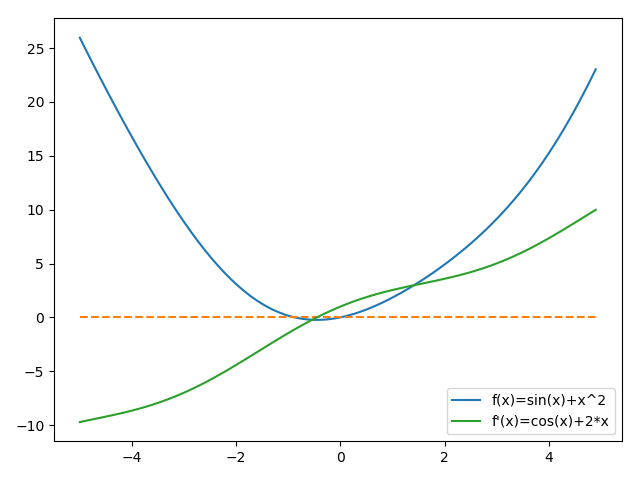
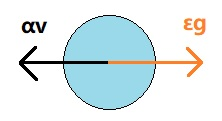

<!DOCTYPE html>
<html lang="zh" class="loading">
<head><meta name="generator" content="Hexo 3.9.0">
    <meta charset="UTF-8">
    <meta http-equiv="X-UA-Compatible" content="IE=edge,chrome=1">
    <meta name="viewport" content="width=device-width, minimum-scale=1.0, maximum-scale=1.0, user-scalable=no">
    <title>深度模型中的优化——momentum|AdaGrad|RMSProp|Adam - WhiteRobe&#39;s Blog</title>
    <meta name="apple-mobile-web-app-capable" content="yes">
    <meta name="apple-mobile-web-app-status-bar-style" content="black-translucent">
    <meta name="google" content="notranslate">
    <link href="https://cdnjs.cloudflare.com/ajax/libs/KaTeX/0.11.0/katex.min.css" rel="stylesheet">
    <meta name="keywords" content="WhiteRobe, Blog,"> 
    <meta name="description" content="着眼实例，从最简单的开始；你觉得再简单不过的东西，或许在别人眼里那就是悬崖。而我，愿作那攀岩绳。,
你可以点此切换夜间阅读模式。

在随机梯度下降中，沿着最速下降方向可以得到最快的下降速度：xt+1=xt−λ▽f(xt)x_{t+1}=x_t-\lambda \triangledown f(x_,"> 
    <meta name="author" content="WhiteRobe"> 
    <link rel="alternative" href="atom.xml" title="WhiteRobe&#39;s Blog" type="application/atom+xml"> 
    <link rel="icon" href="/img/favicon.png"> 
    <link rel="stylesheet" href="//cdn.jsdelivr.net/npm/gitalk@1/dist/gitalk.css">
    <link rel="stylesheet" href="/css/animate.css">
    <link rel="stylesheet" href="/css/fira_code.css">
    <link rel="stylesheet" href="/css/diaspora.css">
    <script async src="https://busuanzi.ibruce.info/busuanzi/2.3/busuanzi.pure.mini.js"></script>
    
        <!--站内搜索API-->
        <script src="https://cdn.jsdelivr.net/algoliasearch/3/algoliasearch.min.js"></script>
        <link rel="stylesheet" href="https://cdn.jsdelivr.net/npm/instantsearch.css@7.3.1/themes/algolia-min.css" integrity="sha256-HB49n/BZjuqiCtQQf49OdZn63XuKFaxcIHWf0HNKte8=" crossorigin="anonymous">
        <script src="https://cdn.jsdelivr.net/npm/instantsearch.js@3.4.0/dist/instantsearch.production.min.js" integrity="sha256-pM0n88cBFRHpSn0N26ETsQdwpA7WAXJDvkHeCLh3ujI=" crossorigin="anonymous"></script>
    
    <!-- <script async src="//pagead2.googlesyndication.com/pagead/js/adsbygoogle.js"></script>
    <script>
          // No more ads!
         (adsbygoogle = window.adsbygoogle || []).push({
              google_ad_client: "ca-pub-8691406134231910",
              enable_page_level_ads: true
         });
    </script>
    <script async custom-element="amp-auto-ads"
        src="https://cdn.ampproject.org/v0/amp-auto-ads-0.1.js">
    </script> -->
</head>
</html>
<body class="loading">
    <span id="config-title" style="display:none">WhiteRobe&#39;s Blog</span>
    <div id="loader"></div>
    <div id="single">
    <div id="top" style="display: block; display: block;position: fixed; top: 0px;">
    <div class="bar" style="width: 0;"></div>
    <a class="icon-home image-icon" href="javascript:;" data-url="https://blog.whiterobe.top"></a>
    <div title="播放/暂停" class="icon-play"></div>
    <h3 class="subtitle">深度模型中的优化——momentum|AdaGrad|RMSProp|Adam</h3>
    <div class="social">
        <!--<div class="like-icon">-->
            <!--<a href="javascript:;" class="likeThis active"><span class="icon-like"></span><span class="count">76</span></a>-->
        <!--</div>-->
        <div style="font-size: 1rem;margin-right: -10px">
          分享此文：
        </div>
        <div>
          <div class="share">
              <a title="获取文章地址二维码" class="icon-scan" href="javascript:;"></a>
          </div>
          <div id="qr"></div>
        </div>
    </div>
    <div class="scrollbar"></div>
</div>

    <div class="section" style="margin-top: 50px">
        <div class="article">
    <div class='main'>
        <h1 class="title">深度模型中的优化——momentum|AdaGrad|RMSProp|Adam</h1>
        <div class="stuff">
            <span>九月 24, 2019</span>
            <span id="busuanzi_container_page_pv" class="busuanzi_page" style="display:none">本文总阅读量<div id="busuanzi_value_page_pv" style="display: inline;">1</div>次</span>
            
  <ul class="post-tags-list"><li class="post-tags-list-item"><a class="post-tags-list-link" href="/tags/学习笔记/">学习笔记</a></li><li class="post-tags-list-item"><a class="post-tags-list-link" href="/tags/工程优化/">工程优化</a></li><li class="post-tags-list-item"><a class="post-tags-list-link" href="/tags/数理逻辑/">数理逻辑</a></li><li class="post-tags-list-item"><a class="post-tags-list-link" href="/tags/深度学习/">深度学习</a></li><li class="post-tags-list-item"><a class="post-tags-list-link" href="/tags/算法/">算法</a></li></ul>


        </div>
        <div class="low-resolution-warn-info">当前设备屏幕尺寸过小，推荐使用PC模式浏览。</div>
        <div class="content markdown">
            <blockquote>
<p>你可以<a href="./%E6%B7%B1%E5%BA%A6%E6%A8%A1%E5%9E%8B%E4%B8%AD%E7%9A%84%E4%BC%98%E5%8C%96.html">点此切换</a>夜间阅读模式。</p>
</blockquote>
<p>在随机梯度下降中，沿着<a href="/2019/09/20/zh/%E9%9A%8F%E6%9C%BA%E6%A2%AF%E5%BA%A6%E4%B8%8B%E9%99%8D/#%E6%A2%AF%E5%BA%A6%E4%B8%8B%E9%99%8Dgradient-descent">最速下降方向</a>可以得到最快的下降速度：<span class="katex"><span class="katex-mathml"><math><semantics><mrow><msub><mi>x</mi><mrow><mi>t</mi><mo>+</mo><mn>1</mn></mrow></msub><mo>=</mo><msub><mi>x</mi><mi>t</mi></msub><mo>−</mo><mi>λ</mi><mi mathvariant="normal">▽</mi><mi>f</mi><mo stretchy="false">(</mo><msub><mi>x</mi><mi>t</mi></msub><mo stretchy="false">)</mo></mrow><annotation encoding="application/x-tex">x_{t+1}=x_t-\lambda \triangledown f(x_t)</annotation></semantics></math></span><span class="katex-html" aria-hidden="true"><span class="base"><span class="strut" style="height:0.638891em;vertical-align:-0.208331em;"></span><span class="mord"><span class="mord mathdefault">x</span><span class="msupsub"><span class="vlist-t vlist-t2"><span class="vlist-r"><span class="vlist" style="height:0.301108em;"><span style="top:-2.5500000000000003em;margin-left:0em;margin-right:0.05em;"><span class="pstrut" style="height:2.7em;"></span><span class="sizing reset-size6 size3 mtight"><span class="mord mtight"><span class="mord mathdefault mtight">t</span><span class="mbin mtight">+</span><span class="mord mtight">1</span></span></span></span></span><span class="vlist-s">​</span></span><span class="vlist-r"><span class="vlist" style="height:0.208331em;"><span></span></span></span></span></span></span><span class="mspace" style="margin-right:0.2777777777777778em;"></span><span class="mrel">=</span><span class="mspace" style="margin-right:0.2777777777777778em;"></span></span><span class="base"><span class="strut" style="height:0.73333em;vertical-align:-0.15em;"></span><span class="mord"><span class="mord mathdefault">x</span><span class="msupsub"><span class="vlist-t vlist-t2"><span class="vlist-r"><span class="vlist" style="height:0.2805559999999999em;"><span style="top:-2.5500000000000003em;margin-left:0em;margin-right:0.05em;"><span class="pstrut" style="height:2.7em;"></span><span class="sizing reset-size6 size3 mtight"><span class="mord mathdefault mtight">t</span></span></span></span><span class="vlist-s">​</span></span><span class="vlist-r"><span class="vlist" style="height:0.15em;"><span></span></span></span></span></span></span><span class="mspace" style="margin-right:0.2222222222222222em;"></span><span class="mbin">−</span><span class="mspace" style="margin-right:0.2222222222222222em;"></span></span><span class="base"><span class="strut" style="height:1em;vertical-align:-0.25em;"></span><span class="mord mathdefault">λ</span><span class="mord amsrm">▽</span><span class="mord mathdefault" style="margin-right:0.10764em;">f</span><span class="mopen">(</span><span class="mord"><span class="mord mathdefault">x</span><span class="msupsub"><span class="vlist-t vlist-t2"><span class="vlist-r"><span class="vlist" style="height:0.2805559999999999em;"><span style="top:-2.5500000000000003em;margin-left:0em;margin-right:0.05em;"><span class="pstrut" style="height:2.7em;"></span><span class="sizing reset-size6 size3 mtight"><span class="mord mathdefault mtight">t</span></span></span></span><span class="vlist-s">​</span></span><span class="vlist-r"><span class="vlist" style="height:0.15em;"><span></span></span></span></span></span></span><span class="mclose">)</span></span></span></span>。其中，<span class="katex"><span class="katex-mathml"><math><semantics><mrow><mi>λ</mi></mrow><annotation encoding="application/x-tex">\lambda</annotation></semantics></math></span><span class="katex-html" aria-hidden="true"><span class="base"><span class="strut" style="height:0.69444em;vertical-align:0em;"></span><span class="mord mathdefault">λ</span></span></span></span>是下降步长，也被称为<mark>学习率</mark>。</p>
<p>在常见的SGD算法中，批量梯度下降(BSGD)的算法如下：(引用《深度学习》(花书)P<sub>180</sub>)</p>
<blockquote>
<p><strong>算法：随机梯度下降(SGD)在第<span class="katex"><span class="katex-mathml"><math><semantics><mrow><mi>k</mi></mrow><annotation encoding="application/x-tex">k</annotation></semantics></math></span><span class="katex-html" aria-hidden="true"><span class="base"><span class="strut" style="height:0.69444em;vertical-align:0em;"></span><span class="mord mathdefault" style="margin-right:0.03148em;">k</span></span></span></span>个训练迭代的更新</strong></p>
<hr>
<p><strong>Require</strong>: 学习率 <span class="katex"><span class="katex-mathml"><math><semantics><mrow><msub><mi>ϵ</mi><mi>k</mi></msub></mrow><annotation encoding="application/x-tex">\epsilon_k</annotation></semantics></math></span><span class="katex-html" aria-hidden="true"><span class="base"><span class="strut" style="height:0.58056em;vertical-align:-0.15em;"></span><span class="mord"><span class="mord mathdefault">ϵ</span><span class="msupsub"><span class="vlist-t vlist-t2"><span class="vlist-r"><span class="vlist" style="height:0.33610799999999996em;"><span style="top:-2.5500000000000003em;margin-left:0em;margin-right:0.05em;"><span class="pstrut" style="height:2.7em;"></span><span class="sizing reset-size6 size3 mtight"><span class="mord mathdefault mtight" style="margin-right:0.03148em;">k</span></span></span></span><span class="vlist-s">​</span></span><span class="vlist-r"><span class="vlist" style="height:0.15em;"><span></span></span></span></span></span></span></span></span></span></p>
<p><strong>直观上理解Require</strong>: 初始参数 <span class="katex"><span class="katex-mathml"><math><semantics><mrow><mi>θ</mi></mrow><annotation encoding="application/x-tex">\theta</annotation></semantics></math></span><span class="katex-html" aria-hidden="true"><span class="base"><span class="strut" style="height:0.69444em;vertical-align:0em;"></span><span class="mord mathdefault" style="margin-right:0.02778em;">θ</span></span></span></span></p>
<p><strong>while</strong> 停止准则未满足 <strong>do</strong></p>
<p>​    从训练集中采样<span class="katex"><span class="katex-mathml"><math><semantics><mrow><mi>m</mi></mrow><annotation encoding="application/x-tex">m</annotation></semantics></math></span><span class="katex-html" aria-hidden="true"><span class="base"><span class="strut" style="height:0.43056em;vertical-align:0em;"></span><span class="mord mathdefault">m</span></span></span></span>个样本<span class="katex"><span class="katex-mathml"><math><semantics><mrow><msup><mi>x</mi><mrow><mo stretchy="false">(</mo><mn>1</mn><mo stretchy="false">)</mo></mrow></msup><mo separator="true">,</mo><mo>…</mo><mo separator="true">,</mo><msup><mi>x</mi><mrow><mo stretchy="false">(</mo><mi>m</mi><mo stretchy="false">)</mo></mrow></msup></mrow><annotation encoding="application/x-tex">{x^{(1)},\dots,x^{(m)}}</annotation></semantics></math></span><span class="katex-html" aria-hidden="true"><span class="base"><span class="strut" style="height:1.0824399999999998em;vertical-align:-0.19444em;"></span><span class="mord"><span class="mord"><span class="mord mathdefault">x</span><span class="msupsub"><span class="vlist-t"><span class="vlist-r"><span class="vlist" style="height:0.8879999999999999em;"><span style="top:-3.063em;margin-right:0.05em;"><span class="pstrut" style="height:2.7em;"></span><span class="sizing reset-size6 size3 mtight"><span class="mord mtight"><span class="mopen mtight">(</span><span class="mord mtight">1</span><span class="mclose mtight">)</span></span></span></span></span></span></span></span></span><span class="mpunct">,</span><span class="mspace" style="margin-right:0.16666666666666666em;"></span><span class="minner">…</span><span class="mspace" style="margin-right:0.16666666666666666em;"></span><span class="mpunct">,</span><span class="mspace" style="margin-right:0.16666666666666666em;"></span><span class="mord"><span class="mord mathdefault">x</span><span class="msupsub"><span class="vlist-t"><span class="vlist-r"><span class="vlist" style="height:0.8879999999999999em;"><span style="top:-3.063em;margin-right:0.05em;"><span class="pstrut" style="height:2.7em;"></span><span class="sizing reset-size6 size3 mtight"><span class="mord mtight"><span class="mopen mtight">(</span><span class="mord mathdefault mtight">m</span><span class="mclose mtight">)</span></span></span></span></span></span></span></span></span></span></span></span></span>，其中<span class="katex"><span class="katex-mathml"><math><semantics><mrow><msup><mi>x</mi><mrow><mo stretchy="false">(</mo><mi>i</mi><mo stretchy="false">)</mo></mrow></msup></mrow><annotation encoding="application/x-tex">x^{(i)}</annotation></semantics></math></span><span class="katex-html" aria-hidden="true"><span class="base"><span class="strut" style="height:0.8879999999999999em;vertical-align:0em;"></span><span class="mord"><span class="mord mathdefault">x</span><span class="msupsub"><span class="vlist-t"><span class="vlist-r"><span class="vlist" style="height:0.8879999999999999em;"><span style="top:-3.063em;margin-right:0.05em;"><span class="pstrut" style="height:2.7em;"></span><span class="sizing reset-size6 size3 mtight"><span class="mord mtight"><span class="mopen mtight">(</span><span class="mord mathdefault mtight">i</span><span class="mclose mtight">)</span></span></span></span></span></span></span></span></span></span></span></span>对应的目标为<span class="katex"><span class="katex-mathml"><math><semantics><mrow><msup><mi>y</mi><mrow><mo stretchy="false">(</mo><mi>i</mi><mo stretchy="false">)</mo></mrow></msup></mrow><annotation encoding="application/x-tex">y^{(i)}</annotation></semantics></math></span><span class="katex-html" aria-hidden="true"><span class="base"><span class="strut" style="height:1.0824399999999998em;vertical-align:-0.19444em;"></span><span class="mord"><span class="mord mathdefault" style="margin-right:0.03588em;">y</span><span class="msupsub"><span class="vlist-t"><span class="vlist-r"><span class="vlist" style="height:0.8879999999999999em;"><span style="top:-3.063em;margin-right:0.05em;"><span class="pstrut" style="height:2.7em;"></span><span class="sizing reset-size6 size3 mtight"><span class="mord mtight"><span class="mopen mtight">(</span><span class="mord mathdefault mtight">i</span><span class="mclose mtight">)</span></span></span></span></span></span></span></span></span></span></span></span></p>
<p>​    计算梯度估计:  <span class="katex"><span class="katex-mathml"><math><semantics><mrow><mover accent="true"><mi>g</mi><mo>^</mo></mover><mo>←</mo><mo>+</mo><mfrac><mn>1</mn><mi>m</mi></mfrac><msub><mi mathvariant="normal">▽</mi><mi>θ</mi></msub><msub><mo>∑</mo><mi>i</mi></msub><mrow><mi>L</mi><mo stretchy="false">(</mo><mi>f</mi><mo stretchy="false">(</mo><msup><mi>x</mi><mrow><mo stretchy="false">(</mo><mi>i</mi><mo stretchy="false">)</mo></mrow></msup><mo separator="true">;</mo><mi>θ</mi><mo stretchy="false">)</mo><mo separator="true">,</mo><msup><mi>y</mi><mrow><mo stretchy="false">(</mo><mi>i</mi><mo stretchy="false">)</mo></mrow></msup><mo stretchy="false">)</mo></mrow></mrow><annotation encoding="application/x-tex">\hat g \leftarrow +\frac{1}{m}\triangledown_\theta\sum_i{L(f(x^{(i)};\theta), y^{(i)})}</annotation></semantics></math></span><span class="katex-html" aria-hidden="true"><span class="base"><span class="strut" style="height:0.8888799999999999em;vertical-align:-0.19444em;"></span><span class="mord accent"><span class="vlist-t vlist-t2"><span class="vlist-r"><span class="vlist" style="height:0.69444em;"><span style="top:-3em;"><span class="pstrut" style="height:3em;"></span><span class="mord mathdefault" style="margin-right:0.03588em;">g</span></span><span style="top:-3em;"><span class="pstrut" style="height:3em;"></span><span class="accent-body" style="left:-0.22222em;">^</span></span></span><span class="vlist-s">​</span></span><span class="vlist-r"><span class="vlist" style="height:0.19444em;"><span></span></span></span></span></span><span class="mspace" style="margin-right:0.2777777777777778em;"></span><span class="mrel">←</span><span class="mspace" style="margin-right:0.2777777777777778em;"></span></span><span class="base"><span class="strut" style="height:1.2329999999999999em;vertical-align:-0.345em;"></span><span class="mord">+</span><span class="mord"><span class="mopen nulldelimiter"></span><span class="mfrac"><span class="vlist-t vlist-t2"><span class="vlist-r"><span class="vlist" style="height:0.845108em;"><span style="top:-2.6550000000000002em;"><span class="pstrut" style="height:3em;"></span><span class="sizing reset-size6 size3 mtight"><span class="mord mtight"><span class="mord mathdefault mtight">m</span></span></span></span><span style="top:-3.23em;"><span class="pstrut" style="height:3em;"></span><span class="frac-line" style="border-bottom-width:0.04em;"></span></span><span style="top:-3.394em;"><span class="pstrut" style="height:3em;"></span><span class="sizing reset-size6 size3 mtight"><span class="mord mtight"><span class="mord mtight">1</span></span></span></span></span><span class="vlist-s">​</span></span><span class="vlist-r"><span class="vlist" style="height:0.345em;"><span></span></span></span></span></span><span class="mclose nulldelimiter"></span></span><span class="mord"><span class="mord amsrm">▽</span><span class="msupsub"><span class="vlist-t vlist-t2"><span class="vlist-r"><span class="vlist" style="height:0.33610799999999996em;"><span style="top:-2.5500000000000003em;margin-left:0em;margin-right:0.05em;"><span class="pstrut" style="height:2.7em;"></span><span class="sizing reset-size6 size3 mtight"><span class="mord mathdefault mtight" style="margin-right:0.02778em;">θ</span></span></span></span><span class="vlist-s">​</span></span><span class="vlist-r"><span class="vlist" style="height:0.15em;"><span></span></span></span></span></span></span><span class="mspace" style="margin-right:0.16666666666666666em;"></span><span class="mop"><span class="mop op-symbol small-op" style="position:relative;top:-0.0000050000000000050004em;">∑</span><span class="msupsub"><span class="vlist-t vlist-t2"><span class="vlist-r"><span class="vlist" style="height:0.16195399999999993em;"><span style="top:-2.40029em;margin-left:0em;margin-right:0.05em;"><span class="pstrut" style="height:2.7em;"></span><span class="sizing reset-size6 size3 mtight"><span class="mord mathdefault mtight">i</span></span></span></span><span class="vlist-s">​</span></span><span class="vlist-r"><span class="vlist" style="height:0.29971000000000003em;"><span></span></span></span></span></span></span><span class="mspace" style="margin-right:0.16666666666666666em;"></span><span class="mord"><span class="mord mathdefault">L</span><span class="mopen">(</span><span class="mord mathdefault" style="margin-right:0.10764em;">f</span><span class="mopen">(</span><span class="mord"><span class="mord mathdefault">x</span><span class="msupsub"><span class="vlist-t"><span class="vlist-r"><span class="vlist" style="height:0.8879999999999999em;"><span style="top:-3.063em;margin-right:0.05em;"><span class="pstrut" style="height:2.7em;"></span><span class="sizing reset-size6 size3 mtight"><span class="mord mtight"><span class="mopen mtight">(</span><span class="mord mathdefault mtight">i</span><span class="mclose mtight">)</span></span></span></span></span></span></span></span></span><span class="mpunct">;</span><span class="mspace" style="margin-right:0.16666666666666666em;"></span><span class="mord mathdefault" style="margin-right:0.02778em;">θ</span><span class="mclose">)</span><span class="mpunct">,</span><span class="mspace" style="margin-right:0.16666666666666666em;"></span><span class="mord"><span class="mord mathdefault" style="margin-right:0.03588em;">y</span><span class="msupsub"><span class="vlist-t"><span class="vlist-r"><span class="vlist" style="height:0.8879999999999999em;"><span style="top:-3.063em;margin-right:0.05em;"><span class="pstrut" style="height:2.7em;"></span><span class="sizing reset-size6 size3 mtight"><span class="mord mtight"><span class="mopen mtight">(</span><span class="mord mathdefault mtight">i</span><span class="mclose mtight">)</span></span></span></span></span></span></span></span></span><span class="mclose">)</span></span></span></span></span></p>
<p>​    应用更新:  <span class="katex"><span class="katex-mathml"><math><semantics><mrow><mi>θ</mi><mo>←</mo><mi>θ</mi><mo>−</mo><mi>ϵ</mi><mover accent="true"><mi>g</mi><mo>^</mo></mover></mrow><annotation encoding="application/x-tex">\theta \leftarrow \theta - \epsilon \hat g</annotation></semantics></math></span><span class="katex-html" aria-hidden="true"><span class="base"><span class="strut" style="height:0.69444em;vertical-align:0em;"></span><span class="mord mathdefault" style="margin-right:0.02778em;">θ</span><span class="mspace" style="margin-right:0.2777777777777778em;"></span><span class="mrel">←</span><span class="mspace" style="margin-right:0.2777777777777778em;"></span></span><span class="base"><span class="strut" style="height:0.77777em;vertical-align:-0.08333em;"></span><span class="mord mathdefault" style="margin-right:0.02778em;">θ</span><span class="mspace" style="margin-right:0.2222222222222222em;"></span><span class="mbin">−</span><span class="mspace" style="margin-right:0.2222222222222222em;"></span></span><span class="base"><span class="strut" style="height:0.8888799999999999em;vertical-align:-0.19444em;"></span><span class="mord mathdefault">ϵ</span><span class="mord accent"><span class="vlist-t vlist-t2"><span class="vlist-r"><span class="vlist" style="height:0.69444em;"><span style="top:-3em;"><span class="pstrut" style="height:3em;"></span><span class="mord mathdefault" style="margin-right:0.03588em;">g</span></span><span style="top:-3em;"><span class="pstrut" style="height:3em;"></span><span class="accent-body" style="left:-0.22222em;">^</span></span></span><span class="vlist-s">​</span></span><span class="vlist-r"><span class="vlist" style="height:0.19444em;"><span></span></span></span></span></span></span></span></span></p>
<p><strong>end while</strong></p>
<hr>
</blockquote>
<p><em>PS:花书中把学习率记为 <span class="katex"><span class="katex-mathml"><math><semantics><mrow><mi>ϵ</mi></mrow><annotation encoding="application/x-tex">\epsilon</annotation></semantics></math></span><span class="katex-html" aria-hidden="true"><span class="base"><span class="strut" style="height:0.43056em;vertical-align:0em;"></span><span class="mord mathdefault">ϵ</span></span></span></span>，把收敛条件记为<span class="katex"><span class="katex-mathml"><math><semantics><mrow><mi>λ</mi></mrow><annotation encoding="application/x-tex">\lambda</annotation></semantics></math></span><span class="katex-html" aria-hidden="true"><span class="base"><span class="strut" style="height:0.69444em;vertical-align:0em;"></span><span class="mord mathdefault">λ</span></span></span></span></em>.</p>
<h2 id="下降步长对梯度下降的影响"><a class="markdownIt-Anchor" href="#下降步长对梯度下降的影响"></a> 下降步长对梯度下降的影响</h2>
<p>一个简单的例子：给定目标函数 <span class="katex"><span class="katex-mathml"><math><semantics><mrow><mi>f</mi><mo stretchy="false">(</mo><mi>x</mi><mo stretchy="false">)</mo><mo>=</mo><msup><mi>x</mi><mn>2</mn></msup></mrow><annotation encoding="application/x-tex">f(x)=x^2</annotation></semantics></math></span><span class="katex-html" aria-hidden="true"><span class="base"><span class="strut" style="height:1em;vertical-align:-0.25em;"></span><span class="mord mathdefault" style="margin-right:0.10764em;">f</span><span class="mopen">(</span><span class="mord mathdefault">x</span><span class="mclose">)</span><span class="mspace" style="margin-right:0.2777777777777778em;"></span><span class="mrel">=</span><span class="mspace" style="margin-right:0.2777777777777778em;"></span></span><span class="base"><span class="strut" style="height:0.8141079999999999em;vertical-align:0em;"></span><span class="mord"><span class="mord mathdefault">x</span><span class="msupsub"><span class="vlist-t"><span class="vlist-r"><span class="vlist" style="height:0.8141079999999999em;"><span style="top:-3.063em;margin-right:0.05em;"><span class="pstrut" style="height:2.7em;"></span><span class="sizing reset-size6 size3 mtight"><span class="mord mtight">2</span></span></span></span></span></span></span></span></span></span></span>，初始点<span class="katex"><span class="katex-mathml"><math><semantics><mrow><msub><mi>x</mi><mn>0</mn></msub><mo>=</mo><mn>1</mn></mrow><annotation encoding="application/x-tex">x_0=1</annotation></semantics></math></span><span class="katex-html" aria-hidden="true"><span class="base"><span class="strut" style="height:0.58056em;vertical-align:-0.15em;"></span><span class="mord"><span class="mord mathdefault">x</span><span class="msupsub"><span class="vlist-t vlist-t2"><span class="vlist-r"><span class="vlist" style="height:0.30110799999999993em;"><span style="top:-2.5500000000000003em;margin-left:0em;margin-right:0.05em;"><span class="pstrut" style="height:2.7em;"></span><span class="sizing reset-size6 size3 mtight"><span class="mord mtight">0</span></span></span></span><span class="vlist-s">​</span></span><span class="vlist-r"><span class="vlist" style="height:0.15em;"><span></span></span></span></span></span></span><span class="mspace" style="margin-right:0.2777777777777778em;"></span><span class="mrel">=</span><span class="mspace" style="margin-right:0.2777777777777778em;"></span></span><span class="base"><span class="strut" style="height:0.64444em;vertical-align:0em;"></span><span class="mord">1</span></span></span></span>，其梯度(导数)为<span class="katex"><span class="katex-mathml"><math><semantics><mrow><mn>2</mn><mi>x</mi></mrow><annotation encoding="application/x-tex">2x</annotation></semantics></math></span><span class="katex-html" aria-hidden="true"><span class="base"><span class="strut" style="height:0.64444em;vertical-align:0em;"></span><span class="mord">2</span><span class="mord mathdefault">x</span></span></span></span>，给定步长<span class="katex"><span class="katex-mathml"><math><semantics><mrow><mi>λ</mi><mo>=</mo><mn>1</mn></mrow><annotation encoding="application/x-tex">\lambda=1</annotation></semantics></math></span><span class="katex-html" aria-hidden="true"><span class="base"><span class="strut" style="height:0.69444em;vertical-align:0em;"></span><span class="mord mathdefault">λ</span><span class="mspace" style="margin-right:0.2777777777777778em;"></span><span class="mrel">=</span><span class="mspace" style="margin-right:0.2777777777777778em;"></span></span><span class="base"><span class="strut" style="height:0.64444em;vertical-align:0em;"></span><span class="mord">1</span></span></span></span>，根据上文的更新公式计算<span class="katex"><span class="katex-mathml"><math><semantics><mrow><msub><mi>x</mi><mn>1</mn></msub><mo>=</mo><msub><mi>x</mi><mn>0</mn></msub><mo>−</mo><mi>λ</mi><mo>×</mo><mn>2</mn></mrow><annotation encoding="application/x-tex">x_1=x_0-\lambda \times 2</annotation></semantics></math></span><span class="katex-html" aria-hidden="true"><span class="base"><span class="strut" style="height:0.58056em;vertical-align:-0.15em;"></span><span class="mord"><span class="mord mathdefault">x</span><span class="msupsub"><span class="vlist-t vlist-t2"><span class="vlist-r"><span class="vlist" style="height:0.30110799999999993em;"><span style="top:-2.5500000000000003em;margin-left:0em;margin-right:0.05em;"><span class="pstrut" style="height:2.7em;"></span><span class="sizing reset-size6 size3 mtight"><span class="mord mtight">1</span></span></span></span><span class="vlist-s">​</span></span><span class="vlist-r"><span class="vlist" style="height:0.15em;"><span></span></span></span></span></span></span><span class="mspace" style="margin-right:0.2777777777777778em;"></span><span class="mrel">=</span><span class="mspace" style="margin-right:0.2777777777777778em;"></span></span><span class="base"><span class="strut" style="height:0.73333em;vertical-align:-0.15em;"></span><span class="mord"><span class="mord mathdefault">x</span><span class="msupsub"><span class="vlist-t vlist-t2"><span class="vlist-r"><span class="vlist" style="height:0.30110799999999993em;"><span style="top:-2.5500000000000003em;margin-left:0em;margin-right:0.05em;"><span class="pstrut" style="height:2.7em;"></span><span class="sizing reset-size6 size3 mtight"><span class="mord mtight">0</span></span></span></span><span class="vlist-s">​</span></span><span class="vlist-r"><span class="vlist" style="height:0.15em;"><span></span></span></span></span></span></span><span class="mspace" style="margin-right:0.2222222222222222em;"></span><span class="mbin">−</span><span class="mspace" style="margin-right:0.2222222222222222em;"></span></span><span class="base"><span class="strut" style="height:0.77777em;vertical-align:-0.08333em;"></span><span class="mord mathdefault">λ</span><span class="mspace" style="margin-right:0.2222222222222222em;"></span><span class="mbin">×</span><span class="mspace" style="margin-right:0.2222222222222222em;"></span></span><span class="base"><span class="strut" style="height:0.64444em;vertical-align:0em;"></span><span class="mord">2</span></span></span></span>，发现<span class="katex"><span class="katex-mathml"><math><semantics><mrow><mi>f</mi><mo stretchy="false">(</mo><msub><mi>x</mi><mn>1</mn></msub><mo stretchy="false">)</mo><mo>=</mo><mi>f</mi><mo stretchy="false">(</mo><msub><mi>x</mi><mn>0</mn></msub><mo stretchy="false">)</mo></mrow><annotation encoding="application/x-tex">f(x_1)=f(x_0)</annotation></semantics></math></span><span class="katex-html" aria-hidden="true"><span class="base"><span class="strut" style="height:1em;vertical-align:-0.25em;"></span><span class="mord mathdefault" style="margin-right:0.10764em;">f</span><span class="mopen">(</span><span class="mord"><span class="mord mathdefault">x</span><span class="msupsub"><span class="vlist-t vlist-t2"><span class="vlist-r"><span class="vlist" style="height:0.30110799999999993em;"><span style="top:-2.5500000000000003em;margin-left:0em;margin-right:0.05em;"><span class="pstrut" style="height:2.7em;"></span><span class="sizing reset-size6 size3 mtight"><span class="mord mtight">1</span></span></span></span><span class="vlist-s">​</span></span><span class="vlist-r"><span class="vlist" style="height:0.15em;"><span></span></span></span></span></span></span><span class="mclose">)</span><span class="mspace" style="margin-right:0.2777777777777778em;"></span><span class="mrel">=</span><span class="mspace" style="margin-right:0.2777777777777778em;"></span></span><span class="base"><span class="strut" style="height:1em;vertical-align:-0.25em;"></span><span class="mord mathdefault" style="margin-right:0.10764em;">f</span><span class="mopen">(</span><span class="mord"><span class="mord mathdefault">x</span><span class="msupsub"><span class="vlist-t vlist-t2"><span class="vlist-r"><span class="vlist" style="height:0.30110799999999993em;"><span style="top:-2.5500000000000003em;margin-left:0em;margin-right:0.05em;"><span class="pstrut" style="height:2.7em;"></span><span class="sizing reset-size6 size3 mtight"><span class="mord mtight">0</span></span></span></span><span class="vlist-s">​</span></span><span class="vlist-r"><span class="vlist" style="height:0.15em;"><span></span></span></span></span></span></span><span class="mclose">)</span></span></span></span>；继续进行下降更新，发现<span class="katex"><span class="katex-mathml"><math><semantics><mrow><msub><mi>x</mi><mn>2</mn></msub><mo>=</mo><mn>1</mn><mo>=</mo><msub><mi>x</mi><mn>0</mn></msub><mo>…</mo></mrow><annotation encoding="application/x-tex">x_2=1=x_0\dots</annotation></semantics></math></span><span class="katex-html" aria-hidden="true"><span class="base"><span class="strut" style="height:0.58056em;vertical-align:-0.15em;"></span><span class="mord"><span class="mord mathdefault">x</span><span class="msupsub"><span class="vlist-t vlist-t2"><span class="vlist-r"><span class="vlist" style="height:0.30110799999999993em;"><span style="top:-2.5500000000000003em;margin-left:0em;margin-right:0.05em;"><span class="pstrut" style="height:2.7em;"></span><span class="sizing reset-size6 size3 mtight"><span class="mord mtight">2</span></span></span></span><span class="vlist-s">​</span></span><span class="vlist-r"><span class="vlist" style="height:0.15em;"><span></span></span></span></span></span></span><span class="mspace" style="margin-right:0.2777777777777778em;"></span><span class="mrel">=</span><span class="mspace" style="margin-right:0.2777777777777778em;"></span></span><span class="base"><span class="strut" style="height:0.64444em;vertical-align:0em;"></span><span class="mord">1</span><span class="mspace" style="margin-right:0.2777777777777778em;"></span><span class="mrel">=</span><span class="mspace" style="margin-right:0.2777777777777778em;"></span></span><span class="base"><span class="strut" style="height:0.58056em;vertical-align:-0.15em;"></span><span class="mord"><span class="mord mathdefault">x</span><span class="msupsub"><span class="vlist-t vlist-t2"><span class="vlist-r"><span class="vlist" style="height:0.30110799999999993em;"><span style="top:-2.5500000000000003em;margin-left:0em;margin-right:0.05em;"><span class="pstrut" style="height:2.7em;"></span><span class="sizing reset-size6 size3 mtight"><span class="mord mtight">0</span></span></span></span><span class="vlist-s">​</span></span><span class="vlist-r"><span class="vlist" style="height:0.15em;"><span></span></span></span></span></span></span><span class="mspace" style="margin-right:0.16666666666666666em;"></span><span class="minner">…</span></span></span></span>；如此反复，搜寻结果会反复在[-1, 1]之间横跳，且目标函数的值并不下降。</p>
<p>显然，随着训练的推进，我们应当逐渐减小下降步长。保证SGD收敛的一个充分条件是：</p>
<p class="katex-block"><span class="katex-display"><span class="katex"><span class="katex-mathml"><math><semantics><mrow><munderover><mo>∑</mo><mrow><mi>k</mi><mo>=</mo><mn>1</mn></mrow><mi mathvariant="normal">∞</mi></munderover><msub><mi>ϵ</mi><mi>k</mi></msub><mo>=</mo><mi mathvariant="normal">∞</mi><mo separator="true">,</mo><mtext> </mtext><mi>A</mi><mi>N</mi><mi>D</mi><mtext> </mtext><munderover><mo>∑</mo><mrow><mi>k</mi><mo>=</mo><mn>1</mn></mrow><mi mathvariant="normal">∞</mi></munderover><msubsup><mi>ϵ</mi><mi>k</mi><mn>2</mn></msubsup><mo>&lt;</mo><mi mathvariant="normal">∞</mi></mrow><annotation encoding="application/x-tex">\sum_{k=1}^\infin \epsilon_k=\infin, \ AND \ \sum_{k=1}^\infin \epsilon^2_k&lt;\infin
</annotation></semantics></math></span><span class="katex-html" aria-hidden="true"><span class="base"><span class="strut" style="height:2.9535100000000005em;vertical-align:-1.302113em;"></span><span class="mop op-limits"><span class="vlist-t vlist-t2"><span class="vlist-r"><span class="vlist" style="height:1.6513970000000002em;"><span style="top:-1.8478869999999998em;margin-left:0em;"><span class="pstrut" style="height:3.05em;"></span><span class="sizing reset-size6 size3 mtight"><span class="mord mtight"><span class="mord mathdefault mtight" style="margin-right:0.03148em;">k</span><span class="mrel mtight">=</span><span class="mord mtight">1</span></span></span></span><span style="top:-3.0500049999999996em;"><span class="pstrut" style="height:3.05em;"></span><span><span class="mop op-symbol large-op">∑</span></span></span><span style="top:-4.300005em;margin-left:0em;"><span class="pstrut" style="height:3.05em;"></span><span class="sizing reset-size6 size3 mtight"><span class="mord mtight">∞</span></span></span></span><span class="vlist-s">​</span></span><span class="vlist-r"><span class="vlist" style="height:1.302113em;"><span></span></span></span></span></span><span class="mspace" style="margin-right:0.16666666666666666em;"></span><span class="mord"><span class="mord mathdefault">ϵ</span><span class="msupsub"><span class="vlist-t vlist-t2"><span class="vlist-r"><span class="vlist" style="height:0.33610799999999996em;"><span style="top:-2.5500000000000003em;margin-left:0em;margin-right:0.05em;"><span class="pstrut" style="height:2.7em;"></span><span class="sizing reset-size6 size3 mtight"><span class="mord mathdefault mtight" style="margin-right:0.03148em;">k</span></span></span></span><span class="vlist-s">​</span></span><span class="vlist-r"><span class="vlist" style="height:0.15em;"><span></span></span></span></span></span></span><span class="mspace" style="margin-right:0.2777777777777778em;"></span><span class="mrel">=</span><span class="mspace" style="margin-right:0.2777777777777778em;"></span></span><span class="base"><span class="strut" style="height:2.9535100000000005em;vertical-align:-1.302113em;"></span><span class="mord">∞</span><span class="mpunct">,</span><span class="mspace" style="margin-right:0.16666666666666666em;"></span><span class="mspace"> </span><span class="mord mathdefault">A</span><span class="mord mathdefault" style="margin-right:0.10903em;">N</span><span class="mord mathdefault" style="margin-right:0.02778em;">D</span><span class="mspace" style="margin-right:0.16666666666666666em;"></span><span class="mspace"> </span><span class="mop op-limits"><span class="vlist-t vlist-t2"><span class="vlist-r"><span class="vlist" style="height:1.6513970000000002em;"><span style="top:-1.8478869999999998em;margin-left:0em;"><span class="pstrut" style="height:3.05em;"></span><span class="sizing reset-size6 size3 mtight"><span class="mord mtight"><span class="mord mathdefault mtight" style="margin-right:0.03148em;">k</span><span class="mrel mtight">=</span><span class="mord mtight">1</span></span></span></span><span style="top:-3.0500049999999996em;"><span class="pstrut" style="height:3.05em;"></span><span><span class="mop op-symbol large-op">∑</span></span></span><span style="top:-4.300005em;margin-left:0em;"><span class="pstrut" style="height:3.05em;"></span><span class="sizing reset-size6 size3 mtight"><span class="mord mtight">∞</span></span></span></span><span class="vlist-s">​</span></span><span class="vlist-r"><span class="vlist" style="height:1.302113em;"><span></span></span></span></span></span><span class="mspace" style="margin-right:0.16666666666666666em;"></span><span class="mord"><span class="mord mathdefault">ϵ</span><span class="msupsub"><span class="vlist-t vlist-t2"><span class="vlist-r"><span class="vlist" style="height:0.8641079999999999em;"><span style="top:-2.4530000000000003em;margin-left:0em;margin-right:0.05em;"><span class="pstrut" style="height:2.7em;"></span><span class="sizing reset-size6 size3 mtight"><span class="mord mathdefault mtight" style="margin-right:0.03148em;">k</span></span></span><span style="top:-3.113em;margin-right:0.05em;"><span class="pstrut" style="height:2.7em;"></span><span class="sizing reset-size6 size3 mtight"><span class="mord mtight">2</span></span></span></span><span class="vlist-s">​</span></span><span class="vlist-r"><span class="vlist" style="height:0.247em;"><span></span></span></span></span></span></span><span class="mspace" style="margin-right:0.2777777777777778em;"></span><span class="mrel">&lt;</span><span class="mspace" style="margin-right:0.2777777777777778em;"></span></span><span class="base"><span class="strut" style="height:0.43056em;vertical-align:0em;"></span><span class="mord">∞</span></span></span></span></span></p>
<p>对于学习率/下降步长的选择设置，主要有以下两种情况：</p>
<ul>
<li>设置过大，会出现剧烈的震荡，甚至完全不收敛；</li>
<li>设置过小，学习过程非常缓慢，且容易卡在一个局部最优值。</li>
</ul>
<p>对于BSGD，一个比较有意思的现象是当训练的批次样本较多时，他更容易收敛。在本文中我们只在一维上进行搜索，因此很容易出现不收敛的现象。</p>
<h3 id="学习率优化算法的衡量标准"><a class="markdownIt-Anchor" href="#学习率优化算法的衡量标准"></a> 学习率优化算法的衡量标准</h3>
<p>引入<strong>额外误差(excess error)</strong> <span class="katex"><span class="katex-mathml"><math><semantics><mrow><mi>J</mi><mo stretchy="false">(</mo><mi>θ</mi><mo stretchy="false">)</mo><mo>−</mo><mi>m</mi><mi>i</mi><msub><mi>n</mi><mi>θ</mi></msub><mi>J</mi><mo stretchy="false">(</mo><mi>θ</mi><mo stretchy="false">)</mo></mrow><annotation encoding="application/x-tex">J(\theta)-min_\theta J(\theta)</annotation></semantics></math></span><span class="katex-html" aria-hidden="true"><span class="base"><span class="strut" style="height:1em;vertical-align:-0.25em;"></span><span class="mord mathdefault" style="margin-right:0.09618em;">J</span><span class="mopen">(</span><span class="mord mathdefault" style="margin-right:0.02778em;">θ</span><span class="mclose">)</span><span class="mspace" style="margin-right:0.2222222222222222em;"></span><span class="mbin">−</span><span class="mspace" style="margin-right:0.2222222222222222em;"></span></span><span class="base"><span class="strut" style="height:1em;vertical-align:-0.25em;"></span><span class="mord mathdefault">m</span><span class="mord mathdefault">i</span><span class="mord"><span class="mord mathdefault">n</span><span class="msupsub"><span class="vlist-t vlist-t2"><span class="vlist-r"><span class="vlist" style="height:0.33610799999999996em;"><span style="top:-2.5500000000000003em;margin-left:0em;margin-right:0.05em;"><span class="pstrut" style="height:2.7em;"></span><span class="sizing reset-size6 size3 mtight"><span class="mord mathdefault mtight" style="margin-right:0.02778em;">θ</span></span></span></span><span class="vlist-s">​</span></span><span class="vlist-r"><span class="vlist" style="height:0.15em;"><span></span></span></span></span></span></span><span class="mord mathdefault" style="margin-right:0.09618em;">J</span><span class="mopen">(</span><span class="mord mathdefault" style="margin-right:0.02778em;">θ</span><span class="mclose">)</span></span></span></span>，即当前代价函数超出全局最小值的量。在凸问题中，SGD在<span class="katex"><span class="katex-mathml"><math><semantics><mrow><mi>k</mi></mrow><annotation encoding="application/x-tex">k</annotation></semantics></math></span><span class="katex-html" aria-hidden="true"><span class="base"><span class="strut" style="height:0.69444em;vertical-align:0em;"></span><span class="mord mathdefault" style="margin-right:0.03148em;">k</span></span></span></span>步迭代之后的额外误差量级为<span class="katex"><span class="katex-mathml"><math><semantics><mrow><mi>O</mi><mo stretchy="false">(</mo><mfrac><mn>1</mn><msqrt><mi>k</mi></msqrt></mfrac><mo stretchy="false">)</mo></mrow><annotation encoding="application/x-tex">O(\frac{1}{\sqrt{k}})</annotation></semantics></math></span><span class="katex-html" aria-hidden="true"><span class="base"><span class="strut" style="height:1.383108em;vertical-align:-0.538em;"></span><span class="mord mathdefault" style="margin-right:0.02778em;">O</span><span class="mopen">(</span><span class="mord"><span class="mopen nulldelimiter"></span><span class="mfrac"><span class="vlist-t vlist-t2"><span class="vlist-r"><span class="vlist" style="height:0.845108em;"><span style="top:-2.5335085em;"><span class="pstrut" style="height:3em;"></span><span class="sizing reset-size6 size3 mtight"><span class="mord mtight"><span class="mord sqrt mtight"><span class="vlist-t vlist-t2"><span class="vlist-r"><span class="vlist" style="height:0.937845em;"><span class="svg-align" style="top:-3em;"><span class="pstrut" style="height:3em;"></span><span class="mord mtight" style="padding-left:0.833em;"><span class="mord mathdefault mtight" style="margin-right:0.03148em;">k</span></span></span><span style="top:-2.8978450000000002em;"><span class="pstrut" style="height:3em;"></span><span class="hide-tail mtight" style="min-width:0.853em;height:1.08em;"><svg width="400em" height="1.08em" viewbox="0 0 400000 1080" preserveaspectratio="xMinYMin slice"><path d="M95,702c-2.7,0,-7.17,-2.7,-13.5,-8c-5.8,-5.3,-9.5,
-10,-9.5,-14c0,-2,0.3,-3.3,1,-4c1.3,-2.7,23.83,-20.7,67.5,-54c44.2,-33.3,65.8,
-50.3,66.5,-51c1.3,-1.3,3,-2,5,-2c4.7,0,8.7,3.3,12,10s173,378,173,378c0.7,0,
35.3,-71,104,-213c68.7,-142,137.5,-285,206.5,-429c69,-144,104.5,-217.7,106.5,
-221c5.3,-9.3,12,-14,20,-14H400000v40H845.2724s-225.272,467,-225.272,467
s-235,486,-235,486c-2.7,4.7,-9,7,-19,7c-6,0,-10,-1,-12,-3s-194,-422,-194,-422
s-65,47,-65,47z M834 80H400000v40H845z"/></svg></span></span></span><span class="vlist-s">​</span></span><span class="vlist-r"><span class="vlist" style="height:0.102155em;"><span></span></span></span></span></span></span></span></span><span style="top:-3.23em;"><span class="pstrut" style="height:3em;"></span><span class="frac-line" style="border-bottom-width:0.04em;"></span></span><span style="top:-3.394em;"><span class="pstrut" style="height:3em;"></span><span class="sizing reset-size6 size3 mtight"><span class="mord mtight"><span class="mord mtight">1</span></span></span></span></span><span class="vlist-s">​</span></span><span class="vlist-r"><span class="vlist" style="height:0.538em;"><span></span></span></span></span></span><span class="mclose nulldelimiter"></span></span><span class="mclose">)</span></span></span></span>，强凸情况下是<span class="katex"><span class="katex-mathml"><math><semantics><mrow><mfrac><mn>1</mn><mi>k</mi></mfrac></mrow><annotation encoding="application/x-tex">\frac{1}{k}</annotation></semantics></math></span><span class="katex-html" aria-hidden="true"><span class="base"><span class="strut" style="height:1.190108em;vertical-align:-0.345em;"></span><span class="mord"><span class="mopen nulldelimiter"></span><span class="mfrac"><span class="vlist-t vlist-t2"><span class="vlist-r"><span class="vlist" style="height:0.845108em;"><span style="top:-2.6550000000000002em;"><span class="pstrut" style="height:3em;"></span><span class="sizing reset-size6 size3 mtight"><span class="mord mtight"><span class="mord mathdefault mtight" style="margin-right:0.03148em;">k</span></span></span></span><span style="top:-3.23em;"><span class="pstrut" style="height:3em;"></span><span class="frac-line" style="border-bottom-width:0.04em;"></span></span><span style="top:-3.394em;"><span class="pstrut" style="height:3em;"></span><span class="sizing reset-size6 size3 mtight"><span class="mord mtight"><span class="mord mtight">1</span></span></span></span></span><span class="vlist-s">​</span></span><span class="vlist-r"><span class="vlist" style="height:0.345em;"><span></span></span></span></span></span><span class="mclose nulldelimiter"></span></span></span></span></span>。</p>
<h2 id="sgd学习率的提升方案"><a class="markdownIt-Anchor" href="#sgd学习率的提升方案"></a> SGD学习率的提升方案</h2>
<p>我们以<span class="katex"><span class="katex-mathml"><math><semantics><mrow><mi>f</mi><mo stretchy="false">(</mo><mi>x</mi><mo stretchy="false">)</mo><mo>=</mo><mi>sin</mi><mo>⁡</mo><mo stretchy="false">(</mo><mi>x</mi><mo stretchy="false">)</mo><mo>+</mo><msup><mi>x</mi><mn>2</mn></msup></mrow><annotation encoding="application/x-tex">f(x)=\sin(x)+x^2</annotation></semantics></math></span><span class="katex-html" aria-hidden="true"><span class="base"><span class="strut" style="height:1em;vertical-align:-0.25em;"></span><span class="mord mathdefault" style="margin-right:0.10764em;">f</span><span class="mopen">(</span><span class="mord mathdefault">x</span><span class="mclose">)</span><span class="mspace" style="margin-right:0.2777777777777778em;"></span><span class="mrel">=</span><span class="mspace" style="margin-right:0.2777777777777778em;"></span></span><span class="base"><span class="strut" style="height:1em;vertical-align:-0.25em;"></span><span class="mop">sin</span><span class="mopen">(</span><span class="mord mathdefault">x</span><span class="mclose">)</span><span class="mspace" style="margin-right:0.2222222222222222em;"></span><span class="mbin">+</span><span class="mspace" style="margin-right:0.2222222222222222em;"></span></span><span class="base"><span class="strut" style="height:0.8141079999999999em;vertical-align:0em;"></span><span class="mord"><span class="mord mathdefault">x</span><span class="msupsub"><span class="vlist-t"><span class="vlist-r"><span class="vlist" style="height:0.8141079999999999em;"><span style="top:-3.063em;margin-right:0.05em;"><span class="pstrut" style="height:2.7em;"></span><span class="sizing reset-size6 size3 mtight"><span class="mord mtight">2</span></span></span></span></span></span></span></span></span></span></span>为例子，先看看它的图像和梯度：(约定本文中所有的图横轴为迭代次数、纵轴为代价)</p>
<figure class="highlight python"><table><tr><td class="gutter"><pre><span class="line">1</span><br><span class="line">2</span><br><span class="line">3</span><br><span class="line">4</span><br><span class="line">5</span><br><span class="line">6</span><br><span class="line">7</span><br><span class="line">8</span><br><span class="line">9</span><br><span class="line">10</span><br><span class="line">11</span><br><span class="line">12</span><br><span class="line">13</span><br><span class="line">14</span><br><span class="line">15</span><br><span class="line">16</span><br><span class="line">17</span><br><span class="line">18</span><br></pre></td><td class="code"><pre><span class="line"><span class="keyword">import</span> numpy <span class="keyword">as</span> np</span><br><span class="line"><span class="keyword">import</span> matplotlib.pyplot <span class="keyword">as</span> plt</span><br><span class="line"></span><br><span class="line"></span><br><span class="line"><span class="function"><span class="keyword">def</span> <span class="title">func</span><span class="params">(x)</span>:</span></span><br><span class="line">    <span class="keyword">return</span> np.sin(x) + np.power(x, <span class="number">2</span>)</span><br><span class="line"></span><br><span class="line"></span><br><span class="line"><span class="function"><span class="keyword">def</span> <span class="title">grad</span><span class="params">(x)</span>:</span></span><br><span class="line">    <span class="keyword">return</span> np.cos(x) + <span class="number">2</span> * x</span><br><span class="line"></span><br><span class="line"></span><br><span class="line">xes = np.arange(<span class="number">-5</span>, <span class="number">5</span>, <span class="number">0.1</span>)</span><br><span class="line">plt.plot(xes, func(xes), label=<span class="string">"f(x)=sin(x)+x^2"</span>)</span><br><span class="line">plt.plot(xes, [<span class="number">0</span> <span class="keyword">for</span> i <span class="keyword">in</span> xes], <span class="string">'--'</span>)</span><br><span class="line">plt.plot(xes, grad(xes), label=<span class="string">"f'(x)=cos(x)+2*x"</span>)</span><br><span class="line">plt.legend()</span><br><span class="line">plt.show()</span><br></pre></td></tr></table></figure>
<p align="center">
    
</p>
<h3 id="线性衰减学习率"><a class="markdownIt-Anchor" href="#线性衰减学习率"></a> 线性衰减学习率</h3>
<p>根据SGD的收敛充分条件，我们不难给定一个线性衰减的学习率<span class="katex"><span class="katex-mathml"><math><semantics><mrow><mi>α</mi><mo>=</mo><mfrac><mi>k</mi><mi>τ</mi></mfrac></mrow><annotation encoding="application/x-tex">\alpha=\frac{k}{\tau}</annotation></semantics></math></span><span class="katex-html" aria-hidden="true"><span class="base"><span class="strut" style="height:0.43056em;vertical-align:0em;"></span><span class="mord mathdefault" style="margin-right:0.0037em;">α</span><span class="mspace" style="margin-right:0.2777777777777778em;"></span><span class="mrel">=</span><span class="mspace" style="margin-right:0.2777777777777778em;"></span></span><span class="base"><span class="strut" style="height:1.2251079999999999em;vertical-align:-0.345em;"></span><span class="mord"><span class="mopen nulldelimiter"></span><span class="mfrac"><span class="vlist-t vlist-t2"><span class="vlist-r"><span class="vlist" style="height:0.8801079999999999em;"><span style="top:-2.6550000000000002em;"><span class="pstrut" style="height:3em;"></span><span class="sizing reset-size6 size3 mtight"><span class="mord mtight"><span class="mord mathdefault mtight" style="margin-right:0.1132em;">τ</span></span></span></span><span style="top:-3.23em;"><span class="pstrut" style="height:3em;"></span><span class="frac-line" style="border-bottom-width:0.04em;"></span></span><span style="top:-3.394em;"><span class="pstrut" style="height:3em;"></span><span class="sizing reset-size6 size3 mtight"><span class="mord mtight"><span class="mord mathdefault mtight" style="margin-right:0.03148em;">k</span></span></span></span></span><span class="vlist-s">​</span></span><span class="vlist-r"><span class="vlist" style="height:0.345em;"><span></span></span></span></span></span><span class="mclose nulldelimiter"></span></span></span></span></span>，设定经过<span class="katex"><span class="katex-mathml"><math><semantics><mrow><mi>τ</mi></mrow><annotation encoding="application/x-tex">\tau</annotation></semantics></math></span><span class="katex-html" aria-hidden="true"><span class="base"><span class="strut" style="height:0.43056em;vertical-align:0em;"></span><span class="mord mathdefault" style="margin-right:0.1132em;">τ</span></span></span></span>次迭代之后，令<span class="katex"><span class="katex-mathml"><math><semantics><mrow><mi>ϵ</mi></mrow><annotation encoding="application/x-tex">\epsilon</annotation></semantics></math></span><span class="katex-html" aria-hidden="true"><span class="base"><span class="strut" style="height:0.43056em;vertical-align:0em;"></span><span class="mord mathdefault">ϵ</span></span></span></span>保持常数。既有：</p>
<p class="katex-block"><span class="katex-display"><span class="katex"><span class="katex-mathml"><math><semantics><mrow><msub><mi>ϵ</mi><mi>k</mi></msub><mo>=</mo><mo stretchy="false">(</mo><mn>1</mn><mo>−</mo><mi>α</mi><mo stretchy="false">)</mo><msub><mi>ϵ</mi><mn>0</mn></msub><mo>+</mo><mi>α</mi><msub><mi>ϵ</mi><mi>τ</mi></msub></mrow><annotation encoding="application/x-tex">\epsilon_k=(1-\alpha)\epsilon_0+\alpha\epsilon_\tau
</annotation></semantics></math></span><span class="katex-html" aria-hidden="true"><span class="base"><span class="strut" style="height:0.58056em;vertical-align:-0.15em;"></span><span class="mord"><span class="mord mathdefault">ϵ</span><span class="msupsub"><span class="vlist-t vlist-t2"><span class="vlist-r"><span class="vlist" style="height:0.33610799999999996em;"><span style="top:-2.5500000000000003em;margin-left:0em;margin-right:0.05em;"><span class="pstrut" style="height:2.7em;"></span><span class="sizing reset-size6 size3 mtight"><span class="mord mathdefault mtight" style="margin-right:0.03148em;">k</span></span></span></span><span class="vlist-s">​</span></span><span class="vlist-r"><span class="vlist" style="height:0.15em;"><span></span></span></span></span></span></span><span class="mspace" style="margin-right:0.2777777777777778em;"></span><span class="mrel">=</span><span class="mspace" style="margin-right:0.2777777777777778em;"></span></span><span class="base"><span class="strut" style="height:1em;vertical-align:-0.25em;"></span><span class="mopen">(</span><span class="mord">1</span><span class="mspace" style="margin-right:0.2222222222222222em;"></span><span class="mbin">−</span><span class="mspace" style="margin-right:0.2222222222222222em;"></span></span><span class="base"><span class="strut" style="height:1em;vertical-align:-0.25em;"></span><span class="mord mathdefault" style="margin-right:0.0037em;">α</span><span class="mclose">)</span><span class="mord"><span class="mord mathdefault">ϵ</span><span class="msupsub"><span class="vlist-t vlist-t2"><span class="vlist-r"><span class="vlist" style="height:0.30110799999999993em;"><span style="top:-2.5500000000000003em;margin-left:0em;margin-right:0.05em;"><span class="pstrut" style="height:2.7em;"></span><span class="sizing reset-size6 size3 mtight"><span class="mord mtight">0</span></span></span></span><span class="vlist-s">​</span></span><span class="vlist-r"><span class="vlist" style="height:0.15em;"><span></span></span></span></span></span></span><span class="mspace" style="margin-right:0.2222222222222222em;"></span><span class="mbin">+</span><span class="mspace" style="margin-right:0.2222222222222222em;"></span></span><span class="base"><span class="strut" style="height:0.58056em;vertical-align:-0.15em;"></span><span class="mord mathdefault" style="margin-right:0.0037em;">α</span><span class="mord"><span class="mord mathdefault">ϵ</span><span class="msupsub"><span class="vlist-t vlist-t2"><span class="vlist-r"><span class="vlist" style="height:0.151392em;"><span style="top:-2.5500000000000003em;margin-left:0em;margin-right:0.05em;"><span class="pstrut" style="height:2.7em;"></span><span class="sizing reset-size6 size3 mtight"><span class="mord mathdefault mtight" style="margin-right:0.1132em;">τ</span></span></span></span><span class="vlist-s">​</span></span><span class="vlist-r"><span class="vlist" style="height:0.15em;"><span></span></span></span></span></span></span></span></span></span></span></p>
<p>通常，设定<span class="katex"><span class="katex-mathml"><math><semantics><mrow><msub><mi>ϵ</mi><mi>τ</mi></msub></mrow><annotation encoding="application/x-tex">\epsilon_\tau</annotation></semantics></math></span><span class="katex-html" aria-hidden="true"><span class="base"><span class="strut" style="height:0.58056em;vertical-align:-0.15em;"></span><span class="mord"><span class="mord mathdefault">ϵ</span><span class="msupsub"><span class="vlist-t vlist-t2"><span class="vlist-r"><span class="vlist" style="height:0.151392em;"><span style="top:-2.5500000000000003em;margin-left:0em;margin-right:0.05em;"><span class="pstrut" style="height:2.7em;"></span><span class="sizing reset-size6 size3 mtight"><span class="mord mathdefault mtight" style="margin-right:0.1132em;">τ</span></span></span></span><span class="vlist-s">​</span></span><span class="vlist-r"><span class="vlist" style="height:0.15em;"><span></span></span></span></span></span></span></span></span></span>为<span class="katex"><span class="katex-mathml"><math><semantics><mrow><msub><mi>ϵ</mi><mn>0</mn></msub></mrow><annotation encoding="application/x-tex">\epsilon_0</annotation></semantics></math></span><span class="katex-html" aria-hidden="true"><span class="base"><span class="strut" style="height:0.58056em;vertical-align:-0.15em;"></span><span class="mord"><span class="mord mathdefault">ϵ</span><span class="msupsub"><span class="vlist-t vlist-t2"><span class="vlist-r"><span class="vlist" style="height:0.30110799999999993em;"><span style="top:-2.5500000000000003em;margin-left:0em;margin-right:0.05em;"><span class="pstrut" style="height:2.7em;"></span><span class="sizing reset-size6 size3 mtight"><span class="mord mtight">0</span></span></span></span><span class="vlist-s">​</span></span><span class="vlist-r"><span class="vlist" style="height:0.15em;"><span></span></span></span></span></span></span></span></span></span>的<span class="katex"><span class="katex-mathml"><math><semantics><mrow><mn>1</mn><mi mathvariant="normal">%</mi></mrow><annotation encoding="application/x-tex">1\%</annotation></semantics></math></span><span class="katex-html" aria-hidden="true"><span class="base"><span class="strut" style="height:0.80556em;vertical-align:-0.05556em;"></span><span class="mord">1</span><span class="mord">%</span></span></span></span>左右(令<span class="katex"><span class="katex-mathml"><math><semantics><mrow><mi>τ</mi><mo>=</mo><mn>100</mn></mrow><annotation encoding="application/x-tex">\tau=100</annotation></semantics></math></span><span class="katex-html" aria-hidden="true"><span class="base"><span class="strut" style="height:0.43056em;vertical-align:0em;"></span><span class="mord mathdefault" style="margin-right:0.1132em;">τ</span><span class="mspace" style="margin-right:0.2777777777777778em;"></span><span class="mrel">=</span><span class="mspace" style="margin-right:0.2777777777777778em;"></span></span><span class="base"><span class="strut" style="height:0.64444em;vertical-align:0em;"></span><span class="mord">1</span><span class="mord">0</span><span class="mord">0</span></span></span></span>）,即：<span class="katex"><span class="katex-mathml"><math><semantics><mrow><msub><mi>ϵ</mi><mi>k</mi></msub><mo>=</mo><mo stretchy="false">(</mo><mn>1</mn><mo>−</mo><mn>0.99</mn><munder><mo><mi>α</mi></mo><mrow><mn>0</mn><mo>→</mo><mn>1</mn></mrow></munder><mo stretchy="false">)</mo><msub><mi>ϵ</mi><mn>0</mn></msub></mrow><annotation encoding="application/x-tex">\epsilon_k=(1-0.99\mathop{\alpha}\limits_{0\to1})\epsilon_0</annotation></semantics></math></span><span class="katex-html" aria-hidden="true"><span class="base"><span class="strut" style="height:0.58056em;vertical-align:-0.15em;"></span><span class="mord"><span class="mord mathdefault">ϵ</span><span class="msupsub"><span class="vlist-t vlist-t2"><span class="vlist-r"><span class="vlist" style="height:0.33610799999999996em;"><span style="top:-2.5500000000000003em;margin-left:0em;margin-right:0.05em;"><span class="pstrut" style="height:2.7em;"></span><span class="sizing reset-size6 size3 mtight"><span class="mord mathdefault mtight" style="margin-right:0.03148em;">k</span></span></span></span><span class="vlist-s">​</span></span><span class="vlist-r"><span class="vlist" style="height:0.15em;"><span></span></span></span></span></span></span><span class="mspace" style="margin-right:0.2777777777777778em;"></span><span class="mrel">=</span><span class="mspace" style="margin-right:0.2777777777777778em;"></span></span><span class="base"><span class="strut" style="height:1em;vertical-align:-0.25em;"></span><span class="mopen">(</span><span class="mord">1</span><span class="mspace" style="margin-right:0.2222222222222222em;"></span><span class="mbin">−</span><span class="mspace" style="margin-right:0.2222222222222222em;"></span></span><span class="base"><span class="strut" style="height:1.432388em;vertical-align:-0.682388em;"></span><span class="mord">0</span><span class="mord">.</span><span class="mord">9</span><span class="mord">9</span><span class="mspace" style="margin-right:0.16666666666666666em;"></span><span class="mop op-limits"><span class="vlist-t vlist-t2"><span class="vlist-r"><span class="vlist" style="height:0.4652799999999999em;"><span style="top:-2.417612em;margin-left:-0.0037em;"><span class="pstrut" style="height:3em;"></span><span class="sizing reset-size6 size3 mtight"><span class="mord mtight"><span class="mord mtight">0</span><span class="mrel mtight">→</span><span class="mord mtight">1</span></span></span></span><span style="top:-3.03472em;"><span class="pstrut" style="height:3em;"></span><span><span class="mop mathdefault" style="margin-right:0.0037em;">α</span></span></span></span><span class="vlist-s">​</span></span><span class="vlist-r"><span class="vlist" style="height:0.682388em;"><span></span></span></span></span></span><span class="mclose">)</span><span class="mord"><span class="mord mathdefault">ϵ</span><span class="msupsub"><span class="vlist-t vlist-t2"><span class="vlist-r"><span class="vlist" style="height:0.30110799999999993em;"><span style="top:-2.5500000000000003em;margin-left:0em;margin-right:0.05em;"><span class="pstrut" style="height:2.7em;"></span><span class="sizing reset-size6 size3 mtight"><span class="mord mtight">0</span></span></span></span><span class="vlist-s">​</span></span><span class="vlist-r"><span class="vlist" style="height:0.15em;"><span></span></span></span></span></span></span></span></span></span>；但<span class="katex"><span class="katex-mathml"><math><semantics><mrow><msub><mi>ϵ</mi><mn>0</mn></msub></mrow><annotation encoding="application/x-tex">\epsilon_0</annotation></semantics></math></span><span class="katex-html" aria-hidden="true"><span class="base"><span class="strut" style="height:0.58056em;vertical-align:-0.15em;"></span><span class="mord"><span class="mord mathdefault">ϵ</span><span class="msupsub"><span class="vlist-t vlist-t2"><span class="vlist-r"><span class="vlist" style="height:0.30110799999999993em;"><span style="top:-2.5500000000000003em;margin-left:0em;margin-right:0.05em;"><span class="pstrut" style="height:2.7em;"></span><span class="sizing reset-size6 size3 mtight"><span class="mord mtight">0</span></span></span></span><span class="vlist-s">​</span></span><span class="vlist-r"><span class="vlist" style="height:0.15em;"><span></span></span></span></span></span></span></span></span></span>的设定依旧容易带来函数收敛过程剧烈震荡或收敛过慢的问题，因此有更多优秀的自自适学习率算法被提出，在深度学习框架中有时把这些算法称为<strong>优化器</strong>。</p>
<p>利用<span class="katex"><span class="katex-mathml"><math><semantics><mrow><msub><mi>x</mi><mrow><mi>t</mi><mo>+</mo><mn>1</mn></mrow></msub><mo>=</mo><msub><mi>x</mi><mi>t</mi></msub><mo>−</mo><mi>λ</mi><mi mathvariant="normal">▽</mi><mi>f</mi><mo stretchy="false">(</mo><msub><mi>x</mi><mi>t</mi></msub><mo stretchy="false">)</mo></mrow><annotation encoding="application/x-tex">x_{t+1}=x_t-\lambda \triangledown f(x_t)</annotation></semantics></math></span><span class="katex-html" aria-hidden="true"><span class="base"><span class="strut" style="height:0.638891em;vertical-align:-0.208331em;"></span><span class="mord"><span class="mord mathdefault">x</span><span class="msupsub"><span class="vlist-t vlist-t2"><span class="vlist-r"><span class="vlist" style="height:0.301108em;"><span style="top:-2.5500000000000003em;margin-left:0em;margin-right:0.05em;"><span class="pstrut" style="height:2.7em;"></span><span class="sizing reset-size6 size3 mtight"><span class="mord mtight"><span class="mord mathdefault mtight">t</span><span class="mbin mtight">+</span><span class="mord mtight">1</span></span></span></span></span><span class="vlist-s">​</span></span><span class="vlist-r"><span class="vlist" style="height:0.208331em;"><span></span></span></span></span></span></span><span class="mspace" style="margin-right:0.2777777777777778em;"></span><span class="mrel">=</span><span class="mspace" style="margin-right:0.2777777777777778em;"></span></span><span class="base"><span class="strut" style="height:0.73333em;vertical-align:-0.15em;"></span><span class="mord"><span class="mord mathdefault">x</span><span class="msupsub"><span class="vlist-t vlist-t2"><span class="vlist-r"><span class="vlist" style="height:0.2805559999999999em;"><span style="top:-2.5500000000000003em;margin-left:0em;margin-right:0.05em;"><span class="pstrut" style="height:2.7em;"></span><span class="sizing reset-size6 size3 mtight"><span class="mord mathdefault mtight">t</span></span></span></span><span class="vlist-s">​</span></span><span class="vlist-r"><span class="vlist" style="height:0.15em;"><span></span></span></span></span></span></span><span class="mspace" style="margin-right:0.2222222222222222em;"></span><span class="mbin">−</span><span class="mspace" style="margin-right:0.2222222222222222em;"></span></span><span class="base"><span class="strut" style="height:1em;vertical-align:-0.25em;"></span><span class="mord mathdefault">λ</span><span class="mord amsrm">▽</span><span class="mord mathdefault" style="margin-right:0.10764em;">f</span><span class="mopen">(</span><span class="mord"><span class="mord mathdefault">x</span><span class="msupsub"><span class="vlist-t vlist-t2"><span class="vlist-r"><span class="vlist" style="height:0.2805559999999999em;"><span style="top:-2.5500000000000003em;margin-left:0em;margin-right:0.05em;"><span class="pstrut" style="height:2.7em;"></span><span class="sizing reset-size6 size3 mtight"><span class="mord mathdefault mtight">t</span></span></span></span><span class="vlist-s">​</span></span><span class="vlist-r"><span class="vlist" style="height:0.15em;"><span></span></span></span></span></span></span><span class="mclose">)</span></span></span></span>进行定步长SDG和衰减学习率的下降：</p>
<figure class="highlight python"><table><tr><td class="gutter"><pre><span class="line">1</span><br><span class="line">2</span><br><span class="line">3</span><br><span class="line">4</span><br><span class="line">5</span><br><span class="line">6</span><br><span class="line">7</span><br><span class="line">8</span><br><span class="line">9</span><br><span class="line">10</span><br><span class="line">11</span><br><span class="line">12</span><br><span class="line">13</span><br><span class="line">14</span><br><span class="line">15</span><br><span class="line">16</span><br><span class="line">17</span><br><span class="line">18</span><br><span class="line">19</span><br><span class="line">20</span><br><span class="line">21</span><br><span class="line">22</span><br><span class="line">23</span><br><span class="line">24</span><br><span class="line">25</span><br><span class="line">26</span><br><span class="line">27</span><br><span class="line">28</span><br><span class="line">29</span><br><span class="line">30</span><br><span class="line">31</span><br><span class="line">32</span><br><span class="line">33</span><br><span class="line">34</span><br><span class="line">35</span><br></pre></td><td class="code"><pre><span class="line">epsilon = <span class="number">1e-1</span>  <span class="comment"># 停止准则</span></span><br><span class="line">lambda0 = <span class="number">0.1</span>  <span class="comment"># 学习率(定长模式下如果给定较大的学习率可能不收敛)</span></span><br><span class="line">x0, x1 = <span class="number">-150</span>, <span class="number">100</span></span><br><span class="line">costs = []</span><br><span class="line"><span class="keyword">while</span> abs(x1 - x0) &gt;= epsilon:</span><br><span class="line">    costs.append(func(x0))</span><br><span class="line">    </span><br><span class="line">    temp = x1</span><br><span class="line">    x1 = x0 - lambda0 * grad(x0)</span><br><span class="line">    x0 = temp</span><br><span class="line">print(<span class="string">"x* = "</span>, x0)</span><br><span class="line">plt.plot(range(min(len(costs), <span class="number">30</span>)), costs[<span class="number">0</span>:<span class="number">30</span>], label=<span class="string">"sgd"</span>)</span><br><span class="line"></span><br><span class="line"></span><br><span class="line">epsilon = <span class="number">1e-1</span>  <span class="comment"># 停止准则</span></span><br><span class="line">tau, k = <span class="number">100</span>, <span class="number">1</span></span><br><span class="line">lambda0 = <span class="number">1</span>  <span class="comment"># 学习率(可以直接给定一个较大的学习率也能保证收敛)</span></span><br><span class="line">lambda_tau = lambda0 / tau</span><br><span class="line">x0, x1 = <span class="number">-150</span>, <span class="number">100</span></span><br><span class="line">costs, l0 = [], lambda0</span><br><span class="line"><span class="keyword">while</span> abs(x1 - x0) &gt;= epsilon:</span><br><span class="line">    costs.append(func(x0))</span><br><span class="line"></span><br><span class="line">    temp = x1</span><br><span class="line">    x1 = x0 - l0 * grad(x0)</span><br><span class="line">    x0 = temp</span><br><span class="line"></span><br><span class="line">    alpha = min(k/tau, <span class="number">1</span>)</span><br><span class="line">    l0 = (<span class="number">1</span>-alpha)*lambda0 + alpha*lambda_tau <span class="comment"># 进行衰减</span></span><br><span class="line">    k += <span class="number">1</span></span><br><span class="line">print(<span class="string">"x* = "</span>, x0)</span><br><span class="line">plt.plot(range(min(len(costs), <span class="number">30</span>)), costs[<span class="number">0</span>:<span class="number">30</span>], label=<span class="string">"sgd-decay"</span>)</span><br><span class="line"></span><br><span class="line">plt.legend()</span><br><span class="line">plt.show()</span><br></pre></td></tr></table></figure>
<p>其函数图像如下(可以明显看到衰减学习率方案收敛得更快，但由于给定了大学习率，因此震荡更剧烈)：</p>
<p align="center">
    
</p>
<h3 id="动量下降momentum"><a class="markdownIt-Anchor" href="#动量下降momentum"></a> 动量下降(momentum)</h3>
<p>动量下降中引入了物理中惯性的概念，就像一个小球从山坡上滚下时，由于惯性的原因会直接冲过一些小坑，然后滚到山脚。在动量下降方案中，各超参数的更新规则如下：</p>
<blockquote>
<p><strong>算法：使用了动量下降方案的SGD</strong></p>
<hr>
<p><strong>Require</strong>: 学习率<span class="katex"><span class="katex-mathml"><math><semantics><mrow><mi>ϵ</mi></mrow><annotation encoding="application/x-tex">\epsilon</annotation></semantics></math></span><span class="katex-html" aria-hidden="true"><span class="base"><span class="strut" style="height:0.43056em;vertical-align:0em;"></span><span class="mord mathdefault">ϵ</span></span></span></span>、动量参数<span class="katex"><span class="katex-mathml"><math><semantics><mrow><mi>α</mi></mrow><annotation encoding="application/x-tex">\alpha</annotation></semantics></math></span><span class="katex-html" aria-hidden="true"><span class="base"><span class="strut" style="height:0.43056em;vertical-align:0em;"></span><span class="mord mathdefault" style="margin-right:0.0037em;">α</span></span></span></span></p>
<p><strong>Require</strong>: 初始参数<span class="katex"><span class="katex-mathml"><math><semantics><mrow><mi>θ</mi></mrow><annotation encoding="application/x-tex">\theta</annotation></semantics></math></span><span class="katex-html" aria-hidden="true"><span class="base"><span class="strut" style="height:0.69444em;vertical-align:0em;"></span><span class="mord mathdefault" style="margin-right:0.02778em;">θ</span></span></span></span>、初始速度<span class="katex"><span class="katex-mathml"><math><semantics><mrow><mi>v</mi></mrow><annotation encoding="application/x-tex">v</annotation></semantics></math></span><span class="katex-html" aria-hidden="true"><span class="base"><span class="strut" style="height:0.43056em;vertical-align:0em;"></span><span class="mord mathdefault" style="margin-right:0.03588em;">v</span></span></span></span></p>
<p><strong>while</strong> 没有达到停止准则 <strong>do</strong></p>
<p>​    从训练集中采样<span class="katex"><span class="katex-mathml"><math><semantics><mrow><mi>m</mi></mrow><annotation encoding="application/x-tex">m</annotation></semantics></math></span><span class="katex-html" aria-hidden="true"><span class="base"><span class="strut" style="height:0.43056em;vertical-align:0em;"></span><span class="mord mathdefault">m</span></span></span></span>个样本<span class="katex"><span class="katex-mathml"><math><semantics><mrow><msup><mi>x</mi><mrow><mo stretchy="false">(</mo><mn>1</mn><mo stretchy="false">)</mo></mrow></msup><mo separator="true">,</mo><mo>…</mo><mo separator="true">,</mo><msup><mi>x</mi><mrow><mo stretchy="false">(</mo><mi>m</mi><mo stretchy="false">)</mo></mrow></msup></mrow><annotation encoding="application/x-tex">{x^{(1)},\dots,x^{(m)}}</annotation></semantics></math></span><span class="katex-html" aria-hidden="true"><span class="base"><span class="strut" style="height:1.0824399999999998em;vertical-align:-0.19444em;"></span><span class="mord"><span class="mord"><span class="mord mathdefault">x</span><span class="msupsub"><span class="vlist-t"><span class="vlist-r"><span class="vlist" style="height:0.8879999999999999em;"><span style="top:-3.063em;margin-right:0.05em;"><span class="pstrut" style="height:2.7em;"></span><span class="sizing reset-size6 size3 mtight"><span class="mord mtight"><span class="mopen mtight">(</span><span class="mord mtight">1</span><span class="mclose mtight">)</span></span></span></span></span></span></span></span></span><span class="mpunct">,</span><span class="mspace" style="margin-right:0.16666666666666666em;"></span><span class="minner">…</span><span class="mspace" style="margin-right:0.16666666666666666em;"></span><span class="mpunct">,</span><span class="mspace" style="margin-right:0.16666666666666666em;"></span><span class="mord"><span class="mord mathdefault">x</span><span class="msupsub"><span class="vlist-t"><span class="vlist-r"><span class="vlist" style="height:0.8879999999999999em;"><span style="top:-3.063em;margin-right:0.05em;"><span class="pstrut" style="height:2.7em;"></span><span class="sizing reset-size6 size3 mtight"><span class="mord mtight"><span class="mopen mtight">(</span><span class="mord mathdefault mtight">m</span><span class="mclose mtight">)</span></span></span></span></span></span></span></span></span></span></span></span></span>，其中<span class="katex"><span class="katex-mathml"><math><semantics><mrow><msup><mi>x</mi><mrow><mo stretchy="false">(</mo><mi>i</mi><mo stretchy="false">)</mo></mrow></msup></mrow><annotation encoding="application/x-tex">x^{(i)}</annotation></semantics></math></span><span class="katex-html" aria-hidden="true"><span class="base"><span class="strut" style="height:0.8879999999999999em;vertical-align:0em;"></span><span class="mord"><span class="mord mathdefault">x</span><span class="msupsub"><span class="vlist-t"><span class="vlist-r"><span class="vlist" style="height:0.8879999999999999em;"><span style="top:-3.063em;margin-right:0.05em;"><span class="pstrut" style="height:2.7em;"></span><span class="sizing reset-size6 size3 mtight"><span class="mord mtight"><span class="mopen mtight">(</span><span class="mord mathdefault mtight">i</span><span class="mclose mtight">)</span></span></span></span></span></span></span></span></span></span></span></span>对应的目标为<span class="katex"><span class="katex-mathml"><math><semantics><mrow><msup><mi>y</mi><mrow><mo stretchy="false">(</mo><mi>i</mi><mo stretchy="false">)</mo></mrow></msup></mrow><annotation encoding="application/x-tex">y^{(i)}</annotation></semantics></math></span><span class="katex-html" aria-hidden="true"><span class="base"><span class="strut" style="height:1.0824399999999998em;vertical-align:-0.19444em;"></span><span class="mord"><span class="mord mathdefault" style="margin-right:0.03588em;">y</span><span class="msupsub"><span class="vlist-t"><span class="vlist-r"><span class="vlist" style="height:0.8879999999999999em;"><span style="top:-3.063em;margin-right:0.05em;"><span class="pstrut" style="height:2.7em;"></span><span class="sizing reset-size6 size3 mtight"><span class="mord mtight"><span class="mopen mtight">(</span><span class="mord mathdefault mtight">i</span><span class="mclose mtight">)</span></span></span></span></span></span></span></span></span></span></span></span></p>
<p>​    计算梯度估计:  <span class="katex"><span class="katex-mathml"><math><semantics><mrow><mi>g</mi><mo>←</mo><mo>+</mo><mfrac><mn>1</mn><mi>m</mi></mfrac><msub><mi mathvariant="normal">▽</mi><mi>θ</mi></msub><msub><mo>∑</mo><mi>i</mi></msub><mrow><mi>L</mi><mo stretchy="false">(</mo><mi>f</mi><mo stretchy="false">(</mo><msup><mi>x</mi><mrow><mo stretchy="false">(</mo><mi>i</mi><mo stretchy="false">)</mo></mrow></msup><mo separator="true">;</mo><mi>θ</mi><mo stretchy="false">)</mo><mo separator="true">,</mo><msup><mi>y</mi><mrow><mo stretchy="false">(</mo><mi>i</mi><mo stretchy="false">)</mo></mrow></msup><mo stretchy="false">)</mo></mrow></mrow><annotation encoding="application/x-tex">g \leftarrow +\frac{1}{m}\triangledown_\theta\sum_i{L(f(x^{(i)};\theta), y^{(i)})}</annotation></semantics></math></span><span class="katex-html" aria-hidden="true"><span class="base"><span class="strut" style="height:0.625em;vertical-align:-0.19444em;"></span><span class="mord mathdefault" style="margin-right:0.03588em;">g</span><span class="mspace" style="margin-right:0.2777777777777778em;"></span><span class="mrel">←</span><span class="mspace" style="margin-right:0.2777777777777778em;"></span></span><span class="base"><span class="strut" style="height:1.2329999999999999em;vertical-align:-0.345em;"></span><span class="mord">+</span><span class="mord"><span class="mopen nulldelimiter"></span><span class="mfrac"><span class="vlist-t vlist-t2"><span class="vlist-r"><span class="vlist" style="height:0.845108em;"><span style="top:-2.6550000000000002em;"><span class="pstrut" style="height:3em;"></span><span class="sizing reset-size6 size3 mtight"><span class="mord mtight"><span class="mord mathdefault mtight">m</span></span></span></span><span style="top:-3.23em;"><span class="pstrut" style="height:3em;"></span><span class="frac-line" style="border-bottom-width:0.04em;"></span></span><span style="top:-3.394em;"><span class="pstrut" style="height:3em;"></span><span class="sizing reset-size6 size3 mtight"><span class="mord mtight"><span class="mord mtight">1</span></span></span></span></span><span class="vlist-s">​</span></span><span class="vlist-r"><span class="vlist" style="height:0.345em;"><span></span></span></span></span></span><span class="mclose nulldelimiter"></span></span><span class="mord"><span class="mord amsrm">▽</span><span class="msupsub"><span class="vlist-t vlist-t2"><span class="vlist-r"><span class="vlist" style="height:0.33610799999999996em;"><span style="top:-2.5500000000000003em;margin-left:0em;margin-right:0.05em;"><span class="pstrut" style="height:2.7em;"></span><span class="sizing reset-size6 size3 mtight"><span class="mord mathdefault mtight" style="margin-right:0.02778em;">θ</span></span></span></span><span class="vlist-s">​</span></span><span class="vlist-r"><span class="vlist" style="height:0.15em;"><span></span></span></span></span></span></span><span class="mspace" style="margin-right:0.16666666666666666em;"></span><span class="mop"><span class="mop op-symbol small-op" style="position:relative;top:-0.0000050000000000050004em;">∑</span><span class="msupsub"><span class="vlist-t vlist-t2"><span class="vlist-r"><span class="vlist" style="height:0.16195399999999993em;"><span style="top:-2.40029em;margin-left:0em;margin-right:0.05em;"><span class="pstrut" style="height:2.7em;"></span><span class="sizing reset-size6 size3 mtight"><span class="mord mathdefault mtight">i</span></span></span></span><span class="vlist-s">​</span></span><span class="vlist-r"><span class="vlist" style="height:0.29971000000000003em;"><span></span></span></span></span></span></span><span class="mspace" style="margin-right:0.16666666666666666em;"></span><span class="mord"><span class="mord mathdefault">L</span><span class="mopen">(</span><span class="mord mathdefault" style="margin-right:0.10764em;">f</span><span class="mopen">(</span><span class="mord"><span class="mord mathdefault">x</span><span class="msupsub"><span class="vlist-t"><span class="vlist-r"><span class="vlist" style="height:0.8879999999999999em;"><span style="top:-3.063em;margin-right:0.05em;"><span class="pstrut" style="height:2.7em;"></span><span class="sizing reset-size6 size3 mtight"><span class="mord mtight"><span class="mopen mtight">(</span><span class="mord mathdefault mtight">i</span><span class="mclose mtight">)</span></span></span></span></span></span></span></span></span><span class="mpunct">;</span><span class="mspace" style="margin-right:0.16666666666666666em;"></span><span class="mord mathdefault" style="margin-right:0.02778em;">θ</span><span class="mclose">)</span><span class="mpunct">,</span><span class="mspace" style="margin-right:0.16666666666666666em;"></span><span class="mord"><span class="mord mathdefault" style="margin-right:0.03588em;">y</span><span class="msupsub"><span class="vlist-t"><span class="vlist-r"><span class="vlist" style="height:0.8879999999999999em;"><span style="top:-3.063em;margin-right:0.05em;"><span class="pstrut" style="height:2.7em;"></span><span class="sizing reset-size6 size3 mtight"><span class="mord mtight"><span class="mopen mtight">(</span><span class="mord mathdefault mtight">i</span><span class="mclose mtight">)</span></span></span></span></span></span></span></span></span><span class="mclose">)</span></span></span></span></span></p>
<p>​    计算速度更新:  <span class="katex"><span class="katex-mathml"><math><semantics><mrow><mi>v</mi><mo>←</mo><mi>α</mi><mi>v</mi><mo>−</mo><mi>ϵ</mi><mi>g</mi></mrow><annotation encoding="application/x-tex">v \leftarrow \alpha v - \epsilon g</annotation></semantics></math></span><span class="katex-html" aria-hidden="true"><span class="base"><span class="strut" style="height:0.43056em;vertical-align:0em;"></span><span class="mord mathdefault" style="margin-right:0.03588em;">v</span><span class="mspace" style="margin-right:0.2777777777777778em;"></span><span class="mrel">←</span><span class="mspace" style="margin-right:0.2777777777777778em;"></span></span><span class="base"><span class="strut" style="height:0.66666em;vertical-align:-0.08333em;"></span><span class="mord mathdefault" style="margin-right:0.0037em;">α</span><span class="mord mathdefault" style="margin-right:0.03588em;">v</span><span class="mspace" style="margin-right:0.2222222222222222em;"></span><span class="mbin">−</span><span class="mspace" style="margin-right:0.2222222222222222em;"></span></span><span class="base"><span class="strut" style="height:0.625em;vertical-align:-0.19444em;"></span><span class="mord mathdefault">ϵ</span><span class="mord mathdefault" style="margin-right:0.03588em;">g</span></span></span></span></p>
<p>​    应用更新:  <span class="katex"><span class="katex-mathml"><math><semantics><mrow><mi>θ</mi><mo>←</mo><mi>θ</mi><mo>+</mo><mi>v</mi></mrow><annotation encoding="application/x-tex">\theta \leftarrow \theta + v</annotation></semantics></math></span><span class="katex-html" aria-hidden="true"><span class="base"><span class="strut" style="height:0.69444em;vertical-align:0em;"></span><span class="mord mathdefault" style="margin-right:0.02778em;">θ</span><span class="mspace" style="margin-right:0.2777777777777778em;"></span><span class="mrel">←</span><span class="mspace" style="margin-right:0.2777777777777778em;"></span></span><span class="base"><span class="strut" style="height:0.77777em;vertical-align:-0.08333em;"></span><span class="mord mathdefault" style="margin-right:0.02778em;">θ</span><span class="mspace" style="margin-right:0.2222222222222222em;"></span><span class="mbin">+</span><span class="mspace" style="margin-right:0.2222222222222222em;"></span></span><span class="base"><span class="strut" style="height:0.43056em;vertical-align:0em;"></span><span class="mord mathdefault" style="margin-right:0.03588em;">v</span></span></span></span></p>
<p><strong>end while</strong></p>
<hr>
</blockquote>
<p>直观上理解，如果梯度的方向始终一致，那么SGD就会在这个方向上不停加速，将原步长每次放大为上一轮的<span class="katex"><span class="katex-mathml"><math><semantics><mrow><mn>1</mn><mo>−</mo><mi>α</mi></mrow><annotation encoding="application/x-tex">1-\alpha</annotation></semantics></math></span><span class="katex-html" aria-hidden="true"><span class="base"><span class="strut" style="height:0.72777em;vertical-align:-0.08333em;"></span><span class="mord">1</span><span class="mspace" style="margin-right:0.2222222222222222em;"></span><span class="mbin">−</span><span class="mspace" style="margin-right:0.2222222222222222em;"></span></span><span class="base"><span class="strut" style="height:0.43056em;vertical-align:0em;"></span><span class="mord mathdefault" style="margin-right:0.0037em;">α</span></span></span></span>倍。否则，会产生一个相反的惩罚：</p>
<p align="center">
    
</p>
<p>这样的好处就在于我们能够在一定情况下冲破局部最优点的陷阱，同时，面对较高的壁垒时比定步长SGD有更好的收敛性质。</p>
<p>在实践中，<span class="katex"><span class="katex-mathml"><math><semantics><mrow><mi>α</mi></mrow><annotation encoding="application/x-tex">\alpha</annotation></semantics></math></span><span class="katex-html" aria-hidden="true"><span class="base"><span class="strut" style="height:0.43056em;vertical-align:0em;"></span><span class="mord mathdefault" style="margin-right:0.0037em;">α</span></span></span></span>的取值一般为<span class="katex"><span class="katex-mathml"><math><semantics><mrow><mn>0.5</mn><mo separator="true">,</mo><mn>0.9</mn><mo separator="true">,</mo><mn>0.99</mn></mrow><annotation encoding="application/x-tex">0.5,0.9,0.99</annotation></semantics></math></span><span class="katex-html" aria-hidden="true"><span class="base"><span class="strut" style="height:0.8388800000000001em;vertical-align:-0.19444em;"></span><span class="mord">0</span><span class="mord">.</span><span class="mord">5</span><span class="mpunct">,</span><span class="mspace" style="margin-right:0.16666666666666666em;"></span><span class="mord">0</span><span class="mord">.</span><span class="mord">9</span><span class="mpunct">,</span><span class="mspace" style="margin-right:0.16666666666666666em;"></span><span class="mord">0</span><span class="mord">.</span><span class="mord">9</span><span class="mord">9</span></span></span></span>。利用python实现：</p>
<figure class="highlight python"><table><tr><td class="gutter"><pre><span class="line">1</span><br><span class="line">2</span><br><span class="line">3</span><br><span class="line">4</span><br><span class="line">5</span><br><span class="line">6</span><br><span class="line">7</span><br><span class="line">8</span><br><span class="line">9</span><br><span class="line">10</span><br><span class="line">11</span><br><span class="line">12</span><br><span class="line">13</span><br><span class="line">14</span><br><span class="line">15</span><br><span class="line">16</span><br><span class="line">17</span><br><span class="line">18</span><br></pre></td><td class="code"><pre><span class="line">epsilon = <span class="number">1e-1</span>  <span class="comment"># 停止准则</span></span><br><span class="line">lambda0 = <span class="number">0.5</span>  <span class="comment"># 给定与sgd相同的学习率</span></span><br><span class="line">alpha = <span class="number">0.5</span></span><br><span class="line">v = <span class="number">1</span> / (<span class="number">1</span>-alpha)</span><br><span class="line">x0, x1 = <span class="number">-150</span>, <span class="number">100</span></span><br><span class="line">costs = []</span><br><span class="line"><span class="keyword">while</span> abs(x1 - x0) &gt;= epsilon:</span><br><span class="line">    costs.append(func(x0))</span><br><span class="line">    </span><br><span class="line">    temp = x1</span><br><span class="line">    v = alpha * v - lambda0 * grad(x0)</span><br><span class="line">    x1 = x0 + v</span><br><span class="line">    x0 = temp</span><br><span class="line">print(<span class="string">"x* = "</span>, x0)</span><br><span class="line">plt.plot(range(min(len(costs), <span class="number">50</span>)), costs[<span class="number">0</span>:<span class="number">50</span>], label=<span class="string">"momentum"</span>)</span><br><span class="line"></span><br><span class="line">plt.legend()</span><br><span class="line">plt.show()</span><br></pre></td></tr></table></figure>
<p>对比图像其实很难看到momentum在收敛性上相比于定步长SGD并没有什么太大的优点，甚至给定较大步长时也容易不收敛：</p>
<p align="center">
    
</p>
<p>但是，如果我们稍微换一个损失函数/目标函数<span class="katex"><span class="katex-mathml"><math><semantics><mrow><mi>f</mi><mo stretchy="false">(</mo><mi>x</mi><mo stretchy="false">)</mo><mo>=</mo><mfrac><mrow><mi>x</mi><mi>sin</mi><mo>⁡</mo><mo stretchy="false">(</mo><mfrac><mi>x</mi><mn>3</mn></mfrac><mo stretchy="false">)</mo></mrow><mn>10</mn></mfrac><mo>+</mo><mfrac><msup><mi>x</mi><mn>2</mn></msup><mn>100</mn></mfrac></mrow><annotation encoding="application/x-tex">f(x)=\frac{x\sin(\frac{x}{3})}{10}+\frac{x^2}{100}</annotation></semantics></math></span><span class="katex-html" aria-hidden="true"><span class="base"><span class="strut" style="height:1em;vertical-align:-0.25em;"></span><span class="mord mathdefault" style="margin-right:0.10764em;">f</span><span class="mopen">(</span><span class="mord mathdefault">x</span><span class="mclose">)</span><span class="mspace" style="margin-right:0.2777777777777778em;"></span><span class="mrel">=</span><span class="mspace" style="margin-right:0.2777777777777778em;"></span></span><span class="base"><span class="strut" style="height:1.4207999999999998em;vertical-align:-0.345em;"></span><span class="mord"><span class="mopen nulldelimiter"></span><span class="mfrac"><span class="vlist-t vlist-t2"><span class="vlist-r"><span class="vlist" style="height:1.0757999999999999em;"><span style="top:-2.6550000000000002em;"><span class="pstrut" style="height:3em;"></span><span class="sizing reset-size6 size3 mtight"><span class="mord mtight"><span class="mord mtight">1</span><span class="mord mtight">0</span></span></span></span><span style="top:-3.23em;"><span class="pstrut" style="height:3em;"></span><span class="frac-line" style="border-bottom-width:0.04em;"></span></span><span style="top:-3.5508em;"><span class="pstrut" style="height:3em;"></span><span class="sizing reset-size6 size3 mtight"><span class="mord mtight"><span class="mord mathdefault mtight">x</span><span class="mspace mtight" style="margin-right:0.19516666666666668em;"></span><span class="mop mtight">sin</span><span class="mopen mtight">(</span><span class="mord mtight"><span class="mopen nulldelimiter sizing reset-size3 size6"></span><span class="mfrac"><span class="vlist-t vlist-t2"><span class="vlist-r"><span class="vlist" style="height:0.6915428571428572em;"><span style="top:-2.656em;"><span class="pstrut" style="height:3em;"></span><span class="sizing reset-size3 size1 mtight"><span class="mord mtight"><span class="mord mtight">3</span></span></span></span><span style="top:-3.2255000000000003em;"><span class="pstrut" style="height:3em;"></span><span class="frac-line mtight" style="border-bottom-width:0.049em;"></span></span><span style="top:-3.384em;"><span class="pstrut" style="height:3em;"></span><span class="sizing reset-size3 size1 mtight"><span class="mord mtight"><span class="mord mathdefault mtight">x</span></span></span></span></span><span class="vlist-s">​</span></span><span class="vlist-r"><span class="vlist" style="height:0.344em;"><span></span></span></span></span></span><span class="mclose nulldelimiter sizing reset-size3 size6"></span></span><span class="mclose mtight">)</span></span></span></span></span><span class="vlist-s">​</span></span><span class="vlist-r"><span class="vlist" style="height:0.345em;"><span></span></span></span></span></span><span class="mclose nulldelimiter"></span></span><span class="mspace" style="margin-right:0.2222222222222222em;"></span><span class="mbin">+</span><span class="mspace" style="margin-right:0.2222222222222222em;"></span></span><span class="base"><span class="strut" style="height:1.36292em;vertical-align:-0.345em;"></span><span class="mord"><span class="mopen nulldelimiter"></span><span class="mfrac"><span class="vlist-t vlist-t2"><span class="vlist-r"><span class="vlist" style="height:1.01792em;"><span style="top:-2.6550000000000002em;"><span class="pstrut" style="height:3em;"></span><span class="sizing reset-size6 size3 mtight"><span class="mord mtight"><span class="mord mtight">1</span><span class="mord mtight">0</span><span class="mord mtight">0</span></span></span></span><span style="top:-3.23em;"><span class="pstrut" style="height:3em;"></span><span class="frac-line" style="border-bottom-width:0.04em;"></span></span><span style="top:-3.394em;"><span class="pstrut" style="height:3em;"></span><span class="sizing reset-size6 size3 mtight"><span class="mord mtight"><span class="mord mtight"><span class="mord mathdefault mtight">x</span><span class="msupsub"><span class="vlist-t"><span class="vlist-r"><span class="vlist" style="height:0.8913142857142857em;"><span style="top:-2.931em;margin-right:0.07142857142857144em;"><span class="pstrut" style="height:2.5em;"></span><span class="sizing reset-size3 size1 mtight"><span class="mord mtight">2</span></span></span></span></span></span></span></span></span></span></span></span><span class="vlist-s">​</span></span><span class="vlist-r"><span class="vlist" style="height:0.345em;"><span></span></span></span></span></span><span class="mclose nulldelimiter"></span></span></span></span></span>，效果就会非常明显：(接下来的实验都将继续采用这个函数)</p>
<figure class="highlight python"><table><tr><td class="gutter"><pre><span class="line">1</span><br><span class="line">2</span><br><span class="line">3</span><br><span class="line">4</span><br></pre></td><td class="code"><pre><span class="line"><span class="function"><span class="keyword">def</span> <span class="title">func</span><span class="params">(x)</span>:</span></span><br><span class="line">    <span class="keyword">return</span> <span class="number">0.1</span> * x * np.sin(<span class="number">0.3</span> * x) + <span class="number">0.01</span> * x ** <span class="number">2</span></span><br><span class="line"><span class="function"><span class="keyword">def</span> <span class="title">grad</span><span class="params">(x)</span>:</span></span><br><span class="line">    <span class="keyword">return</span> <span class="number">0.01</span> * np.cos(<span class="number">0.3</span> * x) * x + <span class="number">0.2</span> * np.sin(<span class="number">0.3</span> * x) + <span class="number">0.02</span> * x</span><br></pre></td></tr></table></figure>
<p>该新目标函数的图像如下，可以看到其有多个局部最优点：</p>
<p align="center">
    
</p>
<p>在区间<span class="katex"><span class="katex-mathml"><math><semantics><mrow><mo stretchy="false">[</mo><mo>−</mo><mn>50</mn><mo separator="true">,</mo><mn>50</mn><mo stretchy="false">]</mo></mrow><annotation encoding="application/x-tex">[-50,50]</annotation></semantics></math></span><span class="katex-html" aria-hidden="true"><span class="base"><span class="strut" style="height:1em;vertical-align:-0.25em;"></span><span class="mopen">[</span><span class="mord">−</span><span class="mord">5</span><span class="mord">0</span><span class="mpunct">,</span><span class="mspace" style="margin-right:0.16666666666666666em;"></span><span class="mord">5</span><span class="mord">0</span><span class="mclose">]</span></span></span></span>中测量定步长SGD和momentum方案的性能，给定<span class="katex"><span class="katex-mathml"><math><semantics><mrow><mi>α</mi><mo>=</mo><mn>0.9</mn><mtext> </mtext><mo separator="true">,</mo><mi>v</mi><mo>=</mo><mn>0.1</mn></mrow><annotation encoding="application/x-tex">\alpha=0.9\ ,v=0.1</annotation></semantics></math></span><span class="katex-html" aria-hidden="true"><span class="base"><span class="strut" style="height:0.43056em;vertical-align:0em;"></span><span class="mord mathdefault" style="margin-right:0.0037em;">α</span><span class="mspace" style="margin-right:0.2777777777777778em;"></span><span class="mrel">=</span><span class="mspace" style="margin-right:0.2777777777777778em;"></span></span><span class="base"><span class="strut" style="height:0.8388800000000001em;vertical-align:-0.19444em;"></span><span class="mord">0</span><span class="mord">.</span><span class="mord">9</span><span class="mspace"> </span><span class="mpunct">,</span><span class="mspace" style="margin-right:0.16666666666666666em;"></span><span class="mord mathdefault" style="margin-right:0.03588em;">v</span><span class="mspace" style="margin-right:0.2777777777777778em;"></span><span class="mrel">=</span><span class="mspace" style="margin-right:0.2777777777777778em;"></span></span><span class="base"><span class="strut" style="height:0.64444em;vertical-align:0em;"></span><span class="mord">0</span><span class="mord">.</span><span class="mord">1</span></span></span></span>、二者一致的学习率<span class="katex"><span class="katex-mathml"><math><semantics><mrow><mi>ϵ</mi><mo>=</mo><mn>0.1</mn></mrow><annotation encoding="application/x-tex">\epsilon=0.1</annotation></semantics></math></span><span class="katex-html" aria-hidden="true"><span class="base"><span class="strut" style="height:0.43056em;vertical-align:0em;"></span><span class="mord mathdefault">ϵ</span><span class="mspace" style="margin-right:0.2777777777777778em;"></span><span class="mrel">=</span><span class="mspace" style="margin-right:0.2777777777777778em;"></span></span><span class="base"><span class="strut" style="height:0.64444em;vertical-align:0em;"></span><span class="mord">0</span><span class="mord">.</span><span class="mord">1</span></span></span></span>：</p>
<p align="center">
    
</p>
<p>可以看到——在未经过细致调参的情况下，momentum方案冲破了第一个局部最优值<span class="katex"><span class="katex-mathml"><math><semantics><mrow><mo>−</mo><mn>55.36</mn></mrow><annotation encoding="application/x-tex">-55.36</annotation></semantics></math></span><span class="katex-html" aria-hidden="true"><span class="base"><span class="strut" style="height:0.72777em;vertical-align:-0.08333em;"></span><span class="mord">−</span><span class="mord">5</span><span class="mord">5</span><span class="mord">.</span><span class="mord">3</span><span class="mord">6</span></span></span></span>继续下降；但是相对的，定步长SGD就没那么好运了(同样的，学习率线性衰减的SGD也会困于局部最优解)。所以，当我们提到SGD方案时，实际上往往用的是momentum及其改进方案，例如Keras框架就是这么做的。</p>
<h3 id="nesterov动量下降"><a class="markdownIt-Anchor" href="#nesterov动量下降"></a> Nesterov动量下降</h3>
<p>为了改进momentum方案的额外误差收敛率，一个比较著名的变种是Nesterov动量下降：</p>
<blockquote>
<p><strong>算法：使用了Nesterov动量下降方案的SGD</strong>(花书P<sub>184</sub>)</p>
<hr>
<p><strong>Require</strong>: 学习率<span class="katex"><span class="katex-mathml"><math><semantics><mrow><mi>ϵ</mi></mrow><annotation encoding="application/x-tex">\epsilon</annotation></semantics></math></span><span class="katex-html" aria-hidden="true"><span class="base"><span class="strut" style="height:0.43056em;vertical-align:0em;"></span><span class="mord mathdefault">ϵ</span></span></span></span>、动量参数<span class="katex"><span class="katex-mathml"><math><semantics><mrow><mi>α</mi></mrow><annotation encoding="application/x-tex">\alpha</annotation></semantics></math></span><span class="katex-html" aria-hidden="true"><span class="base"><span class="strut" style="height:0.43056em;vertical-align:0em;"></span><span class="mord mathdefault" style="margin-right:0.0037em;">α</span></span></span></span></p>
<p><strong>Require</strong>: 初始参数<span class="katex"><span class="katex-mathml"><math><semantics><mrow><mi>θ</mi></mrow><annotation encoding="application/x-tex">\theta</annotation></semantics></math></span><span class="katex-html" aria-hidden="true"><span class="base"><span class="strut" style="height:0.69444em;vertical-align:0em;"></span><span class="mord mathdefault" style="margin-right:0.02778em;">θ</span></span></span></span>、初始速度<span class="katex"><span class="katex-mathml"><math><semantics><mrow><mi>v</mi></mrow><annotation encoding="application/x-tex">v</annotation></semantics></math></span><span class="katex-html" aria-hidden="true"><span class="base"><span class="strut" style="height:0.43056em;vertical-align:0em;"></span><span class="mord mathdefault" style="margin-right:0.03588em;">v</span></span></span></span></p>
<p><strong>while</strong> 没有达到停止准则 <strong>do</strong></p>
<p>​    从训练集中采样<span class="katex"><span class="katex-mathml"><math><semantics><mrow><mi>m</mi></mrow><annotation encoding="application/x-tex">m</annotation></semantics></math></span><span class="katex-html" aria-hidden="true"><span class="base"><span class="strut" style="height:0.43056em;vertical-align:0em;"></span><span class="mord mathdefault">m</span></span></span></span>个样本<span class="katex"><span class="katex-mathml"><math><semantics><mrow><msup><mi>x</mi><mrow><mo stretchy="false">(</mo><mn>1</mn><mo stretchy="false">)</mo></mrow></msup><mo separator="true">,</mo><mo>…</mo><mo separator="true">,</mo><msup><mi>x</mi><mrow><mo stretchy="false">(</mo><mi>m</mi><mo stretchy="false">)</mo></mrow></msup></mrow><annotation encoding="application/x-tex">{x^{(1)},\dots,x^{(m)}}</annotation></semantics></math></span><span class="katex-html" aria-hidden="true"><span class="base"><span class="strut" style="height:1.0824399999999998em;vertical-align:-0.19444em;"></span><span class="mord"><span class="mord"><span class="mord mathdefault">x</span><span class="msupsub"><span class="vlist-t"><span class="vlist-r"><span class="vlist" style="height:0.8879999999999999em;"><span style="top:-3.063em;margin-right:0.05em;"><span class="pstrut" style="height:2.7em;"></span><span class="sizing reset-size6 size3 mtight"><span class="mord mtight"><span class="mopen mtight">(</span><span class="mord mtight">1</span><span class="mclose mtight">)</span></span></span></span></span></span></span></span></span><span class="mpunct">,</span><span class="mspace" style="margin-right:0.16666666666666666em;"></span><span class="minner">…</span><span class="mspace" style="margin-right:0.16666666666666666em;"></span><span class="mpunct">,</span><span class="mspace" style="margin-right:0.16666666666666666em;"></span><span class="mord"><span class="mord mathdefault">x</span><span class="msupsub"><span class="vlist-t"><span class="vlist-r"><span class="vlist" style="height:0.8879999999999999em;"><span style="top:-3.063em;margin-right:0.05em;"><span class="pstrut" style="height:2.7em;"></span><span class="sizing reset-size6 size3 mtight"><span class="mord mtight"><span class="mopen mtight">(</span><span class="mord mathdefault mtight">m</span><span class="mclose mtight">)</span></span></span></span></span></span></span></span></span></span></span></span></span>，其中<span class="katex"><span class="katex-mathml"><math><semantics><mrow><msup><mi>x</mi><mrow><mo stretchy="false">(</mo><mi>i</mi><mo stretchy="false">)</mo></mrow></msup></mrow><annotation encoding="application/x-tex">x^{(i)}</annotation></semantics></math></span><span class="katex-html" aria-hidden="true"><span class="base"><span class="strut" style="height:0.8879999999999999em;vertical-align:0em;"></span><span class="mord"><span class="mord mathdefault">x</span><span class="msupsub"><span class="vlist-t"><span class="vlist-r"><span class="vlist" style="height:0.8879999999999999em;"><span style="top:-3.063em;margin-right:0.05em;"><span class="pstrut" style="height:2.7em;"></span><span class="sizing reset-size6 size3 mtight"><span class="mord mtight"><span class="mopen mtight">(</span><span class="mord mathdefault mtight">i</span><span class="mclose mtight">)</span></span></span></span></span></span></span></span></span></span></span></span>对应的目标为<span class="katex"><span class="katex-mathml"><math><semantics><mrow><msup><mi>y</mi><mrow><mo stretchy="false">(</mo><mi>i</mi><mo stretchy="false">)</mo></mrow></msup></mrow><annotation encoding="application/x-tex">y^{(i)}</annotation></semantics></math></span><span class="katex-html" aria-hidden="true"><span class="base"><span class="strut" style="height:1.0824399999999998em;vertical-align:-0.19444em;"></span><span class="mord"><span class="mord mathdefault" style="margin-right:0.03588em;">y</span><span class="msupsub"><span class="vlist-t"><span class="vlist-r"><span class="vlist" style="height:0.8879999999999999em;"><span style="top:-3.063em;margin-right:0.05em;"><span class="pstrut" style="height:2.7em;"></span><span class="sizing reset-size6 size3 mtight"><span class="mord mtight"><span class="mopen mtight">(</span><span class="mord mathdefault mtight">i</span><span class="mclose mtight">)</span></span></span></span></span></span></span></span></span></span></span></span></p>
<p>​    应用临时更新:  <span class="katex"><span class="katex-mathml"><math><semantics><mrow><mover accent="true"><mi>θ</mi><mo>^</mo></mover><mo>←</mo><mi>θ</mi><mo>+</mo><mi>α</mi><mi>v</mi></mrow><annotation encoding="application/x-tex">\hat\theta \leftarrow\theta + \alpha v</annotation></semantics></math></span><span class="katex-html" aria-hidden="true"><span class="base"><span class="strut" style="height:0.9578799999999998em;vertical-align:0em;"></span><span class="mord accent"><span class="vlist-t"><span class="vlist-r"><span class="vlist" style="height:0.9578799999999998em;"><span style="top:-3em;"><span class="pstrut" style="height:3em;"></span><span class="mord mathdefault" style="margin-right:0.02778em;">θ</span></span><span style="top:-3.26344em;"><span class="pstrut" style="height:3em;"></span><span class="accent-body" style="left:-0.16666em;">^</span></span></span></span></span></span><span class="mspace" style="margin-right:0.2777777777777778em;"></span><span class="mrel">←</span><span class="mspace" style="margin-right:0.2777777777777778em;"></span></span><span class="base"><span class="strut" style="height:0.77777em;vertical-align:-0.08333em;"></span><span class="mord mathdefault" style="margin-right:0.02778em;">θ</span><span class="mspace" style="margin-right:0.2222222222222222em;"></span><span class="mbin">+</span><span class="mspace" style="margin-right:0.2222222222222222em;"></span></span><span class="base"><span class="strut" style="height:0.43056em;vertical-align:0em;"></span><span class="mord mathdefault" style="margin-right:0.0037em;">α</span><span class="mord mathdefault" style="margin-right:0.03588em;">v</span></span></span></span></p>
<p>​    计算梯度估计:  <span class="katex"><span class="katex-mathml"><math><semantics><mrow><mi>g</mi><mo>←</mo><mo>+</mo><mfrac><mn>1</mn><mi>m</mi></mfrac><msub><mi mathvariant="normal">▽</mi><mover accent="true"><mi>θ</mi><mo>^</mo></mover></msub><msub><mo>∑</mo><mi>i</mi></msub><mrow><mi>L</mi><mo stretchy="false">(</mo><mi>f</mi><mo stretchy="false">(</mo><msup><mi>x</mi><mrow><mo stretchy="false">(</mo><mi>i</mi><mo stretchy="false">)</mo></mrow></msup><mo separator="true">;</mo><mover accent="true"><mi>θ</mi><mo>^</mo></mover><mo stretchy="false">)</mo><mo separator="true">,</mo><msup><mi>y</mi><mrow><mo stretchy="false">(</mo><mi>i</mi><mo stretchy="false">)</mo></mrow></msup><mo stretchy="false">)</mo></mrow></mrow><annotation encoding="application/x-tex">g \leftarrow +\frac{1}{m}\triangledown_{\hat\theta}\sum_i{L(f(x^{(i)};\hat\theta), y^{(i)})}</annotation></semantics></math></span><span class="katex-html" aria-hidden="true"><span class="base"><span class="strut" style="height:0.625em;vertical-align:-0.19444em;"></span><span class="mord mathdefault" style="margin-right:0.03588em;">g</span><span class="mspace" style="margin-right:0.2777777777777778em;"></span><span class="mrel">←</span><span class="mspace" style="margin-right:0.2777777777777778em;"></span></span><span class="base"><span class="strut" style="height:1.3028799999999998em;vertical-align:-0.345em;"></span><span class="mord">+</span><span class="mord"><span class="mopen nulldelimiter"></span><span class="mfrac"><span class="vlist-t vlist-t2"><span class="vlist-r"><span class="vlist" style="height:0.845108em;"><span style="top:-2.6550000000000002em;"><span class="pstrut" style="height:3em;"></span><span class="sizing reset-size6 size3 mtight"><span class="mord mtight"><span class="mord mathdefault mtight">m</span></span></span></span><span style="top:-3.23em;"><span class="pstrut" style="height:3em;"></span><span class="frac-line" style="border-bottom-width:0.04em;"></span></span><span style="top:-3.394em;"><span class="pstrut" style="height:3em;"></span><span class="sizing reset-size6 size3 mtight"><span class="mord mtight"><span class="mord mtight">1</span></span></span></span></span><span class="vlist-s">​</span></span><span class="vlist-r"><span class="vlist" style="height:0.345em;"><span></span></span></span></span></span><span class="mclose nulldelimiter"></span></span><span class="mord"><span class="mord amsrm">▽</span><span class="msupsub"><span class="vlist-t vlist-t2"><span class="vlist-r"><span class="vlist" style="height:0.3448em;"><span style="top:-2.3742840000000003em;margin-left:0em;margin-right:0.05em;"><span class="pstrut" style="height:2.7em;"></span><span class="sizing reset-size6 size3 mtight"><span class="mord mtight"><span class="mord accent mtight"><span class="vlist-t"><span class="vlist-r"><span class="vlist" style="height:0.9578799999999998em;"><span style="top:-2.7em;"><span class="pstrut" style="height:2.7em;"></span><span class="mord mathdefault mtight" style="margin-right:0.02778em;">θ</span></span><span style="top:-2.9634400000000003em;"><span class="pstrut" style="height:2.7em;"></span><span class="accent-body" style="left:-0.16666em;"><span class="mtight">^</span></span></span></span></span></span></span></span></span></span></span><span class="vlist-s">​</span></span><span class="vlist-r"><span class="vlist" style="height:0.3257159999999999em;"><span></span></span></span></span></span></span><span class="mspace" style="margin-right:0.16666666666666666em;"></span><span class="mop"><span class="mop op-symbol small-op" style="position:relative;top:-0.0000050000000000050004em;">∑</span><span class="msupsub"><span class="vlist-t vlist-t2"><span class="vlist-r"><span class="vlist" style="height:0.16195399999999993em;"><span style="top:-2.40029em;margin-left:0em;margin-right:0.05em;"><span class="pstrut" style="height:2.7em;"></span><span class="sizing reset-size6 size3 mtight"><span class="mord mathdefault mtight">i</span></span></span></span><span class="vlist-s">​</span></span><span class="vlist-r"><span class="vlist" style="height:0.29971000000000003em;"><span></span></span></span></span></span></span><span class="mspace" style="margin-right:0.16666666666666666em;"></span><span class="mord"><span class="mord mathdefault">L</span><span class="mopen">(</span><span class="mord mathdefault" style="margin-right:0.10764em;">f</span><span class="mopen">(</span><span class="mord"><span class="mord mathdefault">x</span><span class="msupsub"><span class="vlist-t"><span class="vlist-r"><span class="vlist" style="height:0.8879999999999999em;"><span style="top:-3.063em;margin-right:0.05em;"><span class="pstrut" style="height:2.7em;"></span><span class="sizing reset-size6 size3 mtight"><span class="mord mtight"><span class="mopen mtight">(</span><span class="mord mathdefault mtight">i</span><span class="mclose mtight">)</span></span></span></span></span></span></span></span></span><span class="mpunct">;</span><span class="mspace" style="margin-right:0.16666666666666666em;"></span><span class="mord accent"><span class="vlist-t"><span class="vlist-r"><span class="vlist" style="height:0.9578799999999998em;"><span style="top:-3em;"><span class="pstrut" style="height:3em;"></span><span class="mord mathdefault" style="margin-right:0.02778em;">θ</span></span><span style="top:-3.26344em;"><span class="pstrut" style="height:3em;"></span><span class="accent-body" style="left:-0.16666em;">^</span></span></span></span></span></span><span class="mclose">)</span><span class="mpunct">,</span><span class="mspace" style="margin-right:0.16666666666666666em;"></span><span class="mord"><span class="mord mathdefault" style="margin-right:0.03588em;">y</span><span class="msupsub"><span class="vlist-t"><span class="vlist-r"><span class="vlist" style="height:0.8879999999999999em;"><span style="top:-3.063em;margin-right:0.05em;"><span class="pstrut" style="height:2.7em;"></span><span class="sizing reset-size6 size3 mtight"><span class="mord mtight"><span class="mopen mtight">(</span><span class="mord mathdefault mtight">i</span><span class="mclose mtight">)</span></span></span></span></span></span></span></span></span><span class="mclose">)</span></span></span></span></span></p>
<p>​    计算速度更新:  <span class="katex"><span class="katex-mathml"><math><semantics><mrow><mi>v</mi><mo>←</mo><mi>α</mi><mi>v</mi><mo>−</mo><mi>ϵ</mi><mi>g</mi></mrow><annotation encoding="application/x-tex">v \leftarrow \alpha v - \epsilon g</annotation></semantics></math></span><span class="katex-html" aria-hidden="true"><span class="base"><span class="strut" style="height:0.43056em;vertical-align:0em;"></span><span class="mord mathdefault" style="margin-right:0.03588em;">v</span><span class="mspace" style="margin-right:0.2777777777777778em;"></span><span class="mrel">←</span><span class="mspace" style="margin-right:0.2777777777777778em;"></span></span><span class="base"><span class="strut" style="height:0.66666em;vertical-align:-0.08333em;"></span><span class="mord mathdefault" style="margin-right:0.0037em;">α</span><span class="mord mathdefault" style="margin-right:0.03588em;">v</span><span class="mspace" style="margin-right:0.2222222222222222em;"></span><span class="mbin">−</span><span class="mspace" style="margin-right:0.2222222222222222em;"></span></span><span class="base"><span class="strut" style="height:0.625em;vertical-align:-0.19444em;"></span><span class="mord mathdefault">ϵ</span><span class="mord mathdefault" style="margin-right:0.03588em;">g</span></span></span></span></p>
<p>​    应用更新:  <span class="katex"><span class="katex-mathml"><math><semantics><mrow><mi>θ</mi><mo>←</mo><mi>θ</mi><mo>+</mo><mi>v</mi></mrow><annotation encoding="application/x-tex">\theta \leftarrow \theta + v</annotation></semantics></math></span><span class="katex-html" aria-hidden="true"><span class="base"><span class="strut" style="height:0.69444em;vertical-align:0em;"></span><span class="mord mathdefault" style="margin-right:0.02778em;">θ</span><span class="mspace" style="margin-right:0.2777777777777778em;"></span><span class="mrel">←</span><span class="mspace" style="margin-right:0.2777777777777778em;"></span></span><span class="base"><span class="strut" style="height:0.77777em;vertical-align:-0.08333em;"></span><span class="mord mathdefault" style="margin-right:0.02778em;">θ</span><span class="mspace" style="margin-right:0.2222222222222222em;"></span><span class="mbin">+</span><span class="mspace" style="margin-right:0.2222222222222222em;"></span></span><span class="base"><span class="strut" style="height:0.43056em;vertical-align:0em;"></span><span class="mord mathdefault" style="margin-right:0.03588em;">v</span></span></span></span></p>
<p><strong>end while</strong></p>
<hr>
</blockquote>
<p>它将额外误差收敛率从<span class="katex"><span class="katex-mathml"><math><semantics><mrow><mi>O</mi><mo stretchy="false">(</mo><mfrac><mn>1</mn><mi>k</mi></mfrac><mo stretchy="false">)</mo></mrow><annotation encoding="application/x-tex">O(\frac{1}{k})</annotation></semantics></math></span><span class="katex-html" aria-hidden="true"><span class="base"><span class="strut" style="height:1.190108em;vertical-align:-0.345em;"></span><span class="mord mathdefault" style="margin-right:0.02778em;">O</span><span class="mopen">(</span><span class="mord"><span class="mopen nulldelimiter"></span><span class="mfrac"><span class="vlist-t vlist-t2"><span class="vlist-r"><span class="vlist" style="height:0.845108em;"><span style="top:-2.6550000000000002em;"><span class="pstrut" style="height:3em;"></span><span class="sizing reset-size6 size3 mtight"><span class="mord mtight"><span class="mord mathdefault mtight" style="margin-right:0.03148em;">k</span></span></span></span><span style="top:-3.23em;"><span class="pstrut" style="height:3em;"></span><span class="frac-line" style="border-bottom-width:0.04em;"></span></span><span style="top:-3.394em;"><span class="pstrut" style="height:3em;"></span><span class="sizing reset-size6 size3 mtight"><span class="mord mtight"><span class="mord mtight">1</span></span></span></span></span><span class="vlist-s">​</span></span><span class="vlist-r"><span class="vlist" style="height:0.345em;"><span></span></span></span></span></span><span class="mclose nulldelimiter"></span></span><span class="mclose">)</span></span></span></span>改进到了<span class="katex"><span class="katex-mathml"><math><semantics><mrow><mi>O</mi><mo stretchy="false">(</mo><mfrac><mn>1</mn><msup><mi>k</mi><mn>2</mn></msup></mfrac><mo stretchy="false">)</mo></mrow><annotation encoding="application/x-tex">O(\frac{1}{k^2})</annotation></semantics></math></span><span class="katex-html" aria-hidden="true"><span class="base"><span class="strut" style="height:1.190108em;vertical-align:-0.345em;"></span><span class="mord mathdefault" style="margin-right:0.02778em;">O</span><span class="mopen">(</span><span class="mord"><span class="mopen nulldelimiter"></span><span class="mfrac"><span class="vlist-t vlist-t2"><span class="vlist-r"><span class="vlist" style="height:0.845108em;"><span style="top:-2.6550000000000002em;"><span class="pstrut" style="height:3em;"></span><span class="sizing reset-size6 size3 mtight"><span class="mord mtight"><span class="mord mtight"><span class="mord mathdefault mtight" style="margin-right:0.03148em;">k</span><span class="msupsub"><span class="vlist-t"><span class="vlist-r"><span class="vlist" style="height:0.7463142857142857em;"><span style="top:-2.786em;margin-right:0.07142857142857144em;"><span class="pstrut" style="height:2.5em;"></span><span class="sizing reset-size3 size1 mtight"><span class="mord mtight">2</span></span></span></span></span></span></span></span></span></span></span><span style="top:-3.23em;"><span class="pstrut" style="height:3em;"></span><span class="frac-line" style="border-bottom-width:0.04em;"></span></span><span style="top:-3.394em;"><span class="pstrut" style="height:3em;"></span><span class="sizing reset-size6 size3 mtight"><span class="mord mtight"><span class="mord mtight">1</span></span></span></span></span><span class="vlist-s">​</span></span><span class="vlist-r"><span class="vlist" style="height:0.345em;"><span></span></span></span></span></span><span class="mclose nulldelimiter"></span></span><span class="mclose">)</span></span></span></span>；但是在SGD的情况下，它并没有改进收敛率。</p>
<p>直观上理解，Nesterov方案比momentum方案多跨了一步，即<span class="katex"><span class="katex-mathml"><math><semantics><mrow><mover accent="true"><mi>θ</mi><mo>^</mo></mover><mo>←</mo><mi>θ</mi><mo>+</mo><mi>α</mi><mi>v</mi></mrow><annotation encoding="application/x-tex">\hat\theta \leftarrow\theta + \alpha v</annotation></semantics></math></span><span class="katex-html" aria-hidden="true"><span class="base"><span class="strut" style="height:0.9578799999999998em;vertical-align:0em;"></span><span class="mord accent"><span class="vlist-t"><span class="vlist-r"><span class="vlist" style="height:0.9578799999999998em;"><span style="top:-3em;"><span class="pstrut" style="height:3em;"></span><span class="mord mathdefault" style="margin-right:0.02778em;">θ</span></span><span style="top:-3.26344em;"><span class="pstrut" style="height:3em;"></span><span class="accent-body" style="left:-0.16666em;">^</span></span></span></span></span></span><span class="mspace" style="margin-right:0.2777777777777778em;"></span><span class="mrel">←</span><span class="mspace" style="margin-right:0.2777777777777778em;"></span></span><span class="base"><span class="strut" style="height:0.77777em;vertical-align:-0.08333em;"></span><span class="mord mathdefault" style="margin-right:0.02778em;">θ</span><span class="mspace" style="margin-right:0.2222222222222222em;"></span><span class="mbin">+</span><span class="mspace" style="margin-right:0.2222222222222222em;"></span></span><span class="base"><span class="strut" style="height:0.43056em;vertical-align:0em;"></span><span class="mord mathdefault" style="margin-right:0.0037em;">α</span><span class="mord mathdefault" style="margin-right:0.03588em;">v</span></span></span></span>，考虑得更多的是物理上的微分概念；在SGD的应用上，个人感觉并没有太大的性能改进表现，只在全批量下降时有着比较优秀的收敛性能。</p>
<h3 id="adagrad"><a class="markdownIt-Anchor" href="#adagrad"></a> AdaGrad</h3>
<p>我们注意到，动量下降虽然在一定程度上优化了线性衰减的学习率和定步长SGD方案的弱点，但同时又引入了另一个超参数<span class="katex"><span class="katex-mathml"><math><semantics><mrow><mi>α</mi></mrow><annotation encoding="application/x-tex">\alpha</annotation></semantics></math></span><span class="katex-html" aria-hidden="true"><span class="base"><span class="strut" style="height:0.43056em;vertical-align:0em;"></span><span class="mord mathdefault" style="margin-right:0.0037em;">α</span></span></span></span>；而在实践中，超参数是一个非常难以确定的值。</p>
<p>所以我们希望学习率能在训练过程中进行自适应，即自我进行调整，以提升收敛率和降低收敛额外误差同时又不至于引入更多的超参数，减小调参的工作量。<a href="/2019/09/20/zh/%E9%9A%8F%E6%9C%BA%E6%A2%AF%E5%BA%A6%E4%B8%8B%E9%99%8D/#%E6%A2%AF%E5%BA%A6%E4%B8%8B%E9%99%8Dgradient-descent">之前</a>曾提过“成功失败法”，即<strong>Delta-bar-delta</strong>算法的变种，但缺点在于这类算法只有面对全批量下降时才比较有效。</p>
<p>而此处要介绍的<strong>AdaGrad</strong>算法，能够独立地适应所有模型参数的学习率，缩放每个参数反比于其所有梯度历史平方值总和的平方根。这么说可能过于拗口，我们直接看算法：</p>
<blockquote>
<p><strong>算法：AdaGrad算法</strong>(花书P<sub>188</sub>)</p>
<hr>
<p><strong>Require</strong>: 全局学习率<span class="katex"><span class="katex-mathml"><math><semantics><mrow><mi>ϵ</mi></mrow><annotation encoding="application/x-tex">\epsilon</annotation></semantics></math></span><span class="katex-html" aria-hidden="true"><span class="base"><span class="strut" style="height:0.43056em;vertical-align:0em;"></span><span class="mord mathdefault">ϵ</span></span></span></span></p>
<p><strong>Require</strong>: 初始参数<span class="katex"><span class="katex-mathml"><math><semantics><mrow><mi>θ</mi></mrow><annotation encoding="application/x-tex">\theta</annotation></semantics></math></span><span class="katex-html" aria-hidden="true"><span class="base"><span class="strut" style="height:0.69444em;vertical-align:0em;"></span><span class="mord mathdefault" style="margin-right:0.02778em;">θ</span></span></span></span></p>
<p><strong>Require</strong>: 小常数<span class="katex"><span class="katex-mathml"><math><semantics><mrow><mi>δ</mi><mo>=</mo><mn>1</mn><msup><mn>0</mn><mrow><mo>−</mo><mn>6</mn></mrow></msup></mrow><annotation encoding="application/x-tex">\delta=10^{-6}</annotation></semantics></math></span><span class="katex-html" aria-hidden="true"><span class="base"><span class="strut" style="height:0.69444em;vertical-align:0em;"></span><span class="mord mathdefault" style="margin-right:0.03785em;">δ</span><span class="mspace" style="margin-right:0.2777777777777778em;"></span><span class="mrel">=</span><span class="mspace" style="margin-right:0.2777777777777778em;"></span></span><span class="base"><span class="strut" style="height:0.8141079999999999em;vertical-align:0em;"></span><span class="mord">1</span><span class="mord"><span class="mord">0</span><span class="msupsub"><span class="vlist-t"><span class="vlist-r"><span class="vlist" style="height:0.8141079999999999em;"><span style="top:-3.063em;margin-right:0.05em;"><span class="pstrut" style="height:2.7em;"></span><span class="sizing reset-size6 size3 mtight"><span class="mord mtight"><span class="mord mtight">−</span><span class="mord mtight">6</span></span></span></span></span></span></span></span></span></span></span></span>(防止进行除法时的值溢出)</p>
<p>初始化累积变量<span class="katex"><span class="katex-mathml"><math><semantics><mrow><mi>r</mi><mo>=</mo><mn>0</mn></mrow><annotation encoding="application/x-tex">r=0</annotation></semantics></math></span><span class="katex-html" aria-hidden="true"><span class="base"><span class="strut" style="height:0.43056em;vertical-align:0em;"></span><span class="mord mathdefault" style="margin-right:0.02778em;">r</span><span class="mspace" style="margin-right:0.2777777777777778em;"></span><span class="mrel">=</span><span class="mspace" style="margin-right:0.2777777777777778em;"></span></span><span class="base"><span class="strut" style="height:0.64444em;vertical-align:0em;"></span><span class="mord">0</span></span></span></span></p>
<p><strong>while</strong> 没有达到停止准则 <strong>do</strong></p>
<p>​    从训练集中采样<span class="katex"><span class="katex-mathml"><math><semantics><mrow><mi>m</mi></mrow><annotation encoding="application/x-tex">m</annotation></semantics></math></span><span class="katex-html" aria-hidden="true"><span class="base"><span class="strut" style="height:0.43056em;vertical-align:0em;"></span><span class="mord mathdefault">m</span></span></span></span>个样本<span class="katex"><span class="katex-mathml"><math><semantics><mrow><msup><mi>x</mi><mrow><mo stretchy="false">(</mo><mn>1</mn><mo stretchy="false">)</mo></mrow></msup><mo separator="true">,</mo><mo>…</mo><mo separator="true">,</mo><msup><mi>x</mi><mrow><mo stretchy="false">(</mo><mi>m</mi><mo stretchy="false">)</mo></mrow></msup></mrow><annotation encoding="application/x-tex">{x^{(1)},\dots,x^{(m)}}</annotation></semantics></math></span><span class="katex-html" aria-hidden="true"><span class="base"><span class="strut" style="height:1.0824399999999998em;vertical-align:-0.19444em;"></span><span class="mord"><span class="mord"><span class="mord mathdefault">x</span><span class="msupsub"><span class="vlist-t"><span class="vlist-r"><span class="vlist" style="height:0.8879999999999999em;"><span style="top:-3.063em;margin-right:0.05em;"><span class="pstrut" style="height:2.7em;"></span><span class="sizing reset-size6 size3 mtight"><span class="mord mtight"><span class="mopen mtight">(</span><span class="mord mtight">1</span><span class="mclose mtight">)</span></span></span></span></span></span></span></span></span><span class="mpunct">,</span><span class="mspace" style="margin-right:0.16666666666666666em;"></span><span class="minner">…</span><span class="mspace" style="margin-right:0.16666666666666666em;"></span><span class="mpunct">,</span><span class="mspace" style="margin-right:0.16666666666666666em;"></span><span class="mord"><span class="mord mathdefault">x</span><span class="msupsub"><span class="vlist-t"><span class="vlist-r"><span class="vlist" style="height:0.8879999999999999em;"><span style="top:-3.063em;margin-right:0.05em;"><span class="pstrut" style="height:2.7em;"></span><span class="sizing reset-size6 size3 mtight"><span class="mord mtight"><span class="mopen mtight">(</span><span class="mord mathdefault mtight">m</span><span class="mclose mtight">)</span></span></span></span></span></span></span></span></span></span></span></span></span>，其中<span class="katex"><span class="katex-mathml"><math><semantics><mrow><msup><mi>x</mi><mrow><mo stretchy="false">(</mo><mi>i</mi><mo stretchy="false">)</mo></mrow></msup></mrow><annotation encoding="application/x-tex">x^{(i)}</annotation></semantics></math></span><span class="katex-html" aria-hidden="true"><span class="base"><span class="strut" style="height:0.8879999999999999em;vertical-align:0em;"></span><span class="mord"><span class="mord mathdefault">x</span><span class="msupsub"><span class="vlist-t"><span class="vlist-r"><span class="vlist" style="height:0.8879999999999999em;"><span style="top:-3.063em;margin-right:0.05em;"><span class="pstrut" style="height:2.7em;"></span><span class="sizing reset-size6 size3 mtight"><span class="mord mtight"><span class="mopen mtight">(</span><span class="mord mathdefault mtight">i</span><span class="mclose mtight">)</span></span></span></span></span></span></span></span></span></span></span></span>对应的目标为<span class="katex"><span class="katex-mathml"><math><semantics><mrow><msup><mi>y</mi><mrow><mo stretchy="false">(</mo><mi>i</mi><mo stretchy="false">)</mo></mrow></msup></mrow><annotation encoding="application/x-tex">y^{(i)}</annotation></semantics></math></span><span class="katex-html" aria-hidden="true"><span class="base"><span class="strut" style="height:1.0824399999999998em;vertical-align:-0.19444em;"></span><span class="mord"><span class="mord mathdefault" style="margin-right:0.03588em;">y</span><span class="msupsub"><span class="vlist-t"><span class="vlist-r"><span class="vlist" style="height:0.8879999999999999em;"><span style="top:-3.063em;margin-right:0.05em;"><span class="pstrut" style="height:2.7em;"></span><span class="sizing reset-size6 size3 mtight"><span class="mord mtight"><span class="mopen mtight">(</span><span class="mord mathdefault mtight">i</span><span class="mclose mtight">)</span></span></span></span></span></span></span></span></span></span></span></span></p>
<p>​    计算梯度估计:  <span class="katex"><span class="katex-mathml"><math><semantics><mrow><mi>g</mi><mo>←</mo><mfrac><mn>1</mn><mi>m</mi></mfrac><msub><mi mathvariant="normal">▽</mi><mi>θ</mi></msub><msub><mo>∑</mo><mi>i</mi></msub><mrow><mi>L</mi><mo stretchy="false">(</mo><mi>f</mi><mo stretchy="false">(</mo><msup><mi>x</mi><mrow><mo stretchy="false">(</mo><mi>i</mi><mo stretchy="false">)</mo></mrow></msup><mo separator="true">;</mo><mi>θ</mi><mo stretchy="false">)</mo><mo separator="true">,</mo><msup><mi>y</mi><mrow><mo stretchy="false">(</mo><mi>i</mi><mo stretchy="false">)</mo></mrow></msup><mo stretchy="false">)</mo></mrow></mrow><annotation encoding="application/x-tex">g \leftarrow \frac{1}{m}\triangledown_{\theta}\sum_i{L(f(x^{(i)};\theta), y^{(i)})}</annotation></semantics></math></span><span class="katex-html" aria-hidden="true"><span class="base"><span class="strut" style="height:0.625em;vertical-align:-0.19444em;"></span><span class="mord mathdefault" style="margin-right:0.03588em;">g</span><span class="mspace" style="margin-right:0.2777777777777778em;"></span><span class="mrel">←</span><span class="mspace" style="margin-right:0.2777777777777778em;"></span></span><span class="base"><span class="strut" style="height:1.2329999999999999em;vertical-align:-0.345em;"></span><span class="mord"><span class="mopen nulldelimiter"></span><span class="mfrac"><span class="vlist-t vlist-t2"><span class="vlist-r"><span class="vlist" style="height:0.845108em;"><span style="top:-2.6550000000000002em;"><span class="pstrut" style="height:3em;"></span><span class="sizing reset-size6 size3 mtight"><span class="mord mtight"><span class="mord mathdefault mtight">m</span></span></span></span><span style="top:-3.23em;"><span class="pstrut" style="height:3em;"></span><span class="frac-line" style="border-bottom-width:0.04em;"></span></span><span style="top:-3.394em;"><span class="pstrut" style="height:3em;"></span><span class="sizing reset-size6 size3 mtight"><span class="mord mtight"><span class="mord mtight">1</span></span></span></span></span><span class="vlist-s">​</span></span><span class="vlist-r"><span class="vlist" style="height:0.345em;"><span></span></span></span></span></span><span class="mclose nulldelimiter"></span></span><span class="mord"><span class="mord amsrm">▽</span><span class="msupsub"><span class="vlist-t vlist-t2"><span class="vlist-r"><span class="vlist" style="height:0.33610799999999996em;"><span style="top:-2.5500000000000003em;margin-left:0em;margin-right:0.05em;"><span class="pstrut" style="height:2.7em;"></span><span class="sizing reset-size6 size3 mtight"><span class="mord mtight"><span class="mord mathdefault mtight" style="margin-right:0.02778em;">θ</span></span></span></span></span><span class="vlist-s">​</span></span><span class="vlist-r"><span class="vlist" style="height:0.15em;"><span></span></span></span></span></span></span><span class="mspace" style="margin-right:0.16666666666666666em;"></span><span class="mop"><span class="mop op-symbol small-op" style="position:relative;top:-0.0000050000000000050004em;">∑</span><span class="msupsub"><span class="vlist-t vlist-t2"><span class="vlist-r"><span class="vlist" style="height:0.16195399999999993em;"><span style="top:-2.40029em;margin-left:0em;margin-right:0.05em;"><span class="pstrut" style="height:2.7em;"></span><span class="sizing reset-size6 size3 mtight"><span class="mord mathdefault mtight">i</span></span></span></span><span class="vlist-s">​</span></span><span class="vlist-r"><span class="vlist" style="height:0.29971000000000003em;"><span></span></span></span></span></span></span><span class="mspace" style="margin-right:0.16666666666666666em;"></span><span class="mord"><span class="mord mathdefault">L</span><span class="mopen">(</span><span class="mord mathdefault" style="margin-right:0.10764em;">f</span><span class="mopen">(</span><span class="mord"><span class="mord mathdefault">x</span><span class="msupsub"><span class="vlist-t"><span class="vlist-r"><span class="vlist" style="height:0.8879999999999999em;"><span style="top:-3.063em;margin-right:0.05em;"><span class="pstrut" style="height:2.7em;"></span><span class="sizing reset-size6 size3 mtight"><span class="mord mtight"><span class="mopen mtight">(</span><span class="mord mathdefault mtight">i</span><span class="mclose mtight">)</span></span></span></span></span></span></span></span></span><span class="mpunct">;</span><span class="mspace" style="margin-right:0.16666666666666666em;"></span><span class="mord mathdefault" style="margin-right:0.02778em;">θ</span><span class="mclose">)</span><span class="mpunct">,</span><span class="mspace" style="margin-right:0.16666666666666666em;"></span><span class="mord"><span class="mord mathdefault" style="margin-right:0.03588em;">y</span><span class="msupsub"><span class="vlist-t"><span class="vlist-r"><span class="vlist" style="height:0.8879999999999999em;"><span style="top:-3.063em;margin-right:0.05em;"><span class="pstrut" style="height:2.7em;"></span><span class="sizing reset-size6 size3 mtight"><span class="mord mtight"><span class="mopen mtight">(</span><span class="mord mathdefault mtight">i</span><span class="mclose mtight">)</span></span></span></span></span></span></span></span></span><span class="mclose">)</span></span></span></span></span></p>
<p>​    累积平方梯度:  <span class="katex"><span class="katex-mathml"><math><semantics><mrow><mi>r</mi><mo>←</mo><mi>r</mi><mo>+</mo><mi>g</mi><mo>⨀</mo><mi>g</mi></mrow><annotation encoding="application/x-tex">r \leftarrow r + g \bigodot g</annotation></semantics></math></span><span class="katex-html" aria-hidden="true"><span class="base"><span class="strut" style="height:0.43056em;vertical-align:0em;"></span><span class="mord mathdefault" style="margin-right:0.02778em;">r</span><span class="mspace" style="margin-right:0.2777777777777778em;"></span><span class="mrel">←</span><span class="mspace" style="margin-right:0.2777777777777778em;"></span></span><span class="base"><span class="strut" style="height:0.66666em;vertical-align:-0.08333em;"></span><span class="mord mathdefault" style="margin-right:0.02778em;">r</span><span class="mspace" style="margin-right:0.2222222222222222em;"></span><span class="mbin">+</span><span class="mspace" style="margin-right:0.2222222222222222em;"></span></span><span class="base"><span class="strut" style="height:1.00001em;vertical-align:-0.25001em;"></span><span class="mord mathdefault" style="margin-right:0.03588em;">g</span><span class="mspace" style="margin-right:0.16666666666666666em;"></span><span class="mop op-symbol small-op" style="position:relative;top:-0.0000050000000000050004em;">⨀</span><span class="mspace" style="margin-right:0.16666666666666666em;"></span><span class="mord mathdefault" style="margin-right:0.03588em;">g</span></span></span></span></p>
<p>​    计算参数更新:  <span class="katex"><span class="katex-mathml"><math><semantics><mrow><mi mathvariant="normal">△</mi><mi>θ</mi><mo>=</mo><mo>−</mo><mfrac><mi>ϵ</mi><msqrt><mrow><mi>δ</mi><mo>+</mo><mi>r</mi></mrow></msqrt></mfrac><mo>⨀</mo><mi>g</mi></mrow><annotation encoding="application/x-tex">\triangle\theta = - \frac{\epsilon}{\sqrt{\delta+r}}\bigodot g</annotation></semantics></math></span><span class="katex-html" aria-hidden="true"><span class="base"><span class="strut" style="height:0.8888799999999999em;vertical-align:-0.19444em;"></span><span class="mord">△</span><span class="mord mathdefault" style="margin-right:0.02778em;">θ</span><span class="mspace" style="margin-right:0.2777777777777778em;"></span><span class="mrel">=</span><span class="mspace" style="margin-right:0.2777777777777778em;"></span></span><span class="base"><span class="strut" style="height:1.288em;vertical-align:-0.538em;"></span><span class="mord">−</span><span class="mord"><span class="mopen nulldelimiter"></span><span class="mfrac"><span class="vlist-t vlist-t2"><span class="vlist-r"><span class="vlist" style="height:0.695392em;"><span style="top:-2.562674em;"><span class="pstrut" style="height:3em;"></span><span class="sizing reset-size6 size3 mtight"><span class="mord mtight"><span class="mord sqrt mtight"><span class="vlist-t vlist-t2"><span class="vlist-r"><span class="vlist" style="height:0.89618em;"><span class="svg-align" style="top:-3em;"><span class="pstrut" style="height:3em;"></span><span class="mord mtight" style="padding-left:0.833em;"><span class="mord mathdefault mtight" style="margin-right:0.03785em;">δ</span><span class="mbin mtight">+</span><span class="mord mathdefault mtight" style="margin-right:0.02778em;">r</span></span></span><span style="top:-2.85618em;"><span class="pstrut" style="height:3em;"></span><span class="hide-tail mtight" style="min-width:0.853em;height:1.08em;"><svg width="400em" height="1.08em" viewbox="0 0 400000 1080" preserveaspectratio="xMinYMin slice"><path d="M95,702c-2.7,0,-7.17,-2.7,-13.5,-8c-5.8,-5.3,-9.5,
-10,-9.5,-14c0,-2,0.3,-3.3,1,-4c1.3,-2.7,23.83,-20.7,67.5,-54c44.2,-33.3,65.8,
-50.3,66.5,-51c1.3,-1.3,3,-2,5,-2c4.7,0,8.7,3.3,12,10s173,378,173,378c0.7,0,
35.3,-71,104,-213c68.7,-142,137.5,-285,206.5,-429c69,-144,104.5,-217.7,106.5,
-221c5.3,-9.3,12,-14,20,-14H400000v40H845.2724s-225.272,467,-225.272,467
s-235,486,-235,486c-2.7,4.7,-9,7,-19,7c-6,0,-10,-1,-12,-3s-194,-422,-194,-422
s-65,47,-65,47z M834 80H400000v40H845z"/></svg></span></span></span><span class="vlist-s">​</span></span><span class="vlist-r"><span class="vlist" style="height:0.14382000000000006em;"><span></span></span></span></span></span></span></span></span><span style="top:-3.23em;"><span class="pstrut" style="height:3em;"></span><span class="frac-line" style="border-bottom-width:0.04em;"></span></span><span style="top:-3.394em;"><span class="pstrut" style="height:3em;"></span><span class="sizing reset-size6 size3 mtight"><span class="mord mtight"><span class="mord mathdefault mtight">ϵ</span></span></span></span></span><span class="vlist-s">​</span></span><span class="vlist-r"><span class="vlist" style="height:0.538em;"><span></span></span></span></span></span><span class="mclose nulldelimiter"></span></span><span class="mspace" style="margin-right:0.16666666666666666em;"></span><span class="mop op-symbol small-op" style="position:relative;top:-0.0000050000000000050004em;">⨀</span><span class="mspace" style="margin-right:0.16666666666666666em;"></span><span class="mord mathdefault" style="margin-right:0.03588em;">g</span></span></span></span></p>
<p>​    应用更新:  <span class="katex"><span class="katex-mathml"><math><semantics><mrow><mi>θ</mi><mo>←</mo><mi>θ</mi><mo>+</mo><mi mathvariant="normal">△</mi><mi>θ</mi></mrow><annotation encoding="application/x-tex">\theta \leftarrow \theta + \triangle\theta</annotation></semantics></math></span><span class="katex-html" aria-hidden="true"><span class="base"><span class="strut" style="height:0.69444em;vertical-align:0em;"></span><span class="mord mathdefault" style="margin-right:0.02778em;">θ</span><span class="mspace" style="margin-right:0.2777777777777778em;"></span><span class="mrel">←</span><span class="mspace" style="margin-right:0.2777777777777778em;"></span></span><span class="base"><span class="strut" style="height:0.77777em;vertical-align:-0.08333em;"></span><span class="mord mathdefault" style="margin-right:0.02778em;">θ</span><span class="mspace" style="margin-right:0.2222222222222222em;"></span><span class="mbin">+</span><span class="mspace" style="margin-right:0.2222222222222222em;"></span></span><span class="base"><span class="strut" style="height:0.8888799999999999em;vertical-align:-0.19444em;"></span><span class="mord">△</span><span class="mord mathdefault" style="margin-right:0.02778em;">θ</span></span></span></span></p>
<p><strong>end while</strong></p>
<hr>
</blockquote>
<p>花书中对AdaGrad的分析较少，但作为自适应学习率算法的入门算法，我觉得有必要进行一些分析：</p>
<ul>
<li>和常见的优化算法相比，AdaGrad的策略也是采取先快后慢的策略：随着算法不断迭代，<span class="katex"><span class="katex-mathml"><math><semantics><mrow><mi>r</mi></mrow><annotation encoding="application/x-tex">r</annotation></semantics></math></span><span class="katex-html" aria-hidden="true"><span class="base"><span class="strut" style="height:0.43056em;vertical-align:0em;"></span><span class="mord mathdefault" style="margin-right:0.02778em;">r</span></span></span></span>会越来越大，整体的学习率越来越小。</li>
<li>在凸优化问题中，由于函数总能收敛到一个最小值且AdaGrad对梯度悬崖有着很强的抑制能力，因此表现得相当不错，较少出现不收敛的情况。</li>
<li>较为直观地说，AdaGrad应用于凸优化问题时，能够给定一个巨大的学习率参数的同时保证收敛，利于加快解决优化问题时的搜寻速度。但其面对梯度壁垒时应对能力较弱，有可能被困于某个具备最优解。</li>
</ul>
<figure class="highlight python"><table><tr><td class="gutter"><pre><span class="line">1</span><br><span class="line">2</span><br><span class="line">3</span><br><span class="line">4</span><br><span class="line">5</span><br><span class="line">6</span><br><span class="line">7</span><br><span class="line">8</span><br><span class="line">9</span><br><span class="line">10</span><br><span class="line">11</span><br><span class="line">12</span><br><span class="line">13</span><br><span class="line">14</span><br><span class="line">15</span><br></pre></td><td class="code"><pre><span class="line">epsilon = <span class="number">1e-1</span>  <span class="comment"># 停止准则</span></span><br><span class="line">lambda0 = <span class="number">100</span>  <span class="comment"># 学习率，AdaGrad往往需要一个极大的初始学习率</span></span><br><span class="line">r = <span class="number">0</span></span><br><span class="line">x0, x1 = <span class="number">-50</span>, <span class="number">-40</span></span><br><span class="line">costs = []</span><br><span class="line"><span class="keyword">while</span> abs(x1 - x0) &gt;= epsilon:</span><br><span class="line">    costs.append(func(x0))</span><br><span class="line">    g = grad(x0)</span><br><span class="line"></span><br><span class="line">    temp = x1</span><br><span class="line">    r =  r + g ** <span class="number">2</span></span><br><span class="line">    x1 = x0 - lambda0 / np.sqrt(<span class="number">1e-6</span> + r) * g</span><br><span class="line">    x0 = temp</span><br><span class="line">print(<span class="string">"x* = "</span>, x0)</span><br><span class="line">plt.plot(range(min(len(costs), <span class="number">50</span>)), costs[<span class="number">0</span>:<span class="number">50</span>] label=<span class="string">"adagrad"</span>)</span><br></pre></td></tr></table></figure>
<p>得益于AdaGrad对梯度爆炸有着很好的抑制作用，所以实际上你可以给定一个很大的初始学习率，它在自我迭代的过程中也总能保证收敛。</p>
<p align="center">
    
</p>
<p>值得一说的是，AdaGrad在深度学习模型上表现得不错，比如采用64x64x1的全连接神经网络在波士顿房价回归问题上的表现如下：</p>
<p align="center">
    
</p>
<h3 id="rmsprop"><a class="markdownIt-Anchor" href="#rmsprop"></a> RMSProp</h3>
<p>在上面的图像中，AdaGrad在非凸情况下表现得并不好，收敛时震荡还是比较剧烈的。同时，如果你把上文中AdaGrad的初始学习率调小，你会发现AdaGrad会跟SGD一样困于某个局部最优值。造成AdaGrad面对梯度壁垒无能为力的可能性有很多，但最大的可能是搜索在到达一个局部洼地时学习率就收缩得太小了，因此导致搜寻的脚步深陷泥沼。</p>
<p>因此RMSProp改变梯度累积值<span class="katex"><span class="katex-mathml"><math><semantics><mrow><mi>r</mi></mrow><annotation encoding="application/x-tex">r</annotation></semantics></math></span><span class="katex-html" aria-hidden="true"><span class="base"><span class="strut" style="height:0.43056em;vertical-align:0em;"></span><span class="mord mathdefault" style="margin-right:0.02778em;">r</span></span></span></span>为指数加权的移动平均值——抛弃过于遥远的历史，使其能够保证一定的跃出洼地泥沼的能力；但相对的，也会削弱其收敛率，在样本量较小时甚至完全不收敛。简单来说，就是把 <span class="katex"><span class="katex-mathml"><math><semantics><mrow><mi>r</mi><mo>←</mo><mi>r</mi><mo>+</mo><mi>g</mi><mo>⨀</mo><mi>g</mi></mrow><annotation encoding="application/x-tex">r \leftarrow r + g \bigodot g</annotation></semantics></math></span><span class="katex-html" aria-hidden="true"><span class="base"><span class="strut" style="height:0.43056em;vertical-align:0em;"></span><span class="mord mathdefault" style="margin-right:0.02778em;">r</span><span class="mspace" style="margin-right:0.2777777777777778em;"></span><span class="mrel">←</span><span class="mspace" style="margin-right:0.2777777777777778em;"></span></span><span class="base"><span class="strut" style="height:0.66666em;vertical-align:-0.08333em;"></span><span class="mord mathdefault" style="margin-right:0.02778em;">r</span><span class="mspace" style="margin-right:0.2222222222222222em;"></span><span class="mbin">+</span><span class="mspace" style="margin-right:0.2222222222222222em;"></span></span><span class="base"><span class="strut" style="height:1.00001em;vertical-align:-0.25001em;"></span><span class="mord mathdefault" style="margin-right:0.03588em;">g</span><span class="mspace" style="margin-right:0.16666666666666666em;"></span><span class="mop op-symbol small-op" style="position:relative;top:-0.0000050000000000050004em;">⨀</span><span class="mspace" style="margin-right:0.16666666666666666em;"></span><span class="mord mathdefault" style="margin-right:0.03588em;">g</span></span></span></span> 改为 <span class="katex"><span class="katex-mathml"><math><semantics><mrow><mi>r</mi><mo>←</mo><mi>ρ</mi><mi>r</mi><mo>+</mo><mo stretchy="false">(</mo><mn>1</mn><mo>−</mo><mi>ρ</mi><mo stretchy="false">)</mo><mi>g</mi><mo>⨀</mo><mi>g</mi></mrow><annotation encoding="application/x-tex">r \leftarrow \rho r + (1-\rho)g \bigodot g</annotation></semantics></math></span><span class="katex-html" aria-hidden="true"><span class="base"><span class="strut" style="height:0.43056em;vertical-align:0em;"></span><span class="mord mathdefault" style="margin-right:0.02778em;">r</span><span class="mspace" style="margin-right:0.2777777777777778em;"></span><span class="mrel">←</span><span class="mspace" style="margin-right:0.2777777777777778em;"></span></span><span class="base"><span class="strut" style="height:0.7777700000000001em;vertical-align:-0.19444em;"></span><span class="mord mathdefault">ρ</span><span class="mord mathdefault" style="margin-right:0.02778em;">r</span><span class="mspace" style="margin-right:0.2222222222222222em;"></span><span class="mbin">+</span><span class="mspace" style="margin-right:0.2222222222222222em;"></span></span><span class="base"><span class="strut" style="height:1em;vertical-align:-0.25em;"></span><span class="mopen">(</span><span class="mord">1</span><span class="mspace" style="margin-right:0.2222222222222222em;"></span><span class="mbin">−</span><span class="mspace" style="margin-right:0.2222222222222222em;"></span></span><span class="base"><span class="strut" style="height:1.00001em;vertical-align:-0.25001em;"></span><span class="mord mathdefault">ρ</span><span class="mclose">)</span><span class="mord mathdefault" style="margin-right:0.03588em;">g</span><span class="mspace" style="margin-right:0.16666666666666666em;"></span><span class="mop op-symbol small-op" style="position:relative;top:-0.0000050000000000050004em;">⨀</span><span class="mspace" style="margin-right:0.16666666666666666em;"></span><span class="mord mathdefault" style="margin-right:0.03588em;">g</span></span></span></span>，其中<span class="katex"><span class="katex-mathml"><math><semantics><mrow><mi>ρ</mi></mrow><annotation encoding="application/x-tex">\rho</annotation></semantics></math></span><span class="katex-html" aria-hidden="true"><span class="base"><span class="strut" style="height:0.625em;vertical-align:-0.19444em;"></span><span class="mord mathdefault">ρ</span></span></span></span>为衰减速率。</p>
<p>直观上理解，RSMProp的设计思路是这样的：梯度波动比较大的函数，它们的方差一定是非常大的，因此直接用梯度除以其二阶矩的开方，从而抑制了搜索时的摆动幅度。</p>
<blockquote>
<p><strong>算法：RMSProp算法</strong>(花书P<sub>188</sub>)</p>
<hr>
<p><strong>Require</strong>: 全局学习率<span class="katex"><span class="katex-mathml"><math><semantics><mrow><mi>ϵ</mi></mrow><annotation encoding="application/x-tex">\epsilon</annotation></semantics></math></span><span class="katex-html" aria-hidden="true"><span class="base"><span class="strut" style="height:0.43056em;vertical-align:0em;"></span><span class="mord mathdefault">ϵ</span></span></span></span>、衰减速率<span class="katex"><span class="katex-mathml"><math><semantics><mrow><mi>ρ</mi></mrow><annotation encoding="application/x-tex">\rho</annotation></semantics></math></span><span class="katex-html" aria-hidden="true"><span class="base"><span class="strut" style="height:0.625em;vertical-align:-0.19444em;"></span><span class="mord mathdefault">ρ</span></span></span></span></p>
<p><strong>Require</strong>: 初始参数<span class="katex"><span class="katex-mathml"><math><semantics><mrow><mi>θ</mi></mrow><annotation encoding="application/x-tex">\theta</annotation></semantics></math></span><span class="katex-html" aria-hidden="true"><span class="base"><span class="strut" style="height:0.69444em;vertical-align:0em;"></span><span class="mord mathdefault" style="margin-right:0.02778em;">θ</span></span></span></span></p>
<p><strong>Require</strong>: 小常数<span class="katex"><span class="katex-mathml"><math><semantics><mrow><mi>δ</mi><mo>=</mo><mn>1</mn><msup><mn>0</mn><mrow><mo>−</mo><mn>6</mn></mrow></msup></mrow><annotation encoding="application/x-tex">\delta=10^{-6}</annotation></semantics></math></span><span class="katex-html" aria-hidden="true"><span class="base"><span class="strut" style="height:0.69444em;vertical-align:0em;"></span><span class="mord mathdefault" style="margin-right:0.03785em;">δ</span><span class="mspace" style="margin-right:0.2777777777777778em;"></span><span class="mrel">=</span><span class="mspace" style="margin-right:0.2777777777777778em;"></span></span><span class="base"><span class="strut" style="height:0.8141079999999999em;vertical-align:0em;"></span><span class="mord">1</span><span class="mord"><span class="mord">0</span><span class="msupsub"><span class="vlist-t"><span class="vlist-r"><span class="vlist" style="height:0.8141079999999999em;"><span style="top:-3.063em;margin-right:0.05em;"><span class="pstrut" style="height:2.7em;"></span><span class="sizing reset-size6 size3 mtight"><span class="mord mtight"><span class="mord mtight">−</span><span class="mord mtight">6</span></span></span></span></span></span></span></span></span></span></span></span>(防止进行除法时的值溢出)</p>
<p>初始化累积变量<span class="katex"><span class="katex-mathml"><math><semantics><mrow><mi>r</mi><mo>=</mo><mn>0</mn></mrow><annotation encoding="application/x-tex">r=0</annotation></semantics></math></span><span class="katex-html" aria-hidden="true"><span class="base"><span class="strut" style="height:0.43056em;vertical-align:0em;"></span><span class="mord mathdefault" style="margin-right:0.02778em;">r</span><span class="mspace" style="margin-right:0.2777777777777778em;"></span><span class="mrel">=</span><span class="mspace" style="margin-right:0.2777777777777778em;"></span></span><span class="base"><span class="strut" style="height:0.64444em;vertical-align:0em;"></span><span class="mord">0</span></span></span></span></p>
<p><strong>while</strong> 没有达到停止准则 <strong>do</strong></p>
<p>​    从训练集中采样<span class="katex"><span class="katex-mathml"><math><semantics><mrow><mi>m</mi></mrow><annotation encoding="application/x-tex">m</annotation></semantics></math></span><span class="katex-html" aria-hidden="true"><span class="base"><span class="strut" style="height:0.43056em;vertical-align:0em;"></span><span class="mord mathdefault">m</span></span></span></span>个样本<span class="katex"><span class="katex-mathml"><math><semantics><mrow><msup><mi>x</mi><mrow><mo stretchy="false">(</mo><mn>1</mn><mo stretchy="false">)</mo></mrow></msup><mo separator="true">,</mo><mo>…</mo><mo separator="true">,</mo><msup><mi>x</mi><mrow><mo stretchy="false">(</mo><mi>m</mi><mo stretchy="false">)</mo></mrow></msup></mrow><annotation encoding="application/x-tex">{x^{(1)},\dots,x^{(m)}}</annotation></semantics></math></span><span class="katex-html" aria-hidden="true"><span class="base"><span class="strut" style="height:1.0824399999999998em;vertical-align:-0.19444em;"></span><span class="mord"><span class="mord"><span class="mord mathdefault">x</span><span class="msupsub"><span class="vlist-t"><span class="vlist-r"><span class="vlist" style="height:0.8879999999999999em;"><span style="top:-3.063em;margin-right:0.05em;"><span class="pstrut" style="height:2.7em;"></span><span class="sizing reset-size6 size3 mtight"><span class="mord mtight"><span class="mopen mtight">(</span><span class="mord mtight">1</span><span class="mclose mtight">)</span></span></span></span></span></span></span></span></span><span class="mpunct">,</span><span class="mspace" style="margin-right:0.16666666666666666em;"></span><span class="minner">…</span><span class="mspace" style="margin-right:0.16666666666666666em;"></span><span class="mpunct">,</span><span class="mspace" style="margin-right:0.16666666666666666em;"></span><span class="mord"><span class="mord mathdefault">x</span><span class="msupsub"><span class="vlist-t"><span class="vlist-r"><span class="vlist" style="height:0.8879999999999999em;"><span style="top:-3.063em;margin-right:0.05em;"><span class="pstrut" style="height:2.7em;"></span><span class="sizing reset-size6 size3 mtight"><span class="mord mtight"><span class="mopen mtight">(</span><span class="mord mathdefault mtight">m</span><span class="mclose mtight">)</span></span></span></span></span></span></span></span></span></span></span></span></span>，其中<span class="katex"><span class="katex-mathml"><math><semantics><mrow><msup><mi>x</mi><mrow><mo stretchy="false">(</mo><mi>i</mi><mo stretchy="false">)</mo></mrow></msup></mrow><annotation encoding="application/x-tex">x^{(i)}</annotation></semantics></math></span><span class="katex-html" aria-hidden="true"><span class="base"><span class="strut" style="height:0.8879999999999999em;vertical-align:0em;"></span><span class="mord"><span class="mord mathdefault">x</span><span class="msupsub"><span class="vlist-t"><span class="vlist-r"><span class="vlist" style="height:0.8879999999999999em;"><span style="top:-3.063em;margin-right:0.05em;"><span class="pstrut" style="height:2.7em;"></span><span class="sizing reset-size6 size3 mtight"><span class="mord mtight"><span class="mopen mtight">(</span><span class="mord mathdefault mtight">i</span><span class="mclose mtight">)</span></span></span></span></span></span></span></span></span></span></span></span>对应的目标为<span class="katex"><span class="katex-mathml"><math><semantics><mrow><msup><mi>y</mi><mrow><mo stretchy="false">(</mo><mi>i</mi><mo stretchy="false">)</mo></mrow></msup></mrow><annotation encoding="application/x-tex">y^{(i)}</annotation></semantics></math></span><span class="katex-html" aria-hidden="true"><span class="base"><span class="strut" style="height:1.0824399999999998em;vertical-align:-0.19444em;"></span><span class="mord"><span class="mord mathdefault" style="margin-right:0.03588em;">y</span><span class="msupsub"><span class="vlist-t"><span class="vlist-r"><span class="vlist" style="height:0.8879999999999999em;"><span style="top:-3.063em;margin-right:0.05em;"><span class="pstrut" style="height:2.7em;"></span><span class="sizing reset-size6 size3 mtight"><span class="mord mtight"><span class="mopen mtight">(</span><span class="mord mathdefault mtight">i</span><span class="mclose mtight">)</span></span></span></span></span></span></span></span></span></span></span></span></p>
<p>​    计算梯度估计:  <span class="katex"><span class="katex-mathml"><math><semantics><mrow><mi>g</mi><mo>←</mo><mfrac><mn>1</mn><mi>m</mi></mfrac><msub><mi mathvariant="normal">▽</mi><mi>θ</mi></msub><msub><mo>∑</mo><mi>i</mi></msub><mrow><mi>L</mi><mo stretchy="false">(</mo><mi>f</mi><mo stretchy="false">(</mo><msup><mi>x</mi><mrow><mo stretchy="false">(</mo><mi>i</mi><mo stretchy="false">)</mo></mrow></msup><mo separator="true">;</mo><mi>θ</mi><mo stretchy="false">)</mo><mo separator="true">,</mo><msup><mi>y</mi><mrow><mo stretchy="false">(</mo><mi>i</mi><mo stretchy="false">)</mo></mrow></msup><mo stretchy="false">)</mo></mrow></mrow><annotation encoding="application/x-tex">g \leftarrow \frac{1}{m}\triangledown_{\theta}\sum_i{L(f(x^{(i)};\theta), y^{(i)})}</annotation></semantics></math></span><span class="katex-html" aria-hidden="true"><span class="base"><span class="strut" style="height:0.625em;vertical-align:-0.19444em;"></span><span class="mord mathdefault" style="margin-right:0.03588em;">g</span><span class="mspace" style="margin-right:0.2777777777777778em;"></span><span class="mrel">←</span><span class="mspace" style="margin-right:0.2777777777777778em;"></span></span><span class="base"><span class="strut" style="height:1.2329999999999999em;vertical-align:-0.345em;"></span><span class="mord"><span class="mopen nulldelimiter"></span><span class="mfrac"><span class="vlist-t vlist-t2"><span class="vlist-r"><span class="vlist" style="height:0.845108em;"><span style="top:-2.6550000000000002em;"><span class="pstrut" style="height:3em;"></span><span class="sizing reset-size6 size3 mtight"><span class="mord mtight"><span class="mord mathdefault mtight">m</span></span></span></span><span style="top:-3.23em;"><span class="pstrut" style="height:3em;"></span><span class="frac-line" style="border-bottom-width:0.04em;"></span></span><span style="top:-3.394em;"><span class="pstrut" style="height:3em;"></span><span class="sizing reset-size6 size3 mtight"><span class="mord mtight"><span class="mord mtight">1</span></span></span></span></span><span class="vlist-s">​</span></span><span class="vlist-r"><span class="vlist" style="height:0.345em;"><span></span></span></span></span></span><span class="mclose nulldelimiter"></span></span><span class="mord"><span class="mord amsrm">▽</span><span class="msupsub"><span class="vlist-t vlist-t2"><span class="vlist-r"><span class="vlist" style="height:0.33610799999999996em;"><span style="top:-2.5500000000000003em;margin-left:0em;margin-right:0.05em;"><span class="pstrut" style="height:2.7em;"></span><span class="sizing reset-size6 size3 mtight"><span class="mord mtight"><span class="mord mathdefault mtight" style="margin-right:0.02778em;">θ</span></span></span></span></span><span class="vlist-s">​</span></span><span class="vlist-r"><span class="vlist" style="height:0.15em;"><span></span></span></span></span></span></span><span class="mspace" style="margin-right:0.16666666666666666em;"></span><span class="mop"><span class="mop op-symbol small-op" style="position:relative;top:-0.0000050000000000050004em;">∑</span><span class="msupsub"><span class="vlist-t vlist-t2"><span class="vlist-r"><span class="vlist" style="height:0.16195399999999993em;"><span style="top:-2.40029em;margin-left:0em;margin-right:0.05em;"><span class="pstrut" style="height:2.7em;"></span><span class="sizing reset-size6 size3 mtight"><span class="mord mathdefault mtight">i</span></span></span></span><span class="vlist-s">​</span></span><span class="vlist-r"><span class="vlist" style="height:0.29971000000000003em;"><span></span></span></span></span></span></span><span class="mspace" style="margin-right:0.16666666666666666em;"></span><span class="mord"><span class="mord mathdefault">L</span><span class="mopen">(</span><span class="mord mathdefault" style="margin-right:0.10764em;">f</span><span class="mopen">(</span><span class="mord"><span class="mord mathdefault">x</span><span class="msupsub"><span class="vlist-t"><span class="vlist-r"><span class="vlist" style="height:0.8879999999999999em;"><span style="top:-3.063em;margin-right:0.05em;"><span class="pstrut" style="height:2.7em;"></span><span class="sizing reset-size6 size3 mtight"><span class="mord mtight"><span class="mopen mtight">(</span><span class="mord mathdefault mtight">i</span><span class="mclose mtight">)</span></span></span></span></span></span></span></span></span><span class="mpunct">;</span><span class="mspace" style="margin-right:0.16666666666666666em;"></span><span class="mord mathdefault" style="margin-right:0.02778em;">θ</span><span class="mclose">)</span><span class="mpunct">,</span><span class="mspace" style="margin-right:0.16666666666666666em;"></span><span class="mord"><span class="mord mathdefault" style="margin-right:0.03588em;">y</span><span class="msupsub"><span class="vlist-t"><span class="vlist-r"><span class="vlist" style="height:0.8879999999999999em;"><span style="top:-3.063em;margin-right:0.05em;"><span class="pstrut" style="height:2.7em;"></span><span class="sizing reset-size6 size3 mtight"><span class="mord mtight"><span class="mopen mtight">(</span><span class="mord mathdefault mtight">i</span><span class="mclose mtight">)</span></span></span></span></span></span></span></span></span><span class="mclose">)</span></span></span></span></span></p>
<p>​    累积平方梯度:  <span class="katex"><span class="katex-mathml"><math><semantics><mrow><mi>r</mi><mo>←</mo><mi>ρ</mi><mi>r</mi><mo>+</mo><mo stretchy="false">(</mo><mn>1</mn><mo>−</mo><mi>ρ</mi><mo stretchy="false">)</mo><mi>g</mi><mo>⨀</mo><mi>g</mi></mrow><annotation encoding="application/x-tex">r \leftarrow \rho r + (1-\rho)g \bigodot g</annotation></semantics></math></span><span class="katex-html" aria-hidden="true"><span class="base"><span class="strut" style="height:0.43056em;vertical-align:0em;"></span><span class="mord mathdefault" style="margin-right:0.02778em;">r</span><span class="mspace" style="margin-right:0.2777777777777778em;"></span><span class="mrel">←</span><span class="mspace" style="margin-right:0.2777777777777778em;"></span></span><span class="base"><span class="strut" style="height:0.7777700000000001em;vertical-align:-0.19444em;"></span><span class="mord mathdefault">ρ</span><span class="mord mathdefault" style="margin-right:0.02778em;">r</span><span class="mspace" style="margin-right:0.2222222222222222em;"></span><span class="mbin">+</span><span class="mspace" style="margin-right:0.2222222222222222em;"></span></span><span class="base"><span class="strut" style="height:1em;vertical-align:-0.25em;"></span><span class="mopen">(</span><span class="mord">1</span><span class="mspace" style="margin-right:0.2222222222222222em;"></span><span class="mbin">−</span><span class="mspace" style="margin-right:0.2222222222222222em;"></span></span><span class="base"><span class="strut" style="height:1.00001em;vertical-align:-0.25001em;"></span><span class="mord mathdefault">ρ</span><span class="mclose">)</span><span class="mord mathdefault" style="margin-right:0.03588em;">g</span><span class="mspace" style="margin-right:0.16666666666666666em;"></span><span class="mop op-symbol small-op" style="position:relative;top:-0.0000050000000000050004em;">⨀</span><span class="mspace" style="margin-right:0.16666666666666666em;"></span><span class="mord mathdefault" style="margin-right:0.03588em;">g</span></span></span></span></p>
<p>​    计算参数更新:  <span class="katex"><span class="katex-mathml"><math><semantics><mrow><mi mathvariant="normal">△</mi><mi>θ</mi><mo>=</mo><mo>−</mo><mfrac><mi>ϵ</mi><msqrt><mrow><mi>δ</mi><mo>+</mo><mi>r</mi></mrow></msqrt></mfrac><mo>⨀</mo><mi>g</mi></mrow><annotation encoding="application/x-tex">\triangle\theta = - \frac{\epsilon}{\sqrt{\delta+r}}\bigodot g</annotation></semantics></math></span><span class="katex-html" aria-hidden="true"><span class="base"><span class="strut" style="height:0.8888799999999999em;vertical-align:-0.19444em;"></span><span class="mord">△</span><span class="mord mathdefault" style="margin-right:0.02778em;">θ</span><span class="mspace" style="margin-right:0.2777777777777778em;"></span><span class="mrel">=</span><span class="mspace" style="margin-right:0.2777777777777778em;"></span></span><span class="base"><span class="strut" style="height:1.288em;vertical-align:-0.538em;"></span><span class="mord">−</span><span class="mord"><span class="mopen nulldelimiter"></span><span class="mfrac"><span class="vlist-t vlist-t2"><span class="vlist-r"><span class="vlist" style="height:0.695392em;"><span style="top:-2.562674em;"><span class="pstrut" style="height:3em;"></span><span class="sizing reset-size6 size3 mtight"><span class="mord mtight"><span class="mord sqrt mtight"><span class="vlist-t vlist-t2"><span class="vlist-r"><span class="vlist" style="height:0.89618em;"><span class="svg-align" style="top:-3em;"><span class="pstrut" style="height:3em;"></span><span class="mord mtight" style="padding-left:0.833em;"><span class="mord mathdefault mtight" style="margin-right:0.03785em;">δ</span><span class="mbin mtight">+</span><span class="mord mathdefault mtight" style="margin-right:0.02778em;">r</span></span></span><span style="top:-2.85618em;"><span class="pstrut" style="height:3em;"></span><span class="hide-tail mtight" style="min-width:0.853em;height:1.08em;"><svg width="400em" height="1.08em" viewbox="0 0 400000 1080" preserveaspectratio="xMinYMin slice"><path d="M95,702c-2.7,0,-7.17,-2.7,-13.5,-8c-5.8,-5.3,-9.5,
-10,-9.5,-14c0,-2,0.3,-3.3,1,-4c1.3,-2.7,23.83,-20.7,67.5,-54c44.2,-33.3,65.8,
-50.3,66.5,-51c1.3,-1.3,3,-2,5,-2c4.7,0,8.7,3.3,12,10s173,378,173,378c0.7,0,
35.3,-71,104,-213c68.7,-142,137.5,-285,206.5,-429c69,-144,104.5,-217.7,106.5,
-221c5.3,-9.3,12,-14,20,-14H400000v40H845.2724s-225.272,467,-225.272,467
s-235,486,-235,486c-2.7,4.7,-9,7,-19,7c-6,0,-10,-1,-12,-3s-194,-422,-194,-422
s-65,47,-65,47z M834 80H400000v40H845z"/></svg></span></span></span><span class="vlist-s">​</span></span><span class="vlist-r"><span class="vlist" style="height:0.14382000000000006em;"><span></span></span></span></span></span></span></span></span><span style="top:-3.23em;"><span class="pstrut" style="height:3em;"></span><span class="frac-line" style="border-bottom-width:0.04em;"></span></span><span style="top:-3.394em;"><span class="pstrut" style="height:3em;"></span><span class="sizing reset-size6 size3 mtight"><span class="mord mtight"><span class="mord mathdefault mtight">ϵ</span></span></span></span></span><span class="vlist-s">​</span></span><span class="vlist-r"><span class="vlist" style="height:0.538em;"><span></span></span></span></span></span><span class="mclose nulldelimiter"></span></span><span class="mspace" style="margin-right:0.16666666666666666em;"></span><span class="mop op-symbol small-op" style="position:relative;top:-0.0000050000000000050004em;">⨀</span><span class="mspace" style="margin-right:0.16666666666666666em;"></span><span class="mord mathdefault" style="margin-right:0.03588em;">g</span></span></span></span></p>
<p>​    应用更新:  <span class="katex"><span class="katex-mathml"><math><semantics><mrow><mi>θ</mi><mo>←</mo><mi>θ</mi><mo>+</mo><mi mathvariant="normal">△</mi><mi>θ</mi></mrow><annotation encoding="application/x-tex">\theta \leftarrow \theta + \triangle\theta</annotation></semantics></math></span><span class="katex-html" aria-hidden="true"><span class="base"><span class="strut" style="height:0.69444em;vertical-align:0em;"></span><span class="mord mathdefault" style="margin-right:0.02778em;">θ</span><span class="mspace" style="margin-right:0.2777777777777778em;"></span><span class="mrel">←</span><span class="mspace" style="margin-right:0.2777777777777778em;"></span></span><span class="base"><span class="strut" style="height:0.77777em;vertical-align:-0.08333em;"></span><span class="mord mathdefault" style="margin-right:0.02778em;">θ</span><span class="mspace" style="margin-right:0.2222222222222222em;"></span><span class="mbin">+</span><span class="mspace" style="margin-right:0.2222222222222222em;"></span></span><span class="base"><span class="strut" style="height:0.8888799999999999em;vertical-align:-0.19444em;"></span><span class="mord">△</span><span class="mord mathdefault" style="margin-right:0.02778em;">θ</span></span></span></span></p>
<p><strong>end while</strong></p>
<hr>
</blockquote>
<figure class="highlight python"><table><tr><td class="gutter"><pre><span class="line">1</span><br><span class="line">2</span><br><span class="line">3</span><br><span class="line">4</span><br><span class="line">5</span><br><span class="line">6</span><br><span class="line">7</span><br><span class="line">8</span><br><span class="line">9</span><br><span class="line">10</span><br><span class="line">11</span><br><span class="line">12</span><br><span class="line">13</span><br><span class="line">14</span><br><span class="line">15</span><br><span class="line">16</span><br><span class="line">17</span><br><span class="line">18</span><br><span class="line">19</span><br><span class="line">20</span><br><span class="line">21</span><br></pre></td><td class="code"><pre><span class="line">epsilon = <span class="number">1e-1</span>  <span class="comment"># 停止准则</span></span><br><span class="line">lambda0 = <span class="number">10</span>  <span class="comment"># 学习率，给定一个相比于AdaGrad的学习率，其也能快速收敛和突破梯度壁垒</span></span><br><span class="line">r, rho = <span class="number">0</span>, <span class="number">0.5</span></span><br><span class="line">x0, x1 = <span class="number">-50</span>, <span class="number">-40</span></span><br><span class="line"></span><br><span class="line">costs = []</span><br><span class="line"><span class="keyword">while</span> len(costs) &lt; <span class="number">1000</span> <span class="keyword">and</span> abs(x1 - x0) &gt;= epsilon:</span><br><span class="line">    costs.append(func(x0))</span><br><span class="line">    g = grad(x0)</span><br><span class="line"></span><br><span class="line">    temp = x1</span><br><span class="line">    r = rho * r + (<span class="number">1</span>-rho)*g ** <span class="number">2</span></span><br><span class="line">    x1 = x0 - lambda0 / np.sqrt(<span class="number">1e-6</span> + r) * g</span><br><span class="line">    x0 = temp</span><br><span class="line"></span><br><span class="line">print(<span class="string">"x* = "</span>, x0)</span><br><span class="line"></span><br><span class="line">plt.plot(range(min(len(costs), <span class="number">100</span>)), costs[<span class="number">0</span>:<span class="number">100</span>], label=<span class="string">"RMSProp"</span>)</span><br><span class="line"></span><br><span class="line">plt.legend()</span><br><span class="line">plt.show()</span><br></pre></td></tr></table></figure>
<p>运行结果如下：</p>
<p align="center">
    
</p>
<p>有时候，还会为其加上Nesterov动量，使得其在某些问题上具有更好的性质：</p>
<blockquote>
<p><strong>算法：使用Nesterov动量的RMSProp算法</strong>(花书P<sub>189</sub>)</p>
<hr>
<p><strong>Require</strong>: 全局学习率<span class="katex"><span class="katex-mathml"><math><semantics><mrow><mi>ϵ</mi></mrow><annotation encoding="application/x-tex">\epsilon</annotation></semantics></math></span><span class="katex-html" aria-hidden="true"><span class="base"><span class="strut" style="height:0.43056em;vertical-align:0em;"></span><span class="mord mathdefault">ϵ</span></span></span></span>、衰减速率<span class="katex"><span class="katex-mathml"><math><semantics><mrow><mi>ρ</mi></mrow><annotation encoding="application/x-tex">\rho</annotation></semantics></math></span><span class="katex-html" aria-hidden="true"><span class="base"><span class="strut" style="height:0.625em;vertical-align:-0.19444em;"></span><span class="mord mathdefault">ρ</span></span></span></span>、动量系数<span class="katex"><span class="katex-mathml"><math><semantics><mrow><mi>α</mi></mrow><annotation encoding="application/x-tex">\alpha</annotation></semantics></math></span><span class="katex-html" aria-hidden="true"><span class="base"><span class="strut" style="height:0.43056em;vertical-align:0em;"></span><span class="mord mathdefault" style="margin-right:0.0037em;">α</span></span></span></span></p>
<p><strong>Require</strong>: 初始参数<span class="katex"><span class="katex-mathml"><math><semantics><mrow><mi>θ</mi></mrow><annotation encoding="application/x-tex">\theta</annotation></semantics></math></span><span class="katex-html" aria-hidden="true"><span class="base"><span class="strut" style="height:0.69444em;vertical-align:0em;"></span><span class="mord mathdefault" style="margin-right:0.02778em;">θ</span></span></span></span>、初始速度<span class="katex"><span class="katex-mathml"><math><semantics><mrow><mi>v</mi></mrow><annotation encoding="application/x-tex">v</annotation></semantics></math></span><span class="katex-html" aria-hidden="true"><span class="base"><span class="strut" style="height:0.43056em;vertical-align:0em;"></span><span class="mord mathdefault" style="margin-right:0.03588em;">v</span></span></span></span></p>
<p><strong>Require</strong>: 小常数<span class="katex"><span class="katex-mathml"><math><semantics><mrow><mi>δ</mi><mo>=</mo><mn>1</mn><msup><mn>0</mn><mrow><mo>−</mo><mn>6</mn></mrow></msup></mrow><annotation encoding="application/x-tex">\delta=10^{-6}</annotation></semantics></math></span><span class="katex-html" aria-hidden="true"><span class="base"><span class="strut" style="height:0.69444em;vertical-align:0em;"></span><span class="mord mathdefault" style="margin-right:0.03785em;">δ</span><span class="mspace" style="margin-right:0.2777777777777778em;"></span><span class="mrel">=</span><span class="mspace" style="margin-right:0.2777777777777778em;"></span></span><span class="base"><span class="strut" style="height:0.8141079999999999em;vertical-align:0em;"></span><span class="mord">1</span><span class="mord"><span class="mord">0</span><span class="msupsub"><span class="vlist-t"><span class="vlist-r"><span class="vlist" style="height:0.8141079999999999em;"><span style="top:-3.063em;margin-right:0.05em;"><span class="pstrut" style="height:2.7em;"></span><span class="sizing reset-size6 size3 mtight"><span class="mord mtight"><span class="mord mtight">−</span><span class="mord mtight">6</span></span></span></span></span></span></span></span></span></span></span></span>(防止进行除法时的值溢出)</p>
<p>初始化累积变量<span class="katex"><span class="katex-mathml"><math><semantics><mrow><mi>r</mi><mo>=</mo><mn>0</mn></mrow><annotation encoding="application/x-tex">r=0</annotation></semantics></math></span><span class="katex-html" aria-hidden="true"><span class="base"><span class="strut" style="height:0.43056em;vertical-align:0em;"></span><span class="mord mathdefault" style="margin-right:0.02778em;">r</span><span class="mspace" style="margin-right:0.2777777777777778em;"></span><span class="mrel">=</span><span class="mspace" style="margin-right:0.2777777777777778em;"></span></span><span class="base"><span class="strut" style="height:0.64444em;vertical-align:0em;"></span><span class="mord">0</span></span></span></span></p>
<p><strong>while</strong> 没有达到停止准则 <strong>do</strong></p>
<p>​    从训练集中采样<span class="katex"><span class="katex-mathml"><math><semantics><mrow><mi>m</mi></mrow><annotation encoding="application/x-tex">m</annotation></semantics></math></span><span class="katex-html" aria-hidden="true"><span class="base"><span class="strut" style="height:0.43056em;vertical-align:0em;"></span><span class="mord mathdefault">m</span></span></span></span>个样本<span class="katex"><span class="katex-mathml"><math><semantics><mrow><msup><mi>x</mi><mrow><mo stretchy="false">(</mo><mn>1</mn><mo stretchy="false">)</mo></mrow></msup><mo separator="true">,</mo><mo>…</mo><mo separator="true">,</mo><msup><mi>x</mi><mrow><mo stretchy="false">(</mo><mi>m</mi><mo stretchy="false">)</mo></mrow></msup></mrow><annotation encoding="application/x-tex">{x^{(1)},\dots,x^{(m)}}</annotation></semantics></math></span><span class="katex-html" aria-hidden="true"><span class="base"><span class="strut" style="height:1.0824399999999998em;vertical-align:-0.19444em;"></span><span class="mord"><span class="mord"><span class="mord mathdefault">x</span><span class="msupsub"><span class="vlist-t"><span class="vlist-r"><span class="vlist" style="height:0.8879999999999999em;"><span style="top:-3.063em;margin-right:0.05em;"><span class="pstrut" style="height:2.7em;"></span><span class="sizing reset-size6 size3 mtight"><span class="mord mtight"><span class="mopen mtight">(</span><span class="mord mtight">1</span><span class="mclose mtight">)</span></span></span></span></span></span></span></span></span><span class="mpunct">,</span><span class="mspace" style="margin-right:0.16666666666666666em;"></span><span class="minner">…</span><span class="mspace" style="margin-right:0.16666666666666666em;"></span><span class="mpunct">,</span><span class="mspace" style="margin-right:0.16666666666666666em;"></span><span class="mord"><span class="mord mathdefault">x</span><span class="msupsub"><span class="vlist-t"><span class="vlist-r"><span class="vlist" style="height:0.8879999999999999em;"><span style="top:-3.063em;margin-right:0.05em;"><span class="pstrut" style="height:2.7em;"></span><span class="sizing reset-size6 size3 mtight"><span class="mord mtight"><span class="mopen mtight">(</span><span class="mord mathdefault mtight">m</span><span class="mclose mtight">)</span></span></span></span></span></span></span></span></span></span></span></span></span>，其中<span class="katex"><span class="katex-mathml"><math><semantics><mrow><msup><mi>x</mi><mrow><mo stretchy="false">(</mo><mi>i</mi><mo stretchy="false">)</mo></mrow></msup></mrow><annotation encoding="application/x-tex">x^{(i)}</annotation></semantics></math></span><span class="katex-html" aria-hidden="true"><span class="base"><span class="strut" style="height:0.8879999999999999em;vertical-align:0em;"></span><span class="mord"><span class="mord mathdefault">x</span><span class="msupsub"><span class="vlist-t"><span class="vlist-r"><span class="vlist" style="height:0.8879999999999999em;"><span style="top:-3.063em;margin-right:0.05em;"><span class="pstrut" style="height:2.7em;"></span><span class="sizing reset-size6 size3 mtight"><span class="mord mtight"><span class="mopen mtight">(</span><span class="mord mathdefault mtight">i</span><span class="mclose mtight">)</span></span></span></span></span></span></span></span></span></span></span></span>对应的目标为<span class="katex"><span class="katex-mathml"><math><semantics><mrow><msup><mi>y</mi><mrow><mo stretchy="false">(</mo><mi>i</mi><mo stretchy="false">)</mo></mrow></msup></mrow><annotation encoding="application/x-tex">y^{(i)}</annotation></semantics></math></span><span class="katex-html" aria-hidden="true"><span class="base"><span class="strut" style="height:1.0824399999999998em;vertical-align:-0.19444em;"></span><span class="mord"><span class="mord mathdefault" style="margin-right:0.03588em;">y</span><span class="msupsub"><span class="vlist-t"><span class="vlist-r"><span class="vlist" style="height:0.8879999999999999em;"><span style="top:-3.063em;margin-right:0.05em;"><span class="pstrut" style="height:2.7em;"></span><span class="sizing reset-size6 size3 mtight"><span class="mord mtight"><span class="mopen mtight">(</span><span class="mord mathdefault mtight">i</span><span class="mclose mtight">)</span></span></span></span></span></span></span></span></span></span></span></span></p>
<p>​    计算临时更新: <span class="katex"><span class="katex-mathml"><math><semantics><mrow><mover accent="true"><mi>θ</mi><mo>^</mo></mover><mo>←</mo><mi>θ</mi><mo>+</mo><mi>α</mi><mi>v</mi></mrow><annotation encoding="application/x-tex">\hat \theta \leftarrow \theta + \alpha v</annotation></semantics></math></span><span class="katex-html" aria-hidden="true"><span class="base"><span class="strut" style="height:0.9578799999999998em;vertical-align:0em;"></span><span class="mord accent"><span class="vlist-t"><span class="vlist-r"><span class="vlist" style="height:0.9578799999999998em;"><span style="top:-3em;"><span class="pstrut" style="height:3em;"></span><span class="mord mathdefault" style="margin-right:0.02778em;">θ</span></span><span style="top:-3.26344em;"><span class="pstrut" style="height:3em;"></span><span class="accent-body" style="left:-0.16666em;">^</span></span></span></span></span></span><span class="mspace" style="margin-right:0.2777777777777778em;"></span><span class="mrel">←</span><span class="mspace" style="margin-right:0.2777777777777778em;"></span></span><span class="base"><span class="strut" style="height:0.77777em;vertical-align:-0.08333em;"></span><span class="mord mathdefault" style="margin-right:0.02778em;">θ</span><span class="mspace" style="margin-right:0.2222222222222222em;"></span><span class="mbin">+</span><span class="mspace" style="margin-right:0.2222222222222222em;"></span></span><span class="base"><span class="strut" style="height:0.43056em;vertical-align:0em;"></span><span class="mord mathdefault" style="margin-right:0.0037em;">α</span><span class="mord mathdefault" style="margin-right:0.03588em;">v</span></span></span></span></p>
<p>​    计算梯度估计:  <span class="katex"><span class="katex-mathml"><math><semantics><mrow><mi>g</mi><mo>←</mo><mfrac><mn>1</mn><mi>m</mi></mfrac><msub><mi mathvariant="normal">▽</mi><mover accent="true"><mi>θ</mi><mo>^</mo></mover></msub><msub><mo>∑</mo><mi>i</mi></msub><mrow><mi>L</mi><mo stretchy="false">(</mo><mi>f</mi><mo stretchy="false">(</mo><msup><mi>x</mi><mrow><mo stretchy="false">(</mo><mi>i</mi><mo stretchy="false">)</mo></mrow></msup><mo separator="true">;</mo><mover accent="true"><mi>θ</mi><mo>^</mo></mover><mo stretchy="false">)</mo><mo separator="true">,</mo><msup><mi>y</mi><mrow><mo stretchy="false">(</mo><mi>i</mi><mo stretchy="false">)</mo></mrow></msup><mo stretchy="false">)</mo></mrow></mrow><annotation encoding="application/x-tex">g \leftarrow \frac{1}{m}\triangledown_{\hat\theta}\sum_i{L(f(x^{(i)};\hat \theta), y^{(i)})}</annotation></semantics></math></span><span class="katex-html" aria-hidden="true"><span class="base"><span class="strut" style="height:0.625em;vertical-align:-0.19444em;"></span><span class="mord mathdefault" style="margin-right:0.03588em;">g</span><span class="mspace" style="margin-right:0.2777777777777778em;"></span><span class="mrel">←</span><span class="mspace" style="margin-right:0.2777777777777778em;"></span></span><span class="base"><span class="strut" style="height:1.3028799999999998em;vertical-align:-0.345em;"></span><span class="mord"><span class="mopen nulldelimiter"></span><span class="mfrac"><span class="vlist-t vlist-t2"><span class="vlist-r"><span class="vlist" style="height:0.845108em;"><span style="top:-2.6550000000000002em;"><span class="pstrut" style="height:3em;"></span><span class="sizing reset-size6 size3 mtight"><span class="mord mtight"><span class="mord mathdefault mtight">m</span></span></span></span><span style="top:-3.23em;"><span class="pstrut" style="height:3em;"></span><span class="frac-line" style="border-bottom-width:0.04em;"></span></span><span style="top:-3.394em;"><span class="pstrut" style="height:3em;"></span><span class="sizing reset-size6 size3 mtight"><span class="mord mtight"><span class="mord mtight">1</span></span></span></span></span><span class="vlist-s">​</span></span><span class="vlist-r"><span class="vlist" style="height:0.345em;"><span></span></span></span></span></span><span class="mclose nulldelimiter"></span></span><span class="mord"><span class="mord amsrm">▽</span><span class="msupsub"><span class="vlist-t vlist-t2"><span class="vlist-r"><span class="vlist" style="height:0.3448em;"><span style="top:-2.3742840000000003em;margin-left:0em;margin-right:0.05em;"><span class="pstrut" style="height:2.7em;"></span><span class="sizing reset-size6 size3 mtight"><span class="mord mtight"><span class="mord accent mtight"><span class="vlist-t"><span class="vlist-r"><span class="vlist" style="height:0.9578799999999998em;"><span style="top:-2.7em;"><span class="pstrut" style="height:2.7em;"></span><span class="mord mathdefault mtight" style="margin-right:0.02778em;">θ</span></span><span style="top:-2.9634400000000003em;"><span class="pstrut" style="height:2.7em;"></span><span class="accent-body" style="left:-0.16666em;"><span class="mtight">^</span></span></span></span></span></span></span></span></span></span></span><span class="vlist-s">​</span></span><span class="vlist-r"><span class="vlist" style="height:0.3257159999999999em;"><span></span></span></span></span></span></span><span class="mspace" style="margin-right:0.16666666666666666em;"></span><span class="mop"><span class="mop op-symbol small-op" style="position:relative;top:-0.0000050000000000050004em;">∑</span><span class="msupsub"><span class="vlist-t vlist-t2"><span class="vlist-r"><span class="vlist" style="height:0.16195399999999993em;"><span style="top:-2.40029em;margin-left:0em;margin-right:0.05em;"><span class="pstrut" style="height:2.7em;"></span><span class="sizing reset-size6 size3 mtight"><span class="mord mathdefault mtight">i</span></span></span></span><span class="vlist-s">​</span></span><span class="vlist-r"><span class="vlist" style="height:0.29971000000000003em;"><span></span></span></span></span></span></span><span class="mspace" style="margin-right:0.16666666666666666em;"></span><span class="mord"><span class="mord mathdefault">L</span><span class="mopen">(</span><span class="mord mathdefault" style="margin-right:0.10764em;">f</span><span class="mopen">(</span><span class="mord"><span class="mord mathdefault">x</span><span class="msupsub"><span class="vlist-t"><span class="vlist-r"><span class="vlist" style="height:0.8879999999999999em;"><span style="top:-3.063em;margin-right:0.05em;"><span class="pstrut" style="height:2.7em;"></span><span class="sizing reset-size6 size3 mtight"><span class="mord mtight"><span class="mopen mtight">(</span><span class="mord mathdefault mtight">i</span><span class="mclose mtight">)</span></span></span></span></span></span></span></span></span><span class="mpunct">;</span><span class="mspace" style="margin-right:0.16666666666666666em;"></span><span class="mord accent"><span class="vlist-t"><span class="vlist-r"><span class="vlist" style="height:0.9578799999999998em;"><span style="top:-3em;"><span class="pstrut" style="height:3em;"></span><span class="mord mathdefault" style="margin-right:0.02778em;">θ</span></span><span style="top:-3.26344em;"><span class="pstrut" style="height:3em;"></span><span class="accent-body" style="left:-0.16666em;">^</span></span></span></span></span></span><span class="mclose">)</span><span class="mpunct">,</span><span class="mspace" style="margin-right:0.16666666666666666em;"></span><span class="mord"><span class="mord mathdefault" style="margin-right:0.03588em;">y</span><span class="msupsub"><span class="vlist-t"><span class="vlist-r"><span class="vlist" style="height:0.8879999999999999em;"><span style="top:-3.063em;margin-right:0.05em;"><span class="pstrut" style="height:2.7em;"></span><span class="sizing reset-size6 size3 mtight"><span class="mord mtight"><span class="mopen mtight">(</span><span class="mord mathdefault mtight">i</span><span class="mclose mtight">)</span></span></span></span></span></span></span></span></span><span class="mclose">)</span></span></span></span></span></p>
<p>​    累积平方梯度:  <span class="katex"><span class="katex-mathml"><math><semantics><mrow><mi>r</mi><mo>←</mo><mi>ρ</mi><mi>r</mi><mo>+</mo><mo stretchy="false">(</mo><mn>1</mn><mo>−</mo><mi>ρ</mi><mo stretchy="false">)</mo><mi>g</mi><mo>⨀</mo><mi>g</mi></mrow><annotation encoding="application/x-tex">r \leftarrow \rho r + (1-\rho)g \bigodot g</annotation></semantics></math></span><span class="katex-html" aria-hidden="true"><span class="base"><span class="strut" style="height:0.43056em;vertical-align:0em;"></span><span class="mord mathdefault" style="margin-right:0.02778em;">r</span><span class="mspace" style="margin-right:0.2777777777777778em;"></span><span class="mrel">←</span><span class="mspace" style="margin-right:0.2777777777777778em;"></span></span><span class="base"><span class="strut" style="height:0.7777700000000001em;vertical-align:-0.19444em;"></span><span class="mord mathdefault">ρ</span><span class="mord mathdefault" style="margin-right:0.02778em;">r</span><span class="mspace" style="margin-right:0.2222222222222222em;"></span><span class="mbin">+</span><span class="mspace" style="margin-right:0.2222222222222222em;"></span></span><span class="base"><span class="strut" style="height:1em;vertical-align:-0.25em;"></span><span class="mopen">(</span><span class="mord">1</span><span class="mspace" style="margin-right:0.2222222222222222em;"></span><span class="mbin">−</span><span class="mspace" style="margin-right:0.2222222222222222em;"></span></span><span class="base"><span class="strut" style="height:1.00001em;vertical-align:-0.25001em;"></span><span class="mord mathdefault">ρ</span><span class="mclose">)</span><span class="mord mathdefault" style="margin-right:0.03588em;">g</span><span class="mspace" style="margin-right:0.16666666666666666em;"></span><span class="mop op-symbol small-op" style="position:relative;top:-0.0000050000000000050004em;">⨀</span><span class="mspace" style="margin-right:0.16666666666666666em;"></span><span class="mord mathdefault" style="margin-right:0.03588em;">g</span></span></span></span></p>
<p>​    计算参数更新:  <span class="katex"><span class="katex-mathml"><math><semantics><mrow><mi>v</mi><mo>=</mo><mi>α</mi><mi>v</mi><mo>−</mo><mfrac><mi>ϵ</mi><msqrt><mrow><mi>δ</mi><mo>+</mo><mi>r</mi></mrow></msqrt></mfrac><mo>⨀</mo><mi>g</mi></mrow><annotation encoding="application/x-tex">v = \alpha v- \frac{\epsilon}{\sqrt{\delta+r}}\bigodot g</annotation></semantics></math></span><span class="katex-html" aria-hidden="true"><span class="base"><span class="strut" style="height:0.43056em;vertical-align:0em;"></span><span class="mord mathdefault" style="margin-right:0.03588em;">v</span><span class="mspace" style="margin-right:0.2777777777777778em;"></span><span class="mrel">=</span><span class="mspace" style="margin-right:0.2777777777777778em;"></span></span><span class="base"><span class="strut" style="height:0.66666em;vertical-align:-0.08333em;"></span><span class="mord mathdefault" style="margin-right:0.0037em;">α</span><span class="mord mathdefault" style="margin-right:0.03588em;">v</span><span class="mspace" style="margin-right:0.2222222222222222em;"></span><span class="mbin">−</span><span class="mspace" style="margin-right:0.2222222222222222em;"></span></span><span class="base"><span class="strut" style="height:1.288em;vertical-align:-0.538em;"></span><span class="mord"><span class="mopen nulldelimiter"></span><span class="mfrac"><span class="vlist-t vlist-t2"><span class="vlist-r"><span class="vlist" style="height:0.695392em;"><span style="top:-2.562674em;"><span class="pstrut" style="height:3em;"></span><span class="sizing reset-size6 size3 mtight"><span class="mord mtight"><span class="mord sqrt mtight"><span class="vlist-t vlist-t2"><span class="vlist-r"><span class="vlist" style="height:0.89618em;"><span class="svg-align" style="top:-3em;"><span class="pstrut" style="height:3em;"></span><span class="mord mtight" style="padding-left:0.833em;"><span class="mord mathdefault mtight" style="margin-right:0.03785em;">δ</span><span class="mbin mtight">+</span><span class="mord mathdefault mtight" style="margin-right:0.02778em;">r</span></span></span><span style="top:-2.85618em;"><span class="pstrut" style="height:3em;"></span><span class="hide-tail mtight" style="min-width:0.853em;height:1.08em;"><svg width="400em" height="1.08em" viewbox="0 0 400000 1080" preserveaspectratio="xMinYMin slice"><path d="M95,702c-2.7,0,-7.17,-2.7,-13.5,-8c-5.8,-5.3,-9.5,
-10,-9.5,-14c0,-2,0.3,-3.3,1,-4c1.3,-2.7,23.83,-20.7,67.5,-54c44.2,-33.3,65.8,
-50.3,66.5,-51c1.3,-1.3,3,-2,5,-2c4.7,0,8.7,3.3,12,10s173,378,173,378c0.7,0,
35.3,-71,104,-213c68.7,-142,137.5,-285,206.5,-429c69,-144,104.5,-217.7,106.5,
-221c5.3,-9.3,12,-14,20,-14H400000v40H845.2724s-225.272,467,-225.272,467
s-235,486,-235,486c-2.7,4.7,-9,7,-19,7c-6,0,-10,-1,-12,-3s-194,-422,-194,-422
s-65,47,-65,47z M834 80H400000v40H845z"/></svg></span></span></span><span class="vlist-s">​</span></span><span class="vlist-r"><span class="vlist" style="height:0.14382000000000006em;"><span></span></span></span></span></span></span></span></span><span style="top:-3.23em;"><span class="pstrut" style="height:3em;"></span><span class="frac-line" style="border-bottom-width:0.04em;"></span></span><span style="top:-3.394em;"><span class="pstrut" style="height:3em;"></span><span class="sizing reset-size6 size3 mtight"><span class="mord mtight"><span class="mord mathdefault mtight">ϵ</span></span></span></span></span><span class="vlist-s">​</span></span><span class="vlist-r"><span class="vlist" style="height:0.538em;"><span></span></span></span></span></span><span class="mclose nulldelimiter"></span></span><span class="mspace" style="margin-right:0.16666666666666666em;"></span><span class="mop op-symbol small-op" style="position:relative;top:-0.0000050000000000050004em;">⨀</span><span class="mspace" style="margin-right:0.16666666666666666em;"></span><span class="mord mathdefault" style="margin-right:0.03588em;">g</span></span></span></span></p>
<p>​    应用更新:  <span class="katex"><span class="katex-mathml"><math><semantics><mrow><mi>θ</mi><mo>←</mo><mi>θ</mi><mo>+</mo><mi>v</mi></mrow><annotation encoding="application/x-tex">\theta \leftarrow \theta + v</annotation></semantics></math></span><span class="katex-html" aria-hidden="true"><span class="base"><span class="strut" style="height:0.69444em;vertical-align:0em;"></span><span class="mord mathdefault" style="margin-right:0.02778em;">θ</span><span class="mspace" style="margin-right:0.2777777777777778em;"></span><span class="mrel">←</span><span class="mspace" style="margin-right:0.2777777777777778em;"></span></span><span class="base"><span class="strut" style="height:0.77777em;vertical-align:-0.08333em;"></span><span class="mord mathdefault" style="margin-right:0.02778em;">θ</span><span class="mspace" style="margin-right:0.2222222222222222em;"></span><span class="mbin">+</span><span class="mspace" style="margin-right:0.2222222222222222em;"></span></span><span class="base"><span class="strut" style="height:0.43056em;vertical-align:0em;"></span><span class="mord mathdefault" style="margin-right:0.03588em;">v</span></span></span></span></p>
<p><strong>end while</strong></p>
<hr>
</blockquote>
<p>我平常在应用时，并没有觉得二者有什么特别大的差别，因此老老实实用RMSProp就行了，还能少计算一些参数和引入超参数。可能对于一些较为疯狂的调参侠而言加了Nesterov，给了他们更多的微调空间。</p>
<h3 id="adam"><a class="markdownIt-Anchor" href="#adam"></a> Adam</h3>
<p>Adam的词源来自adaptive moments，显然这又是一种动量方案和RMSProp的变种算法。从个人经验上来看，Adam往往更加地Robust，算是我用得比较多的一种优化方案。</p>
<blockquote>
<p><strong>算法：Adam算法</strong>(花书P<sub>189</sub>)</p>
<hr>
<p><strong>Require</strong>: 全局学习率<span class="katex"><span class="katex-mathml"><math><semantics><mrow><mi>ϵ</mi><mo>=</mo><mn>0.001</mn></mrow><annotation encoding="application/x-tex">\epsilon=0.001</annotation></semantics></math></span><span class="katex-html" aria-hidden="true"><span class="base"><span class="strut" style="height:0.43056em;vertical-align:0em;"></span><span class="mord mathdefault">ϵ</span><span class="mspace" style="margin-right:0.2777777777777778em;"></span><span class="mrel">=</span><span class="mspace" style="margin-right:0.2777777777777778em;"></span></span><span class="base"><span class="strut" style="height:0.64444em;vertical-align:0em;"></span><span class="mord">0</span><span class="mord">.</span><span class="mord">0</span><span class="mord">0</span><span class="mord">1</span></span></span></span></p>
<p><strong>Require</strong>: 矩估计的指数衰减速率<span class="katex"><span class="katex-mathml"><math><semantics><mrow><msub><mi>ρ</mi><mn>1</mn></msub><mo separator="true">,</mo><msub><mi>ρ</mi><mn>2</mn></msub><mo>∈</mo><mo stretchy="false">[</mo><mn>0</mn><mo separator="true">,</mo><mn>1</mn><mo stretchy="false">)</mo><mo stretchy="false">]</mo></mrow><annotation encoding="application/x-tex">\rho_1,\rho_2\in[0,1)]</annotation></semantics></math></span><span class="katex-html" aria-hidden="true"><span class="base"><span class="strut" style="height:0.7335400000000001em;vertical-align:-0.19444em;"></span><span class="mord"><span class="mord mathdefault">ρ</span><span class="msupsub"><span class="vlist-t vlist-t2"><span class="vlist-r"><span class="vlist" style="height:0.30110799999999993em;"><span style="top:-2.5500000000000003em;margin-left:0em;margin-right:0.05em;"><span class="pstrut" style="height:2.7em;"></span><span class="sizing reset-size6 size3 mtight"><span class="mord mtight">1</span></span></span></span><span class="vlist-s">​</span></span><span class="vlist-r"><span class="vlist" style="height:0.15em;"><span></span></span></span></span></span></span><span class="mpunct">,</span><span class="mspace" style="margin-right:0.16666666666666666em;"></span><span class="mord"><span class="mord mathdefault">ρ</span><span class="msupsub"><span class="vlist-t vlist-t2"><span class="vlist-r"><span class="vlist" style="height:0.30110799999999993em;"><span style="top:-2.5500000000000003em;margin-left:0em;margin-right:0.05em;"><span class="pstrut" style="height:2.7em;"></span><span class="sizing reset-size6 size3 mtight"><span class="mord mtight">2</span></span></span></span><span class="vlist-s">​</span></span><span class="vlist-r"><span class="vlist" style="height:0.15em;"><span></span></span></span></span></span></span><span class="mspace" style="margin-right:0.2777777777777778em;"></span><span class="mrel">∈</span><span class="mspace" style="margin-right:0.2777777777777778em;"></span></span><span class="base"><span class="strut" style="height:1em;vertical-align:-0.25em;"></span><span class="mopen">[</span><span class="mord">0</span><span class="mpunct">,</span><span class="mspace" style="margin-right:0.16666666666666666em;"></span><span class="mord">1</span><span class="mclose">)</span><span class="mclose">]</span></span></span></span>(建议默认0.9和0.9999)</p>
<p><strong>Require</strong>: 初始参数<span class="katex"><span class="katex-mathml"><math><semantics><mrow><mi>θ</mi></mrow><annotation encoding="application/x-tex">\theta</annotation></semantics></math></span><span class="katex-html" aria-hidden="true"><span class="base"><span class="strut" style="height:0.69444em;vertical-align:0em;"></span><span class="mord mathdefault" style="margin-right:0.02778em;">θ</span></span></span></span></p>
<p><strong>Require</strong>: 小常数<span class="katex"><span class="katex-mathml"><math><semantics><mrow><mi>δ</mi><mo>=</mo><mn>1</mn><msup><mn>0</mn><mrow><mo>−</mo><mn>8</mn></mrow></msup></mrow><annotation encoding="application/x-tex">\delta=10^{-8}</annotation></semantics></math></span><span class="katex-html" aria-hidden="true"><span class="base"><span class="strut" style="height:0.69444em;vertical-align:0em;"></span><span class="mord mathdefault" style="margin-right:0.03785em;">δ</span><span class="mspace" style="margin-right:0.2777777777777778em;"></span><span class="mrel">=</span><span class="mspace" style="margin-right:0.2777777777777778em;"></span></span><span class="base"><span class="strut" style="height:0.8141079999999999em;vertical-align:0em;"></span><span class="mord">1</span><span class="mord"><span class="mord">0</span><span class="msupsub"><span class="vlist-t"><span class="vlist-r"><span class="vlist" style="height:0.8141079999999999em;"><span style="top:-3.063em;margin-right:0.05em;"><span class="pstrut" style="height:2.7em;"></span><span class="sizing reset-size6 size3 mtight"><span class="mord mtight"><span class="mord mtight">−</span><span class="mord mtight">8</span></span></span></span></span></span></span></span></span></span></span></span>(防止进行除法时的值溢出)</p>
<p>初始化时间序列<span class="katex"><span class="katex-mathml"><math><semantics><mrow><mi>t</mi><mo>=</mo><mn>0</mn></mrow><annotation encoding="application/x-tex">t=0</annotation></semantics></math></span><span class="katex-html" aria-hidden="true"><span class="base"><span class="strut" style="height:0.61508em;vertical-align:0em;"></span><span class="mord mathdefault">t</span><span class="mspace" style="margin-right:0.2777777777777778em;"></span><span class="mrel">=</span><span class="mspace" style="margin-right:0.2777777777777778em;"></span></span><span class="base"><span class="strut" style="height:0.64444em;vertical-align:0em;"></span><span class="mord">0</span></span></span></span>、一阶和二阶矩变量<span class="katex"><span class="katex-mathml"><math><semantics><mrow><mi>s</mi><mo>=</mo><mn>0</mn><mo separator="true">,</mo><mi>r</mi><mo>=</mo><mn>0</mn></mrow><annotation encoding="application/x-tex">s=0,r=0</annotation></semantics></math></span><span class="katex-html" aria-hidden="true"><span class="base"><span class="strut" style="height:0.43056em;vertical-align:0em;"></span><span class="mord mathdefault">s</span><span class="mspace" style="margin-right:0.2777777777777778em;"></span><span class="mrel">=</span><span class="mspace" style="margin-right:0.2777777777777778em;"></span></span><span class="base"><span class="strut" style="height:0.8388800000000001em;vertical-align:-0.19444em;"></span><span class="mord">0</span><span class="mpunct">,</span><span class="mspace" style="margin-right:0.16666666666666666em;"></span><span class="mord mathdefault" style="margin-right:0.02778em;">r</span><span class="mspace" style="margin-right:0.2777777777777778em;"></span><span class="mrel">=</span><span class="mspace" style="margin-right:0.2777777777777778em;"></span></span><span class="base"><span class="strut" style="height:0.64444em;vertical-align:0em;"></span><span class="mord">0</span></span></span></span></p>
<p><strong>while</strong> 没有达到停止准则 <strong>do</strong></p>
<p>​     <span class="katex"><span class="katex-mathml"><math><semantics><mrow><mi>t</mi><mo>←</mo><mi>t</mi><mo>+</mo><mn>1</mn></mrow><annotation encoding="application/x-tex">t \leftarrow t +1</annotation></semantics></math></span><span class="katex-html" aria-hidden="true"><span class="base"><span class="strut" style="height:0.61508em;vertical-align:0em;"></span><span class="mord mathdefault">t</span><span class="mspace" style="margin-right:0.2777777777777778em;"></span><span class="mrel">←</span><span class="mspace" style="margin-right:0.2777777777777778em;"></span></span><span class="base"><span class="strut" style="height:0.69841em;vertical-align:-0.08333em;"></span><span class="mord mathdefault">t</span><span class="mspace" style="margin-right:0.2222222222222222em;"></span><span class="mbin">+</span><span class="mspace" style="margin-right:0.2222222222222222em;"></span></span><span class="base"><span class="strut" style="height:0.64444em;vertical-align:0em;"></span><span class="mord">1</span></span></span></span></p>
<p>​     从训练集中采样<span class="katex"><span class="katex-mathml"><math><semantics><mrow><mi>m</mi></mrow><annotation encoding="application/x-tex">m</annotation></semantics></math></span><span class="katex-html" aria-hidden="true"><span class="base"><span class="strut" style="height:0.43056em;vertical-align:0em;"></span><span class="mord mathdefault">m</span></span></span></span>个样本<span class="katex"><span class="katex-mathml"><math><semantics><mrow><msup><mi>x</mi><mrow><mo stretchy="false">(</mo><mn>1</mn><mo stretchy="false">)</mo></mrow></msup><mo separator="true">,</mo><mo>…</mo><mo separator="true">,</mo><msup><mi>x</mi><mrow><mo stretchy="false">(</mo><mi>m</mi><mo stretchy="false">)</mo></mrow></msup></mrow><annotation encoding="application/x-tex">{x^{(1)},\dots,x^{(m)}}</annotation></semantics></math></span><span class="katex-html" aria-hidden="true"><span class="base"><span class="strut" style="height:1.0824399999999998em;vertical-align:-0.19444em;"></span><span class="mord"><span class="mord"><span class="mord mathdefault">x</span><span class="msupsub"><span class="vlist-t"><span class="vlist-r"><span class="vlist" style="height:0.8879999999999999em;"><span style="top:-3.063em;margin-right:0.05em;"><span class="pstrut" style="height:2.7em;"></span><span class="sizing reset-size6 size3 mtight"><span class="mord mtight"><span class="mopen mtight">(</span><span class="mord mtight">1</span><span class="mclose mtight">)</span></span></span></span></span></span></span></span></span><span class="mpunct">,</span><span class="mspace" style="margin-right:0.16666666666666666em;"></span><span class="minner">…</span><span class="mspace" style="margin-right:0.16666666666666666em;"></span><span class="mpunct">,</span><span class="mspace" style="margin-right:0.16666666666666666em;"></span><span class="mord"><span class="mord mathdefault">x</span><span class="msupsub"><span class="vlist-t"><span class="vlist-r"><span class="vlist" style="height:0.8879999999999999em;"><span style="top:-3.063em;margin-right:0.05em;"><span class="pstrut" style="height:2.7em;"></span><span class="sizing reset-size6 size3 mtight"><span class="mord mtight"><span class="mopen mtight">(</span><span class="mord mathdefault mtight">m</span><span class="mclose mtight">)</span></span></span></span></span></span></span></span></span></span></span></span></span>，其中<span class="katex"><span class="katex-mathml"><math><semantics><mrow><msup><mi>x</mi><mrow><mo stretchy="false">(</mo><mi>i</mi><mo stretchy="false">)</mo></mrow></msup></mrow><annotation encoding="application/x-tex">x^{(i)}</annotation></semantics></math></span><span class="katex-html" aria-hidden="true"><span class="base"><span class="strut" style="height:0.8879999999999999em;vertical-align:0em;"></span><span class="mord"><span class="mord mathdefault">x</span><span class="msupsub"><span class="vlist-t"><span class="vlist-r"><span class="vlist" style="height:0.8879999999999999em;"><span style="top:-3.063em;margin-right:0.05em;"><span class="pstrut" style="height:2.7em;"></span><span class="sizing reset-size6 size3 mtight"><span class="mord mtight"><span class="mopen mtight">(</span><span class="mord mathdefault mtight">i</span><span class="mclose mtight">)</span></span></span></span></span></span></span></span></span></span></span></span>对应的目标为<span class="katex"><span class="katex-mathml"><math><semantics><mrow><msup><mi>y</mi><mrow><mo stretchy="false">(</mo><mi>i</mi><mo stretchy="false">)</mo></mrow></msup></mrow><annotation encoding="application/x-tex">y^{(i)}</annotation></semantics></math></span><span class="katex-html" aria-hidden="true"><span class="base"><span class="strut" style="height:1.0824399999999998em;vertical-align:-0.19444em;"></span><span class="mord"><span class="mord mathdefault" style="margin-right:0.03588em;">y</span><span class="msupsub"><span class="vlist-t"><span class="vlist-r"><span class="vlist" style="height:0.8879999999999999em;"><span style="top:-3.063em;margin-right:0.05em;"><span class="pstrut" style="height:2.7em;"></span><span class="sizing reset-size6 size3 mtight"><span class="mord mtight"><span class="mopen mtight">(</span><span class="mord mathdefault mtight">i</span><span class="mclose mtight">)</span></span></span></span></span></span></span></span></span></span></span></span></p>
<p>​    计算梯度估计: <span class="katex"><span class="katex-mathml"><math><semantics><mrow><mi>g</mi><mo>←</mo><mfrac><mn>1</mn><mi>m</mi></mfrac><msub><mi mathvariant="normal">▽</mi><mi>θ</mi></msub><msub><mo>∑</mo><mi>i</mi></msub><mrow><mi>L</mi><mo stretchy="false">(</mo><mi>f</mi><mo stretchy="false">(</mo><msup><mi>x</mi><mrow><mo stretchy="false">(</mo><mi>i</mi><mo stretchy="false">)</mo></mrow></msup><mo separator="true">;</mo><mi>θ</mi><mo stretchy="false">)</mo><mo separator="true">,</mo><msup><mi>y</mi><mrow><mo stretchy="false">(</mo><mi>i</mi><mo stretchy="false">)</mo></mrow></msup><mo stretchy="false">)</mo></mrow></mrow><annotation encoding="application/x-tex">g \leftarrow \frac{1}{m}\triangledown_{\theta}\sum_i{L(f(x^{(i)};\theta), y^{(i)})}</annotation></semantics></math></span><span class="katex-html" aria-hidden="true"><span class="base"><span class="strut" style="height:0.625em;vertical-align:-0.19444em;"></span><span class="mord mathdefault" style="margin-right:0.03588em;">g</span><span class="mspace" style="margin-right:0.2777777777777778em;"></span><span class="mrel">←</span><span class="mspace" style="margin-right:0.2777777777777778em;"></span></span><span class="base"><span class="strut" style="height:1.2329999999999999em;vertical-align:-0.345em;"></span><span class="mord"><span class="mopen nulldelimiter"></span><span class="mfrac"><span class="vlist-t vlist-t2"><span class="vlist-r"><span class="vlist" style="height:0.845108em;"><span style="top:-2.6550000000000002em;"><span class="pstrut" style="height:3em;"></span><span class="sizing reset-size6 size3 mtight"><span class="mord mtight"><span class="mord mathdefault mtight">m</span></span></span></span><span style="top:-3.23em;"><span class="pstrut" style="height:3em;"></span><span class="frac-line" style="border-bottom-width:0.04em;"></span></span><span style="top:-3.394em;"><span class="pstrut" style="height:3em;"></span><span class="sizing reset-size6 size3 mtight"><span class="mord mtight"><span class="mord mtight">1</span></span></span></span></span><span class="vlist-s">​</span></span><span class="vlist-r"><span class="vlist" style="height:0.345em;"><span></span></span></span></span></span><span class="mclose nulldelimiter"></span></span><span class="mord"><span class="mord amsrm">▽</span><span class="msupsub"><span class="vlist-t vlist-t2"><span class="vlist-r"><span class="vlist" style="height:0.33610799999999996em;"><span style="top:-2.5500000000000003em;margin-left:0em;margin-right:0.05em;"><span class="pstrut" style="height:2.7em;"></span><span class="sizing reset-size6 size3 mtight"><span class="mord mtight"><span class="mord mathdefault mtight" style="margin-right:0.02778em;">θ</span></span></span></span></span><span class="vlist-s">​</span></span><span class="vlist-r"><span class="vlist" style="height:0.15em;"><span></span></span></span></span></span></span><span class="mspace" style="margin-right:0.16666666666666666em;"></span><span class="mop"><span class="mop op-symbol small-op" style="position:relative;top:-0.0000050000000000050004em;">∑</span><span class="msupsub"><span class="vlist-t vlist-t2"><span class="vlist-r"><span class="vlist" style="height:0.16195399999999993em;"><span style="top:-2.40029em;margin-left:0em;margin-right:0.05em;"><span class="pstrut" style="height:2.7em;"></span><span class="sizing reset-size6 size3 mtight"><span class="mord mathdefault mtight">i</span></span></span></span><span class="vlist-s">​</span></span><span class="vlist-r"><span class="vlist" style="height:0.29971000000000003em;"><span></span></span></span></span></span></span><span class="mspace" style="margin-right:0.16666666666666666em;"></span><span class="mord"><span class="mord mathdefault">L</span><span class="mopen">(</span><span class="mord mathdefault" style="margin-right:0.10764em;">f</span><span class="mopen">(</span><span class="mord"><span class="mord mathdefault">x</span><span class="msupsub"><span class="vlist-t"><span class="vlist-r"><span class="vlist" style="height:0.8879999999999999em;"><span style="top:-3.063em;margin-right:0.05em;"><span class="pstrut" style="height:2.7em;"></span><span class="sizing reset-size6 size3 mtight"><span class="mord mtight"><span class="mopen mtight">(</span><span class="mord mathdefault mtight">i</span><span class="mclose mtight">)</span></span></span></span></span></span></span></span></span><span class="mpunct">;</span><span class="mspace" style="margin-right:0.16666666666666666em;"></span><span class="mord mathdefault" style="margin-right:0.02778em;">θ</span><span class="mclose">)</span><span class="mpunct">,</span><span class="mspace" style="margin-right:0.16666666666666666em;"></span><span class="mord"><span class="mord mathdefault" style="margin-right:0.03588em;">y</span><span class="msupsub"><span class="vlist-t"><span class="vlist-r"><span class="vlist" style="height:0.8879999999999999em;"><span style="top:-3.063em;margin-right:0.05em;"><span class="pstrut" style="height:2.7em;"></span><span class="sizing reset-size6 size3 mtight"><span class="mord mtight"><span class="mopen mtight">(</span><span class="mord mathdefault mtight">i</span><span class="mclose mtight">)</span></span></span></span></span></span></span></span></span><span class="mclose">)</span></span></span></span></span></p>
<p>​    更新一阶矩估计: <span class="katex"><span class="katex-mathml"><math><semantics><mrow><mi>s</mi><mo>←</mo><msub><mi>ρ</mi><mn>1</mn></msub><mi>s</mi><mo>+</mo><mo stretchy="false">(</mo><mn>1</mn><mo>−</mo><msub><mi>ρ</mi><mn>1</mn></msub><mo stretchy="false">)</mo><mi>g</mi></mrow><annotation encoding="application/x-tex">s \leftarrow \rho_1s+(1-\rho_1)g</annotation></semantics></math></span><span class="katex-html" aria-hidden="true"><span class="base"><span class="strut" style="height:0.43056em;vertical-align:0em;"></span><span class="mord mathdefault">s</span><span class="mspace" style="margin-right:0.2777777777777778em;"></span><span class="mrel">←</span><span class="mspace" style="margin-right:0.2777777777777778em;"></span></span><span class="base"><span class="strut" style="height:0.7777700000000001em;vertical-align:-0.19444em;"></span><span class="mord"><span class="mord mathdefault">ρ</span><span class="msupsub"><span class="vlist-t vlist-t2"><span class="vlist-r"><span class="vlist" style="height:0.30110799999999993em;"><span style="top:-2.5500000000000003em;margin-left:0em;margin-right:0.05em;"><span class="pstrut" style="height:2.7em;"></span><span class="sizing reset-size6 size3 mtight"><span class="mord mtight">1</span></span></span></span><span class="vlist-s">​</span></span><span class="vlist-r"><span class="vlist" style="height:0.15em;"><span></span></span></span></span></span></span><span class="mord mathdefault">s</span><span class="mspace" style="margin-right:0.2222222222222222em;"></span><span class="mbin">+</span><span class="mspace" style="margin-right:0.2222222222222222em;"></span></span><span class="base"><span class="strut" style="height:1em;vertical-align:-0.25em;"></span><span class="mopen">(</span><span class="mord">1</span><span class="mspace" style="margin-right:0.2222222222222222em;"></span><span class="mbin">−</span><span class="mspace" style="margin-right:0.2222222222222222em;"></span></span><span class="base"><span class="strut" style="height:1em;vertical-align:-0.25em;"></span><span class="mord"><span class="mord mathdefault">ρ</span><span class="msupsub"><span class="vlist-t vlist-t2"><span class="vlist-r"><span class="vlist" style="height:0.30110799999999993em;"><span style="top:-2.5500000000000003em;margin-left:0em;margin-right:0.05em;"><span class="pstrut" style="height:2.7em;"></span><span class="sizing reset-size6 size3 mtight"><span class="mord mtight">1</span></span></span></span><span class="vlist-s">​</span></span><span class="vlist-r"><span class="vlist" style="height:0.15em;"><span></span></span></span></span></span></span><span class="mclose">)</span><span class="mord mathdefault" style="margin-right:0.03588em;">g</span></span></span></span></p>
<p>​    更新二阶矩估计: <span class="katex"><span class="katex-mathml"><math><semantics><mrow><mi>r</mi><mo>←</mo><msub><mi>ρ</mi><mn>2</mn></msub><mi>r</mi><mo>+</mo><mo stretchy="false">(</mo><mn>1</mn><mo>−</mo><msub><mi>ρ</mi><mn>2</mn></msub><mo stretchy="false">)</mo><mi>g</mi><mo>⨀</mo><mi>g</mi></mrow><annotation encoding="application/x-tex">r \leftarrow \rho_2r + (1-\rho_2)g \bigodot g</annotation></semantics></math></span><span class="katex-html" aria-hidden="true"><span class="base"><span class="strut" style="height:0.43056em;vertical-align:0em;"></span><span class="mord mathdefault" style="margin-right:0.02778em;">r</span><span class="mspace" style="margin-right:0.2777777777777778em;"></span><span class="mrel">←</span><span class="mspace" style="margin-right:0.2777777777777778em;"></span></span><span class="base"><span class="strut" style="height:0.7777700000000001em;vertical-align:-0.19444em;"></span><span class="mord"><span class="mord mathdefault">ρ</span><span class="msupsub"><span class="vlist-t vlist-t2"><span class="vlist-r"><span class="vlist" style="height:0.30110799999999993em;"><span style="top:-2.5500000000000003em;margin-left:0em;margin-right:0.05em;"><span class="pstrut" style="height:2.7em;"></span><span class="sizing reset-size6 size3 mtight"><span class="mord mtight">2</span></span></span></span><span class="vlist-s">​</span></span><span class="vlist-r"><span class="vlist" style="height:0.15em;"><span></span></span></span></span></span></span><span class="mord mathdefault" style="margin-right:0.02778em;">r</span><span class="mspace" style="margin-right:0.2222222222222222em;"></span><span class="mbin">+</span><span class="mspace" style="margin-right:0.2222222222222222em;"></span></span><span class="base"><span class="strut" style="height:1em;vertical-align:-0.25em;"></span><span class="mopen">(</span><span class="mord">1</span><span class="mspace" style="margin-right:0.2222222222222222em;"></span><span class="mbin">−</span><span class="mspace" style="margin-right:0.2222222222222222em;"></span></span><span class="base"><span class="strut" style="height:1.00001em;vertical-align:-0.25001em;"></span><span class="mord"><span class="mord mathdefault">ρ</span><span class="msupsub"><span class="vlist-t vlist-t2"><span class="vlist-r"><span class="vlist" style="height:0.30110799999999993em;"><span style="top:-2.5500000000000003em;margin-left:0em;margin-right:0.05em;"><span class="pstrut" style="height:2.7em;"></span><span class="sizing reset-size6 size3 mtight"><span class="mord mtight">2</span></span></span></span><span class="vlist-s">​</span></span><span class="vlist-r"><span class="vlist" style="height:0.15em;"><span></span></span></span></span></span></span><span class="mclose">)</span><span class="mord mathdefault" style="margin-right:0.03588em;">g</span><span class="mspace" style="margin-right:0.16666666666666666em;"></span><span class="mop op-symbol small-op" style="position:relative;top:-0.0000050000000000050004em;">⨀</span><span class="mspace" style="margin-right:0.16666666666666666em;"></span><span class="mord mathdefault" style="margin-right:0.03588em;">g</span></span></span></span></p>
<p>​    修正一阶矩偏差: <span class="katex"><span class="katex-mathml"><math><semantics><mrow><mover accent="true"><mi>s</mi><mo>^</mo></mover><mo>←</mo><mfrac><mi>s</mi><mrow><mn>1</mn><mo>−</mo><msubsup><mi>ρ</mi><mn>1</mn><mi>t</mi></msubsup></mrow></mfrac></mrow><annotation encoding="application/x-tex">\hat s \leftarrow \frac{s}{1-\rho^t_1}</annotation></semantics></math></span><span class="katex-html" aria-hidden="true"><span class="base"><span class="strut" style="height:0.69444em;vertical-align:0em;"></span><span class="mord accent"><span class="vlist-t"><span class="vlist-r"><span class="vlist" style="height:0.69444em;"><span style="top:-3em;"><span class="pstrut" style="height:3em;"></span><span class="mord mathdefault">s</span></span><span style="top:-3em;"><span class="pstrut" style="height:3em;"></span><span class="accent-body" style="left:-0.19444em;">^</span></span></span></span></span></span><span class="mspace" style="margin-right:0.2777777777777778em;"></span><span class="mrel">←</span><span class="mspace" style="margin-right:0.2777777777777778em;"></span></span><span class="base"><span class="strut" style="height:1.272352em;vertical-align:-0.5769599999999999em;"></span><span class="mord"><span class="mopen nulldelimiter"></span><span class="mfrac"><span class="vlist-t vlist-t2"><span class="vlist-r"><span class="vlist" style="height:0.695392em;"><span style="top:-2.6411000000000002em;"><span class="pstrut" style="height:3em;"></span><span class="sizing reset-size6 size3 mtight"><span class="mord mtight"><span class="mord mtight">1</span><span class="mbin mtight">−</span><span class="mord mtight"><span class="mord mathdefault mtight">ρ</span><span class="msupsub"><span class="vlist-t vlist-t2"><span class="vlist-r"><span class="vlist" style="height:0.7841428571428571em;"><span style="top:-2.188485714285714em;margin-left:0em;margin-right:0.07142857142857144em;"><span class="pstrut" style="height:2.5em;"></span><span class="sizing reset-size3 size1 mtight"><span class="mord mtight">1</span></span></span><span style="top:-2.8448em;margin-right:0.07142857142857144em;"><span class="pstrut" style="height:2.5em;"></span><span class="sizing reset-size3 size1 mtight"><span class="mord mathdefault mtight">t</span></span></span></span><span class="vlist-s">​</span></span><span class="vlist-r"><span class="vlist" style="height:0.31151428571428574em;"><span></span></span></span></span></span></span></span></span></span><span style="top:-3.23em;"><span class="pstrut" style="height:3em;"></span><span class="frac-line" style="border-bottom-width:0.04em;"></span></span><span style="top:-3.394em;"><span class="pstrut" style="height:3em;"></span><span class="sizing reset-size6 size3 mtight"><span class="mord mtight"><span class="mord mathdefault mtight">s</span></span></span></span></span><span class="vlist-s">​</span></span><span class="vlist-r"><span class="vlist" style="height:0.5769599999999999em;"><span></span></span></span></span></span><span class="mclose nulldelimiter"></span></span></span></span></span></p>
<p>​    修正二阶矩偏差: <span class="katex"><span class="katex-mathml"><math><semantics><mrow><mover accent="true"><mi>r</mi><mo>^</mo></mover><mo>←</mo><mfrac><mi>r</mi><mrow><mn>1</mn><mo>−</mo><msubsup><mi>ρ</mi><mn>2</mn><mi>t</mi></msubsup></mrow></mfrac></mrow><annotation encoding="application/x-tex">\hat r \leftarrow \frac{r}{1-\rho^t_2}</annotation></semantics></math></span><span class="katex-html" aria-hidden="true"><span class="base"><span class="strut" style="height:0.69444em;vertical-align:0em;"></span><span class="mord accent"><span class="vlist-t"><span class="vlist-r"><span class="vlist" style="height:0.69444em;"><span style="top:-3em;"><span class="pstrut" style="height:3em;"></span><span class="mord mathdefault" style="margin-right:0.02778em;">r</span></span><span style="top:-3em;"><span class="pstrut" style="height:3em;"></span><span class="accent-body" style="left:-0.19444em;">^</span></span></span></span></span></span><span class="mspace" style="margin-right:0.2777777777777778em;"></span><span class="mrel">←</span><span class="mspace" style="margin-right:0.2777777777777778em;"></span></span><span class="base"><span class="strut" style="height:1.272352em;vertical-align:-0.5769599999999999em;"></span><span class="mord"><span class="mopen nulldelimiter"></span><span class="mfrac"><span class="vlist-t vlist-t2"><span class="vlist-r"><span class="vlist" style="height:0.695392em;"><span style="top:-2.6411000000000002em;"><span class="pstrut" style="height:3em;"></span><span class="sizing reset-size6 size3 mtight"><span class="mord mtight"><span class="mord mtight">1</span><span class="mbin mtight">−</span><span class="mord mtight"><span class="mord mathdefault mtight">ρ</span><span class="msupsub"><span class="vlist-t vlist-t2"><span class="vlist-r"><span class="vlist" style="height:0.7841428571428571em;"><span style="top:-2.188485714285714em;margin-left:0em;margin-right:0.07142857142857144em;"><span class="pstrut" style="height:2.5em;"></span><span class="sizing reset-size3 size1 mtight"><span class="mord mtight">2</span></span></span><span style="top:-2.8448em;margin-right:0.07142857142857144em;"><span class="pstrut" style="height:2.5em;"></span><span class="sizing reset-size3 size1 mtight"><span class="mord mathdefault mtight">t</span></span></span></span><span class="vlist-s">​</span></span><span class="vlist-r"><span class="vlist" style="height:0.31151428571428574em;"><span></span></span></span></span></span></span></span></span></span><span style="top:-3.23em;"><span class="pstrut" style="height:3em;"></span><span class="frac-line" style="border-bottom-width:0.04em;"></span></span><span style="top:-3.394em;"><span class="pstrut" style="height:3em;"></span><span class="sizing reset-size6 size3 mtight"><span class="mord mtight"><span class="mord mathdefault mtight" style="margin-right:0.02778em;">r</span></span></span></span></span><span class="vlist-s">​</span></span><span class="vlist-r"><span class="vlist" style="height:0.5769599999999999em;"><span></span></span></span></span></span><span class="mclose nulldelimiter"></span></span></span></span></span></p>
<p>​     计算参数更新:  <span class="katex"><span class="katex-mathml"><math><semantics><mrow><mi mathvariant="normal">△</mi><mi>θ</mi><mo>=</mo><mo>−</mo><mi>ϵ</mi><mfrac><mover accent="true"><mi>s</mi><mo>^</mo></mover><mrow><msqrt><mover accent="true"><mi>r</mi><mo>^</mo></mover></msqrt><mo>+</mo><mi>δ</mi></mrow></mfrac></mrow><annotation encoding="application/x-tex">\triangle\theta = -\epsilon \frac{\hat s}{\sqrt{\hat r}+\delta}</annotation></semantics></math></span><span class="katex-html" aria-hidden="true"><span class="base"><span class="strut" style="height:0.8888799999999999em;vertical-align:-0.19444em;"></span><span class="mord">△</span><span class="mord mathdefault" style="margin-right:0.02778em;">θ</span><span class="mspace" style="margin-right:0.2777777777777778em;"></span><span class="mrel">=</span><span class="mspace" style="margin-right:0.2777777777777778em;"></span></span><span class="base"><span class="strut" style="height:1.418108em;vertical-align:-0.538em;"></span><span class="mord">−</span><span class="mord mathdefault">ϵ</span><span class="mord"><span class="mopen nulldelimiter"></span><span class="mfrac"><span class="vlist-t vlist-t2"><span class="vlist-r"><span class="vlist" style="height:0.8801079999999999em;"><span style="top:-2.5335085em;"><span class="pstrut" style="height:3em;"></span><span class="sizing reset-size6 size3 mtight"><span class="mord mtight"><span class="mord sqrt mtight"><span class="vlist-t vlist-t2"><span class="vlist-r"><span class="vlist" style="height:0.937845em;"><span class="svg-align" style="top:-3em;"><span class="pstrut" style="height:3em;"></span><span class="mord mtight" style="padding-left:0.833em;"><span class="mord accent mtight"><span class="vlist-t"><span class="vlist-r"><span class="vlist" style="height:0.69444em;"><span style="top:-2.7em;"><span class="pstrut" style="height:2.7em;"></span><span class="mord mathdefault mtight" style="margin-right:0.02778em;">r</span></span><span style="top:-2.7em;"><span class="pstrut" style="height:2.7em;"></span><span class="accent-body" style="left:-0.19444em;"><span class="mtight">^</span></span></span></span></span></span></span></span></span><span style="top:-2.8978450000000002em;"><span class="pstrut" style="height:3em;"></span><span class="hide-tail mtight" style="min-width:0.853em;height:1.08em;"><svg width="400em" height="1.08em" viewbox="0 0 400000 1080" preserveaspectratio="xMinYMin slice"><path d="M95,702c-2.7,0,-7.17,-2.7,-13.5,-8c-5.8,-5.3,-9.5,
-10,-9.5,-14c0,-2,0.3,-3.3,1,-4c1.3,-2.7,23.83,-20.7,67.5,-54c44.2,-33.3,65.8,
-50.3,66.5,-51c1.3,-1.3,3,-2,5,-2c4.7,0,8.7,3.3,12,10s173,378,173,378c0.7,0,
35.3,-71,104,-213c68.7,-142,137.5,-285,206.5,-429c69,-144,104.5,-217.7,106.5,
-221c5.3,-9.3,12,-14,20,-14H400000v40H845.2724s-225.272,467,-225.272,467
s-235,486,-235,486c-2.7,4.7,-9,7,-19,7c-6,0,-10,-1,-12,-3s-194,-422,-194,-422
s-65,47,-65,47z M834 80H400000v40H845z"/></svg></span></span></span><span class="vlist-s">​</span></span><span class="vlist-r"><span class="vlist" style="height:0.102155em;"><span></span></span></span></span></span><span class="mbin mtight">+</span><span class="mord mathdefault mtight" style="margin-right:0.03785em;">δ</span></span></span></span><span style="top:-3.23em;"><span class="pstrut" style="height:3em;"></span><span class="frac-line" style="border-bottom-width:0.04em;"></span></span><span style="top:-3.394em;"><span class="pstrut" style="height:3em;"></span><span class="sizing reset-size6 size3 mtight"><span class="mord mtight"><span class="mord accent mtight"><span class="vlist-t"><span class="vlist-r"><span class="vlist" style="height:0.69444em;"><span style="top:-2.7em;"><span class="pstrut" style="height:2.7em;"></span><span class="mord mathdefault mtight">s</span></span><span style="top:-2.7em;"><span class="pstrut" style="height:2.7em;"></span><span class="accent-body" style="left:-0.19444em;"><span class="mtight">^</span></span></span></span></span></span></span></span></span></span></span><span class="vlist-s">​</span></span><span class="vlist-r"><span class="vlist" style="height:0.538em;"><span></span></span></span></span></span><span class="mclose nulldelimiter"></span></span></span></span></span></p>
<p>​     应用更新:  <span class="katex"><span class="katex-mathml"><math><semantics><mrow><mi>θ</mi><mo>←</mo><mi>θ</mi><mo>+</mo><mi mathvariant="normal">△</mi><mi>θ</mi></mrow><annotation encoding="application/x-tex">\theta \leftarrow \theta + \triangle\theta</annotation></semantics></math></span><span class="katex-html" aria-hidden="true"><span class="base"><span class="strut" style="height:0.69444em;vertical-align:0em;"></span><span class="mord mathdefault" style="margin-right:0.02778em;">θ</span><span class="mspace" style="margin-right:0.2777777777777778em;"></span><span class="mrel">←</span><span class="mspace" style="margin-right:0.2777777777777778em;"></span></span><span class="base"><span class="strut" style="height:0.77777em;vertical-align:-0.08333em;"></span><span class="mord mathdefault" style="margin-right:0.02778em;">θ</span><span class="mspace" style="margin-right:0.2222222222222222em;"></span><span class="mbin">+</span><span class="mspace" style="margin-right:0.2222222222222222em;"></span></span><span class="base"><span class="strut" style="height:0.8888799999999999em;vertical-align:-0.19444em;"></span><span class="mord">△</span><span class="mord mathdefault" style="margin-right:0.02778em;">θ</span></span></span></span></p>
<p><strong>end while</strong></p>
<hr>
</blockquote>
<p>观察这个算法，一阶矩和二阶矩可以简单理解成均值和方差，由于二者初始值都是<span class="katex"><span class="katex-mathml"><math><semantics><mrow><mn>0</mn></mrow><annotation encoding="application/x-tex">0</annotation></semantics></math></span><span class="katex-html" aria-hidden="true"><span class="base"><span class="strut" style="height:0.64444em;vertical-align:0em;"></span><span class="mord">0</span></span></span></span>，因此需要在刚开始时进行放大修正防止其向<span class="katex"><span class="katex-mathml"><math><semantics><mrow><mn>0</mn></mrow><annotation encoding="application/x-tex">0</annotation></semantics></math></span><span class="katex-html" aria-hidden="true"><span class="base"><span class="strut" style="height:0.64444em;vertical-align:0em;"></span><span class="mord">0</span></span></span></span>偏置。最后计算参数更新时，实际上用了一阶矩和二阶矩进行了估算。</p>
<blockquote>
<p>矩估计可以看我的另外一篇文章：<a href="/2019/09/09/zh/%E5%8F%82%E6%95%B0%E4%BC%B0%E8%AE%A1/#1-%E7%9F%A9%E4%BC%B0%E8%AE%A1">数理知识:参数估计——点估计、区间估计及置信区间</a></p>
</blockquote>
<p>在吴恩达的公开课中，他给出他对Adam的理解，他认为Adam是momentum和RMSProp的一种结合：若把一个优化问题看成超空间上的谷地，搜索过程会在某个方向上来回摇摆，我们把这个方向记为纵轴；相反的，直达谷底的方向即为横轴。我们要做的就是抑制纵轴上的移动距离、加大在横轴上的移动距离。Adam和momentum对梯度的均值进行估计，使得纵轴上的摆动幅度减小；而对二阶矩即方差的抑制，可以进一步减小摇摆，相对的就是加大了横向搜索距离。</p>
<h2 id="常用方案的对比总结"><a class="markdownIt-Anchor" href="#常用方案的对比总结"></a> 常用方案的对比总结</h2>
<p>这里再快速回顾一下以上各种算法的特点。</p>
<table>
<thead>
<tr>
<th style="text-align:center">算法名</th>
<th style="text-align:center">引入新的超参数</th>
<th style="text-align:center">容易困于洼地</th>
<th style="text-align:center">初始学习率/收敛率</th>
<th style="text-align:center">Cheat Sheet</th>
</tr>
</thead>
<tbody>
<tr>
<td style="text-align:center">线性衰减学习率</td>
<td style="text-align:center"><span class="katex"><span class="katex-mathml"><math><semantics><mrow><mi>α</mi><mo separator="true">,</mo><mi>τ</mi></mrow><annotation encoding="application/x-tex">\alpha,\tau</annotation></semantics></math></span><span class="katex-html" aria-hidden="true"><span class="base"><span class="strut" style="height:0.625em;vertical-align:-0.19444em;"></span><span class="mord mathdefault" style="margin-right:0.0037em;">α</span><span class="mpunct">,</span><span class="mspace" style="margin-right:0.16666666666666666em;"></span><span class="mord mathdefault" style="margin-right:0.1132em;">τ</span></span></span></span></td>
<td style="text-align:center">是</td>
<td style="text-align:center">可以较大</td>
<td style="text-align:center"><span class="katex"><span class="katex-mathml"><math><semantics><mrow><msub><mi>ϵ</mi><mi>k</mi></msub><mo>=</mo><mo stretchy="false">(</mo><mn>1</mn><mo>−</mo><mi>α</mi><mo stretchy="false">)</mo><msub><mi>ϵ</mi><mn>0</mn></msub><mo>+</mo><mi>α</mi><msub><mi>ϵ</mi><mi>τ</mi></msub></mrow><annotation encoding="application/x-tex">\epsilon_k=(1-\alpha)\epsilon_0+\alpha\epsilon_{\tau}</annotation></semantics></math></span><span class="katex-html" aria-hidden="true"><span class="base"><span class="strut" style="height:0.58056em;vertical-align:-0.15em;"></span><span class="mord"><span class="mord mathdefault">ϵ</span><span class="msupsub"><span class="vlist-t vlist-t2"><span class="vlist-r"><span class="vlist" style="height:0.33610799999999996em;"><span style="top:-2.5500000000000003em;margin-left:0em;margin-right:0.05em;"><span class="pstrut" style="height:2.7em;"></span><span class="sizing reset-size6 size3 mtight"><span class="mord mathdefault mtight" style="margin-right:0.03148em;">k</span></span></span></span><span class="vlist-s">​</span></span><span class="vlist-r"><span class="vlist" style="height:0.15em;"><span></span></span></span></span></span></span><span class="mspace" style="margin-right:0.2777777777777778em;"></span><span class="mrel">=</span><span class="mspace" style="margin-right:0.2777777777777778em;"></span></span><span class="base"><span class="strut" style="height:1em;vertical-align:-0.25em;"></span><span class="mopen">(</span><span class="mord">1</span><span class="mspace" style="margin-right:0.2222222222222222em;"></span><span class="mbin">−</span><span class="mspace" style="margin-right:0.2222222222222222em;"></span></span><span class="base"><span class="strut" style="height:1em;vertical-align:-0.25em;"></span><span class="mord mathdefault" style="margin-right:0.0037em;">α</span><span class="mclose">)</span><span class="mord"><span class="mord mathdefault">ϵ</span><span class="msupsub"><span class="vlist-t vlist-t2"><span class="vlist-r"><span class="vlist" style="height:0.30110799999999993em;"><span style="top:-2.5500000000000003em;margin-left:0em;margin-right:0.05em;"><span class="pstrut" style="height:2.7em;"></span><span class="sizing reset-size6 size3 mtight"><span class="mord mtight">0</span></span></span></span><span class="vlist-s">​</span></span><span class="vlist-r"><span class="vlist" style="height:0.15em;"><span></span></span></span></span></span></span><span class="mspace" style="margin-right:0.2222222222222222em;"></span><span class="mbin">+</span><span class="mspace" style="margin-right:0.2222222222222222em;"></span></span><span class="base"><span class="strut" style="height:0.58056em;vertical-align:-0.15em;"></span><span class="mord mathdefault" style="margin-right:0.0037em;">α</span><span class="mord"><span class="mord mathdefault">ϵ</span><span class="msupsub"><span class="vlist-t vlist-t2"><span class="vlist-r"><span class="vlist" style="height:0.151392em;"><span style="top:-2.5500000000000003em;margin-left:0em;margin-right:0.05em;"><span class="pstrut" style="height:2.7em;"></span><span class="sizing reset-size6 size3 mtight"><span class="mord mtight"><span class="mord mathdefault mtight" style="margin-right:0.1132em;">τ</span></span></span></span></span><span class="vlist-s">​</span></span><span class="vlist-r"><span class="vlist" style="height:0.15em;"><span></span></span></span></span></span></span></span></span></span></td>
</tr>
<tr>
<td style="text-align:center">momentum</td>
<td style="text-align:center"><span class="katex"><span class="katex-mathml"><math><semantics><mrow><mi>α</mi><mo separator="true">,</mo><mi>v</mi></mrow><annotation encoding="application/x-tex">\alpha,v</annotation></semantics></math></span><span class="katex-html" aria-hidden="true"><span class="base"><span class="strut" style="height:0.625em;vertical-align:-0.19444em;"></span><span class="mord mathdefault" style="margin-right:0.0037em;">α</span><span class="mpunct">,</span><span class="mspace" style="margin-right:0.16666666666666666em;"></span><span class="mord mathdefault" style="margin-right:0.03588em;">v</span></span></span></span></td>
<td style="text-align:center">否</td>
<td style="text-align:center">较小</td>
<td style="text-align:center"><span class="katex"><span class="katex-mathml"><math><semantics><mrow><mi>v</mi><mo>←</mo><mi>α</mi><mi>v</mi><mo>−</mo><mi>ϵ</mi><mi>g</mi><mspace linebreak="newline"></mspace><mi>θ</mi><mo>←</mo><mi>θ</mi><mo>+</mo><mi>v</mi></mrow><annotation encoding="application/x-tex">v \leftarrow \alpha v - \epsilon g \\ \theta \leftarrow \theta + v</annotation></semantics></math></span><span class="katex-html" aria-hidden="true"><span class="base"><span class="strut" style="height:0.43056em;vertical-align:0em;"></span><span class="mord mathdefault" style="margin-right:0.03588em;">v</span><span class="mspace" style="margin-right:0.2777777777777778em;"></span><span class="mrel">←</span><span class="mspace" style="margin-right:0.2777777777777778em;"></span></span><span class="base"><span class="strut" style="height:0.66666em;vertical-align:-0.08333em;"></span><span class="mord mathdefault" style="margin-right:0.0037em;">α</span><span class="mord mathdefault" style="margin-right:0.03588em;">v</span><span class="mspace" style="margin-right:0.2222222222222222em;"></span><span class="mbin">−</span><span class="mspace" style="margin-right:0.2222222222222222em;"></span></span><span class="base"><span class="strut" style="height:0.625em;vertical-align:-0.19444em;"></span><span class="mord mathdefault">ϵ</span><span class="mord mathdefault" style="margin-right:0.03588em;">g</span></span><span class="mspace newline"></span><span class="base"><span class="strut" style="height:0.69444em;vertical-align:0em;"></span><span class="mord mathdefault" style="margin-right:0.02778em;">θ</span><span class="mspace" style="margin-right:0.2777777777777778em;"></span><span class="mrel">←</span><span class="mspace" style="margin-right:0.2777777777777778em;"></span></span><span class="base"><span class="strut" style="height:0.77777em;vertical-align:-0.08333em;"></span><span class="mord mathdefault" style="margin-right:0.02778em;">θ</span><span class="mspace" style="margin-right:0.2222222222222222em;"></span><span class="mbin">+</span><span class="mspace" style="margin-right:0.2222222222222222em;"></span></span><span class="base"><span class="strut" style="height:0.43056em;vertical-align:0em;"></span><span class="mord mathdefault" style="margin-right:0.03588em;">v</span></span></span></span></td>
</tr>
<tr>
<td style="text-align:center">Nesterov</td>
<td style="text-align:center"><span class="katex"><span class="katex-mathml"><math><semantics><mrow><mi>α</mi><mo separator="true">,</mo><mi>v</mi></mrow><annotation encoding="application/x-tex">\alpha,v</annotation></semantics></math></span><span class="katex-html" aria-hidden="true"><span class="base"><span class="strut" style="height:0.625em;vertical-align:-0.19444em;"></span><span class="mord mathdefault" style="margin-right:0.0037em;">α</span><span class="mpunct">,</span><span class="mspace" style="margin-right:0.16666666666666666em;"></span><span class="mord mathdefault" style="margin-right:0.03588em;">v</span></span></span></span></td>
<td style="text-align:center">否</td>
<td style="text-align:center">较小</td>
<td style="text-align:center"><span class="katex"><span class="katex-mathml"><math><semantics><mrow><mover accent="true"><mi>g</mi><mo>^</mo></mover><mo>←</mo><mi>g</mi><mi>r</mi><mi>a</mi><mi>d</mi><mo stretchy="false">(</mo><mi>θ</mi><mo>+</mo><mi>α</mi><mi>v</mi><mo stretchy="false">)</mo></mrow><annotation encoding="application/x-tex">\hat g \leftarrow grad(\theta + \alpha v)</annotation></semantics></math></span><span class="katex-html" aria-hidden="true"><span class="base"><span class="strut" style="height:0.8888799999999999em;vertical-align:-0.19444em;"></span><span class="mord accent"><span class="vlist-t vlist-t2"><span class="vlist-r"><span class="vlist" style="height:0.69444em;"><span style="top:-3em;"><span class="pstrut" style="height:3em;"></span><span class="mord mathdefault" style="margin-right:0.03588em;">g</span></span><span style="top:-3em;"><span class="pstrut" style="height:3em;"></span><span class="accent-body" style="left:-0.22222em;">^</span></span></span><span class="vlist-s">​</span></span><span class="vlist-r"><span class="vlist" style="height:0.19444em;"><span></span></span></span></span></span><span class="mspace" style="margin-right:0.2777777777777778em;"></span><span class="mrel">←</span><span class="mspace" style="margin-right:0.2777777777777778em;"></span></span><span class="base"><span class="strut" style="height:1em;vertical-align:-0.25em;"></span><span class="mord mathdefault" style="margin-right:0.03588em;">g</span><span class="mord mathdefault" style="margin-right:0.02778em;">r</span><span class="mord mathdefault">a</span><span class="mord mathdefault">d</span><span class="mopen">(</span><span class="mord mathdefault" style="margin-right:0.02778em;">θ</span><span class="mspace" style="margin-right:0.2222222222222222em;"></span><span class="mbin">+</span><span class="mspace" style="margin-right:0.2222222222222222em;"></span></span><span class="base"><span class="strut" style="height:1em;vertical-align:-0.25em;"></span><span class="mord mathdefault" style="margin-right:0.0037em;">α</span><span class="mord mathdefault" style="margin-right:0.03588em;">v</span><span class="mclose">)</span></span></span></span></td>
</tr>
<tr>
<td style="text-align:center">AdaGrad</td>
<td style="text-align:center">/</td>
<td style="text-align:center">是</td>
<td style="text-align:center">大</td>
<td style="text-align:center"><span class="katex"><span class="katex-mathml"><math><semantics><mrow><mi>r</mi><mo>←</mo><mi>r</mi><mo>+</mo><mi>g</mi><mo>⨀</mo><mi>g</mi><mspace linebreak="newline"></mspace><mi>θ</mi><mo>←</mo><mi>θ</mi><mo>−</mo><mfrac><mi>ϵ</mi><mrow><mi>δ</mi><mo>+</mo><msqrt><mi>r</mi></msqrt></mrow></mfrac><mo>⨀</mo><mi>g</mi></mrow><annotation encoding="application/x-tex">r \leftarrow r + g \bigodot g \\ \theta \leftarrow \theta - \frac{\epsilon}{\delta + \sqrt{r}} \bigodot g</annotation></semantics></math></span><span class="katex-html" aria-hidden="true"><span class="base"><span class="strut" style="height:0.43056em;vertical-align:0em;"></span><span class="mord mathdefault" style="margin-right:0.02778em;">r</span><span class="mspace" style="margin-right:0.2777777777777778em;"></span><span class="mrel">←</span><span class="mspace" style="margin-right:0.2777777777777778em;"></span></span><span class="base"><span class="strut" style="height:0.66666em;vertical-align:-0.08333em;"></span><span class="mord mathdefault" style="margin-right:0.02778em;">r</span><span class="mspace" style="margin-right:0.2222222222222222em;"></span><span class="mbin">+</span><span class="mspace" style="margin-right:0.2222222222222222em;"></span></span><span class="base"><span class="strut" style="height:1.00001em;vertical-align:-0.25001em;"></span><span class="mord mathdefault" style="margin-right:0.03588em;">g</span><span class="mspace" style="margin-right:0.16666666666666666em;"></span><span class="mop op-symbol small-op" style="position:relative;top:-0.0000050000000000050004em;">⨀</span><span class="mspace" style="margin-right:0.16666666666666666em;"></span><span class="mord mathdefault" style="margin-right:0.03588em;">g</span></span><span class="mspace newline"></span><span class="base"><span class="strut" style="height:0.69444em;vertical-align:0em;"></span><span class="mord mathdefault" style="margin-right:0.02778em;">θ</span><span class="mspace" style="margin-right:0.2777777777777778em;"></span><span class="mrel">←</span><span class="mspace" style="margin-right:0.2777777777777778em;"></span></span><span class="base"><span class="strut" style="height:0.77777em;vertical-align:-0.08333em;"></span><span class="mord mathdefault" style="margin-right:0.02778em;">θ</span><span class="mspace" style="margin-right:0.2222222222222222em;"></span><span class="mbin">−</span><span class="mspace" style="margin-right:0.2222222222222222em;"></span></span><span class="base"><span class="strut" style="height:1.288em;vertical-align:-0.538em;"></span><span class="mord"><span class="mopen nulldelimiter"></span><span class="mfrac"><span class="vlist-t vlist-t2"><span class="vlist-r"><span class="vlist" style="height:0.695392em;"><span style="top:-2.6258665em;"><span class="pstrut" style="height:3em;"></span><span class="sizing reset-size6 size3 mtight"><span class="mord mtight"><span class="mord mathdefault mtight" style="margin-right:0.03785em;">δ</span><span class="mbin mtight">+</span><span class="mord sqrt mtight"><span class="vlist-t vlist-t2"><span class="vlist-r"><span class="vlist" style="height:0.8059050000000001em;"><span class="svg-align" style="top:-3em;"><span class="pstrut" style="height:3em;"></span><span class="mord mtight" style="padding-left:0.833em;"><span class="mord mathdefault mtight" style="margin-right:0.02778em;">r</span></span></span><span style="top:-2.765905em;"><span class="pstrut" style="height:3em;"></span><span class="hide-tail mtight" style="min-width:0.853em;height:1.08em;"><svg width="400em" height="1.08em" viewbox="0 0 400000 1080" preserveaspectratio="xMinYMin slice"><path d="M95,702c-2.7,0,-7.17,-2.7,-13.5,-8c-5.8,-5.3,-9.5,
-10,-9.5,-14c0,-2,0.3,-3.3,1,-4c1.3,-2.7,23.83,-20.7,67.5,-54c44.2,-33.3,65.8,
-50.3,66.5,-51c1.3,-1.3,3,-2,5,-2c4.7,0,8.7,3.3,12,10s173,378,173,378c0.7,0,
35.3,-71,104,-213c68.7,-142,137.5,-285,206.5,-429c69,-144,104.5,-217.7,106.5,
-221c5.3,-9.3,12,-14,20,-14H400000v40H845.2724s-225.272,467,-225.272,467
s-235,486,-235,486c-2.7,4.7,-9,7,-19,7c-6,0,-10,-1,-12,-3s-194,-422,-194,-422
s-65,47,-65,47z M834 80H400000v40H845z"/></svg></span></span></span><span class="vlist-s">​</span></span><span class="vlist-r"><span class="vlist" style="height:0.234095em;"><span></span></span></span></span></span></span></span></span><span style="top:-3.23em;"><span class="pstrut" style="height:3em;"></span><span class="frac-line" style="border-bottom-width:0.04em;"></span></span><span style="top:-3.394em;"><span class="pstrut" style="height:3em;"></span><span class="sizing reset-size6 size3 mtight"><span class="mord mtight"><span class="mord mathdefault mtight">ϵ</span></span></span></span></span><span class="vlist-s">​</span></span><span class="vlist-r"><span class="vlist" style="height:0.538em;"><span></span></span></span></span></span><span class="mclose nulldelimiter"></span></span><span class="mspace" style="margin-right:0.16666666666666666em;"></span><span class="mop op-symbol small-op" style="position:relative;top:-0.0000050000000000050004em;">⨀</span><span class="mspace" style="margin-right:0.16666666666666666em;"></span><span class="mord mathdefault" style="margin-right:0.03588em;">g</span></span></span></span></td>
</tr>
<tr>
<td style="text-align:center">RMSProp</td>
<td style="text-align:center"><span class="katex"><span class="katex-mathml"><math><semantics><mrow><mi>ρ</mi></mrow><annotation encoding="application/x-tex">\rho</annotation></semantics></math></span><span class="katex-html" aria-hidden="true"><span class="base"><span class="strut" style="height:0.625em;vertical-align:-0.19444em;"></span><span class="mord mathdefault">ρ</span></span></span></span></td>
<td style="text-align:center">否</td>
<td style="text-align:center">较大</td>
<td style="text-align:center"><span class="katex"><span class="katex-mathml"><math><semantics><mrow><mi>r</mi><mo>←</mo><mi>ρ</mi><mi>r</mi><mo>+</mo><mo stretchy="false">(</mo><mn>1</mn><mo>−</mo><mi>ρ</mi><mo stretchy="false">)</mo><mi>g</mi><mo>⨀</mo><mi>g</mi></mrow><annotation encoding="application/x-tex">r \leftarrow \rho r + (1-\rho) g \bigodot g</annotation></semantics></math></span><span class="katex-html" aria-hidden="true"><span class="base"><span class="strut" style="height:0.43056em;vertical-align:0em;"></span><span class="mord mathdefault" style="margin-right:0.02778em;">r</span><span class="mspace" style="margin-right:0.2777777777777778em;"></span><span class="mrel">←</span><span class="mspace" style="margin-right:0.2777777777777778em;"></span></span><span class="base"><span class="strut" style="height:0.7777700000000001em;vertical-align:-0.19444em;"></span><span class="mord mathdefault">ρ</span><span class="mord mathdefault" style="margin-right:0.02778em;">r</span><span class="mspace" style="margin-right:0.2222222222222222em;"></span><span class="mbin">+</span><span class="mspace" style="margin-right:0.2222222222222222em;"></span></span><span class="base"><span class="strut" style="height:1em;vertical-align:-0.25em;"></span><span class="mopen">(</span><span class="mord">1</span><span class="mspace" style="margin-right:0.2222222222222222em;"></span><span class="mbin">−</span><span class="mspace" style="margin-right:0.2222222222222222em;"></span></span><span class="base"><span class="strut" style="height:1.00001em;vertical-align:-0.25001em;"></span><span class="mord mathdefault">ρ</span><span class="mclose">)</span><span class="mord mathdefault" style="margin-right:0.03588em;">g</span><span class="mspace" style="margin-right:0.16666666666666666em;"></span><span class="mop op-symbol small-op" style="position:relative;top:-0.0000050000000000050004em;">⨀</span><span class="mspace" style="margin-right:0.16666666666666666em;"></span><span class="mord mathdefault" style="margin-right:0.03588em;">g</span></span></span></span></td>
</tr>
<tr>
<td style="text-align:center">Adam</td>
<td style="text-align:center"><span class="katex"><span class="katex-mathml"><math><semantics><mrow><msub><mi>ρ</mi><mn>1</mn></msub><mo separator="true">,</mo><msub><mi>ρ</mi><mn>2</mn></msub></mrow><annotation encoding="application/x-tex">\rho_1,\rho_2</annotation></semantics></math></span><span class="katex-html" aria-hidden="true"><span class="base"><span class="strut" style="height:0.625em;vertical-align:-0.19444em;"></span><span class="mord"><span class="mord mathdefault">ρ</span><span class="msupsub"><span class="vlist-t vlist-t2"><span class="vlist-r"><span class="vlist" style="height:0.30110799999999993em;"><span style="top:-2.5500000000000003em;margin-left:0em;margin-right:0.05em;"><span class="pstrut" style="height:2.7em;"></span><span class="sizing reset-size6 size3 mtight"><span class="mord mtight">1</span></span></span></span><span class="vlist-s">​</span></span><span class="vlist-r"><span class="vlist" style="height:0.15em;"><span></span></span></span></span></span></span><span class="mpunct">,</span><span class="mspace" style="margin-right:0.16666666666666666em;"></span><span class="mord"><span class="mord mathdefault">ρ</span><span class="msupsub"><span class="vlist-t vlist-t2"><span class="vlist-r"><span class="vlist" style="height:0.30110799999999993em;"><span style="top:-2.5500000000000003em;margin-left:0em;margin-right:0.05em;"><span class="pstrut" style="height:2.7em;"></span><span class="sizing reset-size6 size3 mtight"><span class="mord mtight">2</span></span></span></span><span class="vlist-s">​</span></span><span class="vlist-r"><span class="vlist" style="height:0.15em;"><span></span></span></span></span></span></span></span></span></span></td>
<td style="text-align:center">否</td>
<td style="text-align:center">大</td>
<td style="text-align:center"><span class="katex"><span class="katex-mathml"><math><semantics><mrow><mi>s</mi><mo>←</mo><msub><mi>ρ</mi><mn>1</mn></msub><mi>s</mi><mo>+</mo><mo stretchy="false">(</mo><mn>1</mn><mo>−</mo><msub><mi>ρ</mi><mn>1</mn></msub><mo stretchy="false">)</mo><mi>g</mi><mspace linebreak="newline"></mspace><mi>r</mi><mo>←</mo><msub><mi>ρ</mi><mn>1</mn></msub><mi>r</mi><mo>+</mo><mo stretchy="false">(</mo><mn>1</mn><mo>−</mo><msub><mi>ρ</mi><mn>1</mn></msub><mo stretchy="false">)</mo><mi>g</mi><mo>⨀</mo><mi>g</mi><mspace linebreak="newline"></mspace><mover accent="true"><mi>x</mi><mo>^</mo></mover><mo>←</mo><mfrac><mi>x</mi><mrow><mn>1</mn><mo>−</mo><msubsup><mi>ρ</mi><mi>x</mi><mi>t</mi></msubsup></mrow></mfrac><mspace linebreak="newline"></mspace><mi>θ</mi><mo>←</mo><mi>θ</mi><mo>−</mo><mi>ϵ</mi><mfrac><mover accent="true"><mi>s</mi><mo>^</mo></mover><mrow><mi>δ</mi><mo>+</mo><msqrt><mover accent="true"><mi>r</mi><mo>^</mo></mover></msqrt></mrow></mfrac></mrow><annotation encoding="application/x-tex">s \leftarrow \rho_1 s + (1-\rho_1)g \\ r \leftarrow \rho_1 r + (1-\rho_1)g\bigodot g \\ \hat x \leftarrow \frac{x}{1-\rho^t_x} \\ \theta \leftarrow \theta - \epsilon \frac{\hat s}{\delta + \sqrt{\hat r}}</annotation></semantics></math></span><span class="katex-html" aria-hidden="true"><span class="base"><span class="strut" style="height:0.43056em;vertical-align:0em;"></span><span class="mord mathdefault">s</span><span class="mspace" style="margin-right:0.2777777777777778em;"></span><span class="mrel">←</span><span class="mspace" style="margin-right:0.2777777777777778em;"></span></span><span class="base"><span class="strut" style="height:0.7777700000000001em;vertical-align:-0.19444em;"></span><span class="mord"><span class="mord mathdefault">ρ</span><span class="msupsub"><span class="vlist-t vlist-t2"><span class="vlist-r"><span class="vlist" style="height:0.30110799999999993em;"><span style="top:-2.5500000000000003em;margin-left:0em;margin-right:0.05em;"><span class="pstrut" style="height:2.7em;"></span><span class="sizing reset-size6 size3 mtight"><span class="mord mtight">1</span></span></span></span><span class="vlist-s">​</span></span><span class="vlist-r"><span class="vlist" style="height:0.15em;"><span></span></span></span></span></span></span><span class="mord mathdefault">s</span><span class="mspace" style="margin-right:0.2222222222222222em;"></span><span class="mbin">+</span><span class="mspace" style="margin-right:0.2222222222222222em;"></span></span><span class="base"><span class="strut" style="height:1em;vertical-align:-0.25em;"></span><span class="mopen">(</span><span class="mord">1</span><span class="mspace" style="margin-right:0.2222222222222222em;"></span><span class="mbin">−</span><span class="mspace" style="margin-right:0.2222222222222222em;"></span></span><span class="base"><span class="strut" style="height:1em;vertical-align:-0.25em;"></span><span class="mord"><span class="mord mathdefault">ρ</span><span class="msupsub"><span class="vlist-t vlist-t2"><span class="vlist-r"><span class="vlist" style="height:0.30110799999999993em;"><span style="top:-2.5500000000000003em;margin-left:0em;margin-right:0.05em;"><span class="pstrut" style="height:2.7em;"></span><span class="sizing reset-size6 size3 mtight"><span class="mord mtight">1</span></span></span></span><span class="vlist-s">​</span></span><span class="vlist-r"><span class="vlist" style="height:0.15em;"><span></span></span></span></span></span></span><span class="mclose">)</span><span class="mord mathdefault" style="margin-right:0.03588em;">g</span></span><span class="mspace newline"></span><span class="base"><span class="strut" style="height:0.43056em;vertical-align:0em;"></span><span class="mord mathdefault" style="margin-right:0.02778em;">r</span><span class="mspace" style="margin-right:0.2777777777777778em;"></span><span class="mrel">←</span><span class="mspace" style="margin-right:0.2777777777777778em;"></span></span><span class="base"><span class="strut" style="height:0.7777700000000001em;vertical-align:-0.19444em;"></span><span class="mord"><span class="mord mathdefault">ρ</span><span class="msupsub"><span class="vlist-t vlist-t2"><span class="vlist-r"><span class="vlist" style="height:0.30110799999999993em;"><span style="top:-2.5500000000000003em;margin-left:0em;margin-right:0.05em;"><span class="pstrut" style="height:2.7em;"></span><span class="sizing reset-size6 size3 mtight"><span class="mord mtight">1</span></span></span></span><span class="vlist-s">​</span></span><span class="vlist-r"><span class="vlist" style="height:0.15em;"><span></span></span></span></span></span></span><span class="mord mathdefault" style="margin-right:0.02778em;">r</span><span class="mspace" style="margin-right:0.2222222222222222em;"></span><span class="mbin">+</span><span class="mspace" style="margin-right:0.2222222222222222em;"></span></span><span class="base"><span class="strut" style="height:1em;vertical-align:-0.25em;"></span><span class="mopen">(</span><span class="mord">1</span><span class="mspace" style="margin-right:0.2222222222222222em;"></span><span class="mbin">−</span><span class="mspace" style="margin-right:0.2222222222222222em;"></span></span><span class="base"><span class="strut" style="height:1.00001em;vertical-align:-0.25001em;"></span><span class="mord"><span class="mord mathdefault">ρ</span><span class="msupsub"><span class="vlist-t vlist-t2"><span class="vlist-r"><span class="vlist" style="height:0.30110799999999993em;"><span style="top:-2.5500000000000003em;margin-left:0em;margin-right:0.05em;"><span class="pstrut" style="height:2.7em;"></span><span class="sizing reset-size6 size3 mtight"><span class="mord mtight">1</span></span></span></span><span class="vlist-s">​</span></span><span class="vlist-r"><span class="vlist" style="height:0.15em;"><span></span></span></span></span></span></span><span class="mclose">)</span><span class="mord mathdefault" style="margin-right:0.03588em;">g</span><span class="mspace" style="margin-right:0.16666666666666666em;"></span><span class="mop op-symbol small-op" style="position:relative;top:-0.0000050000000000050004em;">⨀</span><span class="mspace" style="margin-right:0.16666666666666666em;"></span><span class="mord mathdefault" style="margin-right:0.03588em;">g</span></span><span class="mspace newline"></span><span class="base"><span class="strut" style="height:0.69444em;vertical-align:0em;"></span><span class="mord accent"><span class="vlist-t"><span class="vlist-r"><span class="vlist" style="height:0.69444em;"><span style="top:-3em;"><span class="pstrut" style="height:3em;"></span><span class="mord mathdefault">x</span></span><span style="top:-3em;"><span class="pstrut" style="height:3em;"></span><span class="accent-body" style="left:-0.22222em;">^</span></span></span></span></span></span><span class="mspace" style="margin-right:0.2777777777777778em;"></span><span class="mrel">←</span><span class="mspace" style="margin-right:0.2777777777777778em;"></span></span><span class="base"><span class="strut" style="height:1.240592em;vertical-align:-0.5451999999999999em;"></span><span class="mord"><span class="mopen nulldelimiter"></span><span class="mfrac"><span class="vlist-t vlist-t2"><span class="vlist-r"><span class="vlist" style="height:0.695392em;"><span style="top:-2.6550000000000002em;"><span class="pstrut" style="height:3em;"></span><span class="sizing reset-size6 size3 mtight"><span class="mord mtight"><span class="mord mtight">1</span><span class="mbin mtight">−</span><span class="mord mtight"><span class="mord mathdefault mtight">ρ</span><span class="msupsub"><span class="vlist-t vlist-t2"><span class="vlist-r"><span class="vlist" style="height:0.7253428571428571em;"><span style="top:-2.214em;margin-left:0em;margin-right:0.07142857142857144em;"><span class="pstrut" style="height:2.5em;"></span><span class="sizing reset-size3 size1 mtight"><span class="mord mathdefault mtight">x</span></span></span><span style="top:-2.786em;margin-right:0.07142857142857144em;"><span class="pstrut" style="height:2.5em;"></span><span class="sizing reset-size3 size1 mtight"><span class="mord mathdefault mtight">t</span></span></span></span><span class="vlist-s">​</span></span><span class="vlist-r"><span class="vlist" style="height:0.286em;"><span></span></span></span></span></span></span></span></span></span><span style="top:-3.23em;"><span class="pstrut" style="height:3em;"></span><span class="frac-line" style="border-bottom-width:0.04em;"></span></span><span style="top:-3.394em;"><span class="pstrut" style="height:3em;"></span><span class="sizing reset-size6 size3 mtight"><span class="mord mtight"><span class="mord mathdefault mtight">x</span></span></span></span></span><span class="vlist-s">​</span></span><span class="vlist-r"><span class="vlist" style="height:0.5451999999999999em;"><span></span></span></span></span></span><span class="mclose nulldelimiter"></span></span></span><span class="mspace newline"></span><span class="base"><span class="strut" style="height:0.69444em;vertical-align:0em;"></span><span class="mord mathdefault" style="margin-right:0.02778em;">θ</span><span class="mspace" style="margin-right:0.2777777777777778em;"></span><span class="mrel">←</span><span class="mspace" style="margin-right:0.2777777777777778em;"></span></span><span class="base"><span class="strut" style="height:0.77777em;vertical-align:-0.08333em;"></span><span class="mord mathdefault" style="margin-right:0.02778em;">θ</span><span class="mspace" style="margin-right:0.2222222222222222em;"></span><span class="mbin">−</span><span class="mspace" style="margin-right:0.2222222222222222em;"></span></span><span class="base"><span class="strut" style="height:1.418108em;vertical-align:-0.538em;"></span><span class="mord mathdefault">ϵ</span><span class="mord"><span class="mopen nulldelimiter"></span><span class="mfrac"><span class="vlist-t vlist-t2"><span class="vlist-r"><span class="vlist" style="height:0.8801079999999999em;"><span style="top:-2.5335085em;"><span class="pstrut" style="height:3em;"></span><span class="sizing reset-size6 size3 mtight"><span class="mord mtight"><span class="mord mathdefault mtight" style="margin-right:0.03785em;">δ</span><span class="mbin mtight">+</span><span class="mord sqrt mtight"><span class="vlist-t vlist-t2"><span class="vlist-r"><span class="vlist" style="height:0.937845em;"><span class="svg-align" style="top:-3em;"><span class="pstrut" style="height:3em;"></span><span class="mord mtight" style="padding-left:0.833em;"><span class="mord accent mtight"><span class="vlist-t"><span class="vlist-r"><span class="vlist" style="height:0.69444em;"><span style="top:-2.7em;"><span class="pstrut" style="height:2.7em;"></span><span class="mord mathdefault mtight" style="margin-right:0.02778em;">r</span></span><span style="top:-2.7em;"><span class="pstrut" style="height:2.7em;"></span><span class="accent-body" style="left:-0.19444em;"><span class="mtight">^</span></span></span></span></span></span></span></span></span><span style="top:-2.8978450000000002em;"><span class="pstrut" style="height:3em;"></span><span class="hide-tail mtight" style="min-width:0.853em;height:1.08em;"><svg width="400em" height="1.08em" viewbox="0 0 400000 1080" preserveaspectratio="xMinYMin slice"><path d="M95,702c-2.7,0,-7.17,-2.7,-13.5,-8c-5.8,-5.3,-9.5,
-10,-9.5,-14c0,-2,0.3,-3.3,1,-4c1.3,-2.7,23.83,-20.7,67.5,-54c44.2,-33.3,65.8,
-50.3,66.5,-51c1.3,-1.3,3,-2,5,-2c4.7,0,8.7,3.3,12,10s173,378,173,378c0.7,0,
35.3,-71,104,-213c68.7,-142,137.5,-285,206.5,-429c69,-144,104.5,-217.7,106.5,
-221c5.3,-9.3,12,-14,20,-14H400000v40H845.2724s-225.272,467,-225.272,467
s-235,486,-235,486c-2.7,4.7,-9,7,-19,7c-6,0,-10,-1,-12,-3s-194,-422,-194,-422
s-65,47,-65,47z M834 80H400000v40H845z"/></svg></span></span></span><span class="vlist-s">​</span></span><span class="vlist-r"><span class="vlist" style="height:0.102155em;"><span></span></span></span></span></span></span></span></span><span style="top:-3.23em;"><span class="pstrut" style="height:3em;"></span><span class="frac-line" style="border-bottom-width:0.04em;"></span></span><span style="top:-3.394em;"><span class="pstrut" style="height:3em;"></span><span class="sizing reset-size6 size3 mtight"><span class="mord mtight"><span class="mord accent mtight"><span class="vlist-t"><span class="vlist-r"><span class="vlist" style="height:0.69444em;"><span style="top:-2.7em;"><span class="pstrut" style="height:2.7em;"></span><span class="mord mathdefault mtight">s</span></span><span style="top:-2.7em;"><span class="pstrut" style="height:2.7em;"></span><span class="accent-body" style="left:-0.19444em;"><span class="mtight">^</span></span></span></span></span></span></span></span></span></span></span><span class="vlist-s">​</span></span><span class="vlist-r"><span class="vlist" style="height:0.538em;"><span></span></span></span></span></span><span class="mclose nulldelimiter"></span></span></span></span></span></td>
</tr>
</tbody>
</table>

            <!--[if lt IE 9]><script>document.createElement('audio');</script><![endif]-->
            <audio id="audio" loop="1" preload="auto" controls="controls" data-autoplay="false">
                <source type="audio/mpeg" src="">
            </audio>
            
                <ul id="audio-list" style="display:none">
                    
                        
                            <li title='0' data-url='https://gitee.com/shenpibaipao/wr-diaspora/raw/master/source/audio/jinyecheng.mp3'></li>
                        
                    
                        
                            <li title='1' data-url='https://gitee.com/shenpibaipao/wr-diaspora/raw/master/source/audio/juhuatai.mp3'></li>
                        
                    
                        
                            <li title='2' data-url='https://gitee.com/shenpibaipao/wr-diaspora/raw/master/source/audio/MapleStory.mp3'></li>
                        
                    
                </ul>
            
        </div>
        
    <div id='gitalk-container' class="comment link"
        data-ae='true'
        data-ci='5b763306cd7b9d9c3981'
        data-cs='c31e9bf78a807055f5439caea747b09d1d9c8f18'
        data-r='image-blog.io'
        data-o='WhiteRobe'
        data-a='WhiteRobe'
        data-d='false'
    >查看评论</div>


    </div>
    
        <div class='side'>
            <ol class="toc"><li class="toc-item toc-level-2"><a class="toc-link" href="#下降步长对梯度下降的影响"><span class="toc-number">1.</span> <span class="toc-text"> 下降步长对梯度下降的影响</span></a><ol class="toc-child"><li class="toc-item toc-level-3"><a class="toc-link" href="#学习率优化算法的衡量标准"><span class="toc-number">1.1.</span> <span class="toc-text"> 学习率优化算法的衡量标准</span></a></li></ol></li><li class="toc-item toc-level-2"><a class="toc-link" href="#sgd学习率的提升方案"><span class="toc-number">2.</span> <span class="toc-text"> SGD学习率的提升方案</span></a><ol class="toc-child"><li class="toc-item toc-level-3"><a class="toc-link" href="#线性衰减学习率"><span class="toc-number">2.1.</span> <span class="toc-text"> 线性衰减学习率</span></a></li><li class="toc-item toc-level-3"><a class="toc-link" href="#动量下降momentum"><span class="toc-number">2.2.</span> <span class="toc-text"> 动量下降(momentum)</span></a></li><li class="toc-item toc-level-3"><a class="toc-link" href="#nesterov动量下降"><span class="toc-number">2.3.</span> <span class="toc-text"> Nesterov动量下降</span></a></li><li class="toc-item toc-level-3"><a class="toc-link" href="#adagrad"><span class="toc-number">2.4.</span> <span class="toc-text"> AdaGrad</span></a></li><li class="toc-item toc-level-3"><a class="toc-link" href="#rmsprop"><span class="toc-number">2.5.</span> <span class="toc-text"> RMSProp</span></a></li><li class="toc-item toc-level-3"><a class="toc-link" href="#adam"><span class="toc-number">2.6.</span> <span class="toc-text"> Adam</span></a></li></ol></li><li class="toc-item toc-level-2"><a class="toc-link" href="#常用方案的对比总结"><span class="toc-number">3.</span> <span class="toc-text"> 常用方案的对比总结</span></a></li></ol>
        </div>
    
</div>


    </div>
    <!--下悬浮返回键-->
    <div style="background: white; height:30px; width: 30px; border-radius: 16px; position: fixed; bottom: 1.5rem; right: 1.5rem; border: 2px solid rgba(0, 0, 0, 0.5)">
      <a class="icon-left image-icon" style="left:4px; top:4px" href="javascript:history.back()"></a>
    </div>
</div>
</body>
<script src="//cdn.jsdelivr.net/npm/gitalk@1/dist/gitalk.min.js"></script>
<script src="//lib.baomitu.com/jquery/1.8.3/jquery.min.js"></script>
<script src="/js/plugin.js"></script>
<script src="/js/diaspora.js"></script>
<link rel="stylesheet" href="/photoswipe/photoswipe.css">
<link rel="stylesheet" href="/photoswipe/default-skin/default-skin.css">
<script src="/photoswipe/photoswipe.min.js"></script>
<script src="/photoswipe/photoswipe-ui-default.min.js"></script>

<!-- Root element of PhotoSwipe. Must have class pswp. -->
<div class="pswp" tabindex="-1" role="dialog" aria-hidden="true">
    <!-- Background of PhotoSwipe. 
         It's a separate element as animating opacity is faster than rgba(). -->
    <div class="pswp__bg"></div>
    <!-- Slides wrapper with overflow:hidden. -->
    <div class="pswp__scroll-wrap">
        <!-- Container that holds slides. 
            PhotoSwipe keeps only 3 of them in the DOM to save memory.
            Don't modify these 3 pswp__item elements, data is added later on. -->
        <div class="pswp__container">
            <div class="pswp__item"></div>
            <div class="pswp__item"></div>
            <div class="pswp__item"></div>
        </div>
        <!-- Default (PhotoSwipeUI_Default) interface on top of sliding area. Can be changed. -->
        <div class="pswp__ui pswp__ui--hidden">
            <div class="pswp__top-bar">
                <!--  Controls are self-explanatory. Order can be changed. -->
                <div class="pswp__counter"></div>
                <button class="pswp__button pswp__button--close" title="Close (Esc)"></button>
                <button class="pswp__button pswp__button--share" title="Share"></button>
                <button class="pswp__button pswp__button--fs" title="Toggle fullscreen"></button>
                <button class="pswp__button pswp__button--zoom" title="Zoom in/out"></button>
                <!-- Preloader demo http://codepen.io/dimsemenov/pen/yyBWoR -->
                <!-- element will get class pswp__preloader--active when preloader is running -->
                <div class="pswp__preloader">
                    <div class="pswp__preloader__icn">
                      <div class="pswp__preloader__cut">
                        <div class="pswp__preloader__donut"></div>
                      </div>
                    </div>
                </div>
            </div>
            <div class="pswp__share-modal pswp__share-modal--hidden pswp__single-tap">
                <div class="pswp__share-tooltip"></div> 
            </div>
            <button class="pswp__button pswp__button--arrow--left" title="Previous (arrow left)">
            </button>
            <button class="pswp__button pswp__button--arrow--right" title="Next (arrow right)">
            </button>
            <div class="pswp__caption">
                <div class="pswp__caption__center"></div>
            </div>
        </div>
    </div>
</div>


</html>
